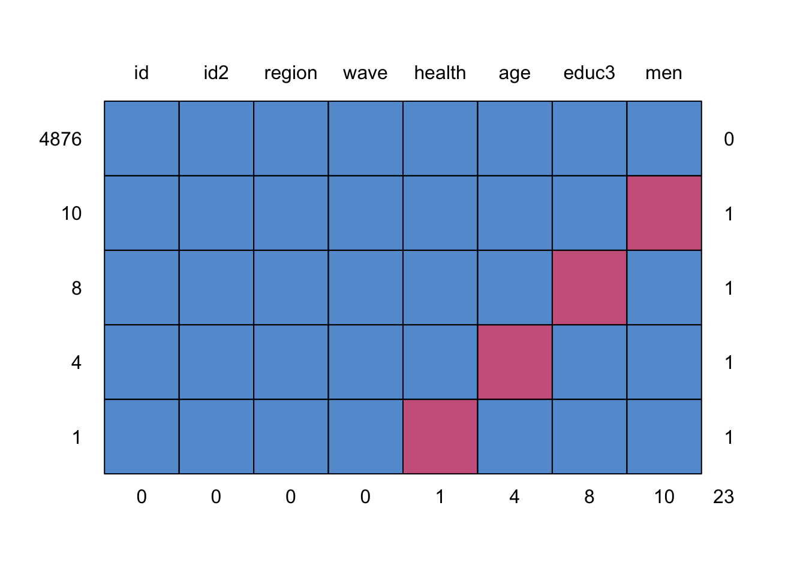
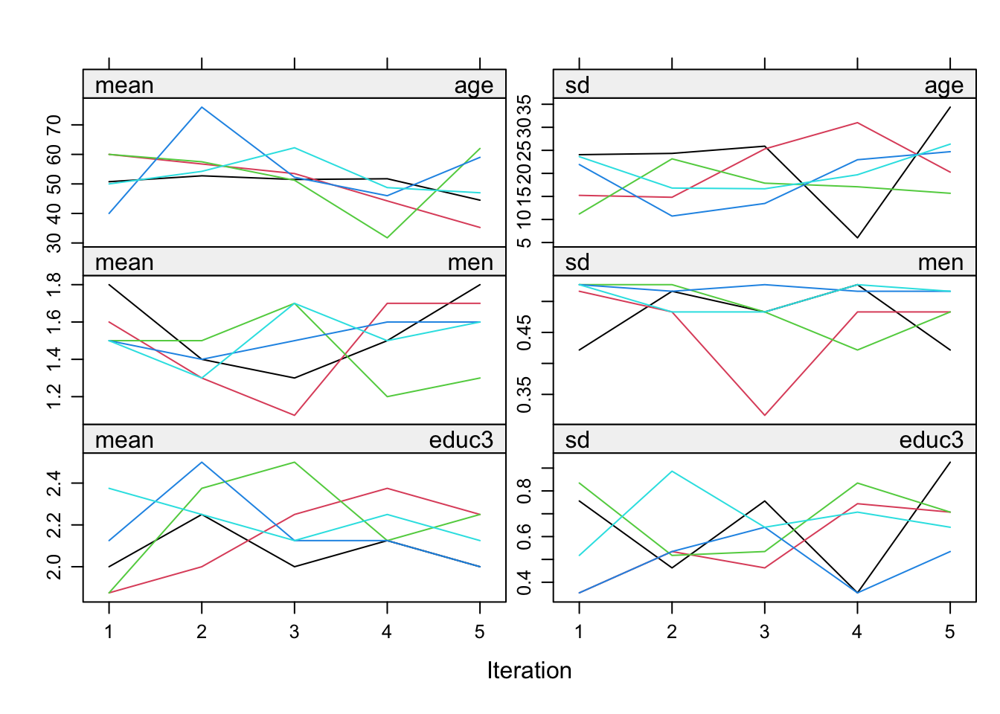
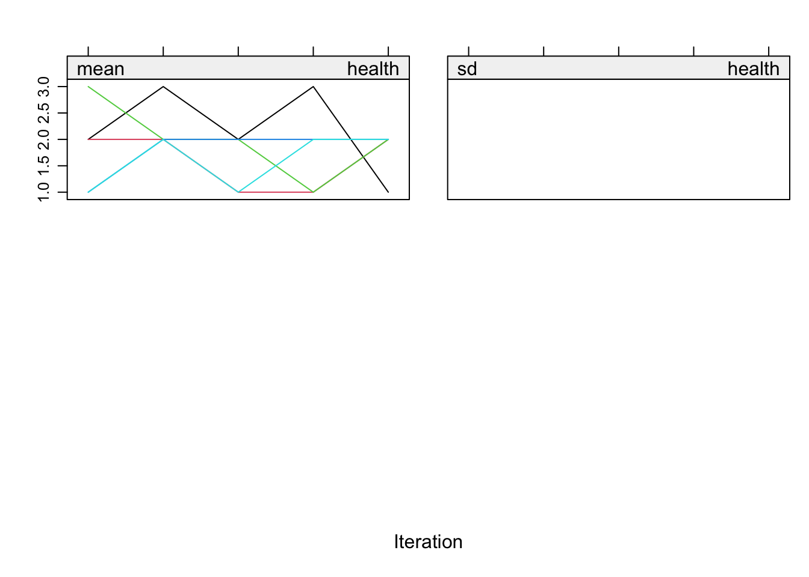

Introduction to R for SNA; a tutorial.
rm(list = ls())
require(foreign)
require(tidyverse)
require(haven)
require(mice)cv08 <- foreign::read.spss("tutorial_data/Cultural_Changes_2008.sav", use.value.labels = T, to.data.frame = T)
cv10 <- foreign::read.spss("tutorial_data/Cultural_Changes_2010.sav", use.value.labels = T, to.data.frame = T)
# normally I think setting use.value.labels=F is more convenient. Thus lets load the data again but
# now without labels
cv08_nolab <- foreign::read.spss("tutorial_data/Cultural_Changes_2008.sav", use.value.labels = F, to.data.frame = T)
cv10_nolab <- foreign::read.spss("tutorial_data/Cultural_Changes_2010.sav", use.value.labels = F, to.data.frame = T)
# finally, import the data using haven
cv08_haven <- haven::read_spss("tutorial_data/Cultural_Changes_2008.sav")
cv10_haven <- haven::read_spss("tutorial_data/Cultural_Changes_2010.sav")str(cv08)#> 'data.frame': 1963 obs. of 278 variables:
#> $ we_id : Factor w/ 1963 levels "36775330","36775340",..: 1 2 3 4 5 6 7 8 9 10 ...
#> $ veilignr: num 8.11e+08 8.11e+08 8.11e+08 8.11e+08 8.11e+08 ...
#> $ lft1 : Factor w/ 78 levels "0","15","16",..: 38 26 3 17 44 36 49 21 46 28 ...
#> $ geslacht: Factor w/ 3 levels "Onbekend","Man",..: 2 3 3 2 2 3 2 3 2 2 ...
#> $ allochtn: Factor w/ 4 levels "geen allochtoon",..: 1 1 2 1 1 2 1 2 1 1 ...
#> $ lft01 : Factor w/ 82 levels "< één jaar","één jaar",..: 40 28 4 19 46 38 51 23 48 30 ...
#> $ lftop : Factor w/ 81 levels "< één jaar","één jaar",..: 40 28 4 18 46 38 51 23 48 30 ...
#> $ gewicht : num 8423 6244 13434 8997 8423 ...
#> $ var006n : Factor w/ 11 levels "onbekend","OP < 12 jr of volgt actueel bas.ondw.",..: 8 10 5 10 8 4 4 7 7 3 ...
#> $ v040 : Factor w/ 6 levels "Geen opgave",..: 6 5 6 5 6 6 5 5 5 5 ...
#> $ var723 : Factor w/ 62 levels "Weigert","Weet niet",..: 3 43 3 17 3 3 39 30 28 17 ...
#> $ var723a : Factor w/ 8 levels "Geen opgave",..: 2 2 2 2 2 2 2 2 2 2 ...
#> $ v202n : Factor w/ 10 levels "-3","werkt >12 uur",..: 6 2 9 2 5 4 2 2 2 2 ...
#> $ var1061a: Factor w/ 6 levels "Geen opgave",..: 5 6 6 6 6 6 6 6 6 6 ...
#> $ var1061b: Factor w/ 31 levels "Weigert","Weet niet",..: 17 3 3 3 3 3 3 3 3 3 ...
#> $ var1062a: Factor w/ 6 levels "Geen opgave",..: 6 6 6 6 6 6 6 6 5 6 ...
#> $ var1062b: Factor w/ 31 levels "Weigert","Weet niet",..: 3 3 3 3 3 3 3 3 21 3 ...
#> $ int137n : Factor w/ 8 levels "Geen opgave",..: 2 7 2 5 2 5 6 7 7 6 ...
#> $ int138n : Factor w/ 8 levels "Geen opgave",..: 7 7 7 7 6 7 7 6 7 7 ...
#> $ int139n : Factor w/ 8 levels "Geen opgave",..: 2 7 2 2 2 7 5 5 7 2 ...
#> $ int140n : Factor w/ 8 levels "Geen opgave",..: 2 7 7 7 5 7 5 5 7 7 ...
#> $ int141n : Factor w/ 8 levels "Geen opgave",..: 5 7 5 7 5 7 5 5 7 5 ...
#> $ v401 : Factor w/ 9 levels "Geen opgave",..: 6 6 6 6 7 6 7 6 6 6 ...
#> $ var1343 : Factor w/ 7 levels "Geen opgave",..: 7 7 7 7 6 7 7 7 7 7 ...
#> $ var648 : Factor w/ 9 levels "Geen opgave",..: 7 5 7 8 7 7 7 8 7 7 ...
#> $ var149 : Factor w/ 8 levels "Geen opgave",..: 6 5 3 7 6 6 6 6 5 6 ...
#> $ var058 : Factor w/ 6 levels "Geen opgave",..: 5 5 5 5 5 6 6 5 5 5 ...
#> $ var059 : Factor w/ 6 levels "Geen opgave",..: 5 5 5 6 5 5 5 5 5 6 ...
#> $ var064 : Factor w/ 6 levels "Geen opgave",..: 5 5 6 5 6 6 6 5 6 6 ...
#> $ var365 : Factor w/ 6 levels "Geen opgave",..: 5 5 6 5 5 5 5 6 6 6 ...
#> $ var065 : Factor w/ 6 levels "Geen opgave",..: 6 5 5 6 3 5 6 6 5 5 ...
#> $ var092 : Factor w/ 9 levels "Geen opgave",..: 6 3 6 8 8 8 8 7 8 7 ...
#> $ var096 : Factor w/ 10 levels "Geen opgave",..: 7 7 6 7 7 5 6 6 5 5 ...
#> $ int054 : Factor w/ 8 levels "Geen opgave",..: 8 3 7 7 5 5 6 7 6 5 ...
#> $ int055 : Factor w/ 8 levels "Geen opgave",..: 7 7 7 6 3 5 6 7 7 6 ...
#> $ int056 : Factor w/ 8 levels "Geen opgave",..: 6 6 7 7 6 5 5 7 6 7 ...
#> $ int057 : Factor w/ 8 levels "Geen opgave",..: 6 7 6 6 5 6 7 7 6 5 ...
#> $ int058 : Factor w/ 8 levels "Geen opgave",..: 7 7 6 6 3 5 6 7 8 6 ...
#> $ int059 : Factor w/ 8 levels "Geen opgave",..: 6 7 3 7 7 5 5 6 8 6 ...
#> $ int059a : Factor w/ 8 levels "Geen opgave",..: 7 6 6 6 7 5 6 6 7 6 ...
#> $ var571 : Factor w/ 7 levels "Geen opgave",..: 6 7 7 6 6 6 6 7 6 7 ...
#> $ var572 : Factor w/ 7 levels "Geen opgave",..: 2 5 7 2 2 2 2 7 2 5 ...
#> $ var573 : Factor w/ 7 levels "Geen opgave",..: 5 6 7 6 5 5 5 5 6 6 ...
#> $ var574 : Factor w/ 7 levels "Geen opgave",..: 7 2 7 2 6 7 7 6 2 2 ...
#> $ var576 : Factor w/ 10 levels "Geen opgave",..: 9 6 7 8 9 6 9 8 8 9 ...
#> $ var153 : Factor w/ 7 levels "Geen opgave",..: 7 5 5 5 5 5 5 5 5 5 ...
#> $ var154 : Factor w/ 7 levels "Geen opgave",..: 7 6 6 6 7 6 7 6 7 7 ...
#> $ var155 : Factor w/ 7 levels "Geen opgave",..: 6 6 6 7 7 7 7 3 6 6 ...
#> $ var156 : Factor w/ 7 levels "Geen opgave",..: 7 6 6 6 6 3 7 6 6 6 ...
#> $ var157 : Factor w/ 7 levels "Geen opgave",..: 6 3 6 6 6 7 7 3 6 3 ...
#> $ var157a : Factor w/ 7 levels "Geen opgave",..: 7 3 6 6 7 7 7 6 6 6 ...
#> $ var154a : Factor w/ 7 levels "Geen opgave",..: 3 3 6 6 6 6 6 6 6 6 ...
#> $ var164 : Factor w/ 8 levels "Geen opgave",..: 6 6 6 5 5 5 5 6 5 5 ...
#> $ var165 : Factor w/ 10 levels "Geen opgave",..: 7 7 7 8 9 9 8 8 9 8 ...
#> $ var166 : Factor w/ 10 levels "Geen opgave",..: 7 7 8 7 9 9 8 7 8 8 ...
#> $ var179 : Factor w/ 6 levels "Geen opgave",..: 5 5 6 5 5 5 5 5 5 5 ...
#> $ var180 : Factor w/ 6 levels "Geen opgave",..: 5 5 5 6 5 6 6 5 5 5 ...
#> $ var184 : Factor w/ 6 levels "Geen opgave",..: 5 5 6 5 6 5 5 5 5 5 ...
#> $ var185 : Factor w/ 6 levels "Geen opgave",..: 6 5 5 5 6 5 5 5 5 5 ...
#> $ var198a : Factor w/ 6 levels "Geen opgave",..: 6 5 5 5 5 5 6 6 6 5 ...
#> $ var198 : Factor w/ 11 levels "Geen opgave",..: 2 7 9 7 5 5 2 2 2 7 ...
#> $ var201a : Factor w/ 6 levels "Geen opgave",..: 6 5 5 6 6 5 6 6 6 6 ...
#> $ var201b : Factor w/ 10 levels "Geen opgave",..: 2 6 8 2 2 5 2 2 2 2 ...
#> $ var204 : Factor w/ 9 levels "Geen opgave",..: 9 8 9 8 9 8 9 9 7 9 ...
#> $ int257 : Factor w/ 11 levels "Geen opgave",..: 11 7 7 8 10 6 7 9 7 11 ...
#> $ var211 : Factor w/ 7 levels "Geen opgave",..: 7 6 7 7 7 5 7 6 6 7 ...
#> $ var223 : Factor w/ 7 levels "Geen opgave",..: 5 6 5 7 5 5 5 7 5 5 ...
#> $ var1320 : Factor w/ 9 levels "Geen opgave",..: 5 6 6 6 6 6 6 7 5 5 ...
#> $ var1321 : Factor w/ 9 levels "Geen opgave",..: 5 8 6 6 8 6 8 8 6 6 ...
#> $ var1322 : Factor w/ 7 levels "Geen opgave",..: 7 7 6 6 7 5 5 6 5 5 ...
#> $ var1323 : Factor w/ 7 levels "Geen opgave",..: 7 7 6 7 7 6 7 7 7 7 ...
#> $ var1324 : Factor w/ 7 levels "Geen opgave",..: 7 7 6 7 7 7 7 7 7 7 ...
#> $ var1325 : Factor w/ 7 levels "Geen opgave",..: 7 7 7 7 7 6 7 7 7 6 ...
#> $ var1326 : Factor w/ 7 levels "Geen opgave",..: 7 7 7 7 7 7 7 7 7 7 ...
#> $ var1327 : Factor w/ 7 levels "Geen opgave",..: 7 7 6 7 7 6 7 7 6 7 ...
#> $ var1328 : Factor w/ 7 levels "Geen opgave",..: 7 7 7 7 7 7 7 7 7 7 ...
#> $ var229 : Factor w/ 12 levels "Geen opgave",..: 7 7 7 12 7 7 7 6 7 7 ...
#> $ int218 : Factor w/ 9 levels "Geen opgave",..: 6 6 7 7 6 8 7 7 8 7 ...
#> $ int219 : Factor w/ 9 levels "Geen opgave",..: 6 6 7 7 7 6 6 6 7 7 ...
#> $ int221 : Factor w/ 9 levels "Geen opgave",..: 9 6 9 7 7 6 7 7 6 7 ...
#> $ int222 : Factor w/ 9 levels "Geen opgave",..: 6 6 7 6 8 7 7 6 8 7 ...
#> $ int223 : Factor w/ 9 levels "Geen opgave",..: 7 7 5 6 7 6 7 6 5 8 ...
#> $ int710 : Factor w/ 9 levels "Geen opgave",..: 8 6 5 7 7 6 7 7 6 7 ...
#> $ int711 : Factor w/ 9 levels "Geen opgave",..: 8 6 7 6 7 9 7 6 5 8 ...
#> $ int712 : Factor w/ 9 levels "Geen opgave",..: 6 7 7 7 7 6 8 6 8 8 ...
#> $ int713 : Factor w/ 9 levels "Geen opgave",..: 7 7 3 7 6 8 8 6 8 7 ...
#> $ int714 : Factor w/ 9 levels "Geen opgave",..: 7 6 3 7 7 7 8 7 8 8 ...
#> $ int715 : Factor w/ 9 levels "Geen opgave",..: 7 6 9 6 6 7 9 7 7 8 ...
#> $ int716 : Factor w/ 9 levels "Geen opgave",..: 9 7 7 7 6 6 7 7 7 7 ...
#> $ var433 : Factor w/ 10 levels "Geen opgave",..: 6 6 7 7 7 5 9 6 7 6 ...
#> $ var439 : Factor w/ 10 levels "Geen opgave",..: 6 5 9 8 3 5 5 8 5 9 ...
#> $ var1329 : Factor w/ 10 levels "Geen opgave",..: 6 8 6 8 6 5 6 5 5 6 ...
#> $ var1330 : Factor w/ 10 levels "Geen opgave",..: 9 9 8 7 9 5 5 8 5 6 ...
#> $ var445 : Factor w/ 10 levels "Geen opgave",..: 8 9 6 6 8 8 9 6 7 6 ...
#> $ var446 : Factor w/ 10 levels "Geen opgave",..: 7 9 5 8 6 5 6 7 5 5 ...
#> $ var447 : Factor w/ 10 levels "Geen opgave",..: 7 9 5 8 6 5 8 7 5 5 ...
#> $ var451 : Factor w/ 10 levels "Geen opgave",..: 9 9 8 8 8 5 8 9 9 8 ...
#> $ var452 : Factor w/ 10 levels "Geen opgave",..: 6 7 6 6 6 5 8 7 5 5 ...
#> $ var1316 : Factor w/ 10 levels "Geen opgave",..: 9 9 8 8 9 5 6 6 5 9 ...
#> [list output truncated]
#> - attr(*, "variable.labels")= Named chr [1:278] "WE_ID" "veilignummer" "Leeftijd op 1-jan-2009" "Geslacht hhpersoon (GBA)" ...
#> ..- attr(*, "names")= chr [1:278] "we_id" "veilignr" "lft1" "geslacht" ...
#> - attr(*, "codepage")= int 1252str(cv08_nolab)#> 'data.frame': 1963 obs. of 278 variables:
#> $ we_id : num 36775330 36775340 36775420 36775440 36775450 ...
#> ..- attr(*, "value.labels")= Named num(0)
#> .. ..- attr(*, "names")= chr(0)
#> $ veilignr: num 8.11e+08 8.11e+08 8.11e+08 8.11e+08 8.11e+08 ...
#> $ lft1 : num 51 39 16 30 57 49 62 34 59 41 ...
#> ..- attr(*, "value.labels")= Named chr "99"
#> .. ..- attr(*, "names")= chr "Onbekend"
#> $ geslacht: chr "M" "V" "V" "M" ...
#> ..- attr(*, "value.labels")= Named chr [1:3] "V " "M " "9 "
#> .. ..- attr(*, "names")= chr [1:3] "Vrouw" "Man" "Onbekend"
#> $ allochtn: num 0 0 1 0 0 1 0 1 0 0 ...
#> ..- attr(*, "value.labels")= Named chr [1:4] "9" "2" "1" "0"
#> .. ..- attr(*, "names")= chr [1:4] "Onbekend" "onbekend" "allochtoon" "geen allochtoon"
#> $ lft01 : num 50 38 15 29 56 48 61 33 58 40 ...
#> ..- attr(*, "value.labels")= Named chr [1:5] "125" "99" "2" "1" ...
#> .. ..- attr(*, "names")= chr [1:5] "125 jaar" "Onbekend" "twee jaar" "één jaar" ...
#> $ lftop : num 51 39 16 29 57 49 62 34 59 41 ...
#> ..- attr(*, "value.labels")= Named chr [1:5] "125" "99" "2" "1" ...
#> .. ..- attr(*, "names")= chr [1:5] "125 jaar" "Onbekend" "twee jaar" "één jaar" ...
#> $ gewicht : num 8423 6244 13434 8997 8423 ...
#> $ var006n : num 6 8 3 8 6 2 2 5 5 1 ...
#> ..- attr(*, "value.labels")= Named chr [1:11] "9999999999" "8" "7" "6" ...
#> .. ..- attr(*, "names")= chr [1:11] "Onbekend" "wo" "wo" "hbo" ...
#> $ v040 : num 2 1 2 1 2 2 1 1 1 1 ...
#> ..- attr(*, "value.labels")= Named chr [1:6] "2" "1" "-2" "-3" ...
#> .. ..- attr(*, "names")= chr [1:6] "Nee" "Ja" "Weigert" "Weet niet" ...
#> $ var723 : num -5 45 -5 20 -5 -5 40 32 30 20 ...
#> ..- attr(*, "value.labels")= Named chr [1:4] "-2" "-3" "-5" "-6"
#> .. ..- attr(*, "names")= chr [1:4] "Weigert" "Weet niet" "N.v.t." "Geen opgave"
#> $ var723a : num -5 -5 -5 -5 -5 -5 -5 -5 -5 -5 ...
#> ..- attr(*, "value.labels")= Named chr [1:8] "4" "3" "2" "1" ...
#> .. ..- attr(*, "names")= chr [1:8] "of om 30 uur of meer per week ?" "minder dan 30 uur," "minder dan 12 uur," "4 uur of minder per week," ...
#> $ v202n : num 4 1 7 1 3 2 1 1 1 1 ...
#> ..- attr(*, "value.labels")= Named chr [1:9] "10" "8" "7" "6" ...
#> .. ..- attr(*, "names")= chr [1:9] "vrijwilliger" "anders" "scholier, student" "werkt <12 uur" ...
#> $ var1061a: num 1 2 2 2 2 2 2 2 2 2 ...
#> ..- attr(*, "value.labels")= Named chr [1:6] "2" "1" "-2" "-3" ...
#> .. ..- attr(*, "names")= chr [1:6] "Nee" "Ja" "Weigert" "Weet niet" ...
#> $ var1061b: num 23 -5 -5 -5 -5 -5 -5 -5 -5 -5 ...
#> ..- attr(*, "value.labels")= Named chr [1:4] "-2" "-3" "-5" "-6"
#> .. ..- attr(*, "names")= chr [1:4] "Weigert" "Weet niet" "N.v.t." "Geen opgave"
#> $ var1062a: num 2 2 2 2 2 2 2 2 1 2 ...
#> ..- attr(*, "value.labels")= Named chr [1:6] "2" "1" "-2" "-3" ...
#> .. ..- attr(*, "names")= chr [1:6] "Nee" "Ja" "Weigert" "Weet niet" ...
#> $ var1062b: num -5 -5 -5 -5 -5 -5 -5 -5 3 -5 ...
#> ..- attr(*, "value.labels")= Named chr [1:4] "-2" "-3" "-5" "-6"
#> .. ..- attr(*, "names")= chr [1:4] "Weigert" "Weet niet" "N.v.t." "Geen opgave"
#> $ int137n : num -5 3 -5 1 -5 1 2 3 3 2 ...
#> ..- attr(*, "value.labels")= Named chr [1:8] "4" "3" "2" "1" ...
#> .. ..- attr(*, "names")= chr [1:8] "Niet van toepassing (niet noemen)" "of net zoveel tijd als nu?" "minder tijd," "meer tijd," ...
#> $ int138n : num 3 3 3 3 2 3 3 2 3 3 ...
#> ..- attr(*, "value.labels")= Named chr [1:8] "4" "3" "2" "1" ...
#> .. ..- attr(*, "names")= chr [1:8] "Niet van toepassing (niet noemen)" "Net zoveel tijd als nu" "Minder tijd" "Meer tijd" ...
#> $ int139n : num -5 3 -5 -5 -5 3 1 1 3 -5 ...
#> ..- attr(*, "value.labels")= Named chr [1:8] "4" "3" "2" "1" ...
#> .. ..- attr(*, "names")= chr [1:8] "Niet van toepassing (niet noemen)" "Net zoveel tijd als nu" "Minder tijd" "Meer tijd" ...
#> $ int140n : num -5 3 3 3 1 3 1 1 3 3 ...
#> ..- attr(*, "value.labels")= Named chr [1:8] "4" "3" "2" "1" ...
#> .. ..- attr(*, "names")= chr [1:8] "Niet van toepassing (niet noemen)" "of net zoveel tijd als nu?" "minder tijd," "meer tijd," ...
#> $ int141n : num 1 3 1 3 1 3 1 1 3 1 ...
#> ..- attr(*, "value.labels")= Named chr [1:8] "4" "3" "2" "1" ...
#> .. ..- attr(*, "names")= chr [1:8] "Niet van toepassing (niet noemen)" "Net zoveel tijd als nu" "Minder tijd" "Meer tijd" ...
#> $ v401 : num 2 2 2 2 3 2 3 2 2 2 ...
#> ..- attr(*, "value.labels")= Named chr [1:9] "5" "4" "3" "2" ...
#> .. ..- attr(*, "names")= chr [1:9] "of zeer slecht?" "slecht," "gaat wel," "goed," ...
#> $ var1343 : num 3 3 3 3 2 3 3 3 3 3 ...
#> ..- attr(*, "value.labels")= Named chr [1:7] "3" "2" "1" "-2" ...
#> .. ..- attr(*, "names")= chr [1:7] "Nee" "Soms" "Ja" "Weigert" ...
#> $ var648 : num 3 1 3 4 3 3 3 4 3 3 ...
#> ..- attr(*, "value.labels")= Named chr [1:9] "5" "4" "3" "2" ...
#> .. ..- attr(*, "names")= chr [1:9] "of niet zo tevreden?" "tamelijk tevreden," "tevreden," "zeer tevreden," ...
#> $ var149 : num 2 1 -3 3 2 2 2 2 1 2 ...
#> ..- attr(*, "value.labels")= Named chr [1:8] "4" "3" "2" "1" ...
#> .. ..- attr(*, "names")= chr [1:8] "Geen mening" "Niet tevreden" "Tamelijk tevreden" "Tevreden" ...
#> $ var058 : num 1 1 1 1 1 2 2 1 1 1 ...
#> ..- attr(*, "value.labels")= Named chr [1:6] "2" "1" "-2" "-3" ...
#> .. ..- attr(*, "names")= chr [1:6] "Nee" "Ja" "Weigert" "Weet niet" ...
#> $ var059 : num 1 1 1 2 1 1 1 1 1 2 ...
#> ..- attr(*, "value.labels")= Named chr [1:6] "2" "1" "-2" "-3" ...
#> .. ..- attr(*, "names")= chr [1:6] "Nee" "Ja" "Weigert" "Weet niet" ...
#> $ var064 : num 1 1 2 1 2 2 2 1 2 2 ...
#> ..- attr(*, "value.labels")= Named chr [1:6] "2" "1" "-2" "-3" ...
#> .. ..- attr(*, "names")= chr [1:6] "Onvoldoende" "Voldoende" "Weigert" "Weet niet" ...
#> $ var365 : num 1 1 2 1 1 1 1 2 2 2 ...
#> ..- attr(*, "value.labels")= Named chr [1:6] "2" "1" "-2" "-3" ...
#> .. ..- attr(*, "names")= chr [1:6] "Nee" "Ja" "Weigert" "Weet niet" ...
#> $ var065 : num 2 1 1 2 -3 1 2 2 1 1 ...
#> ..- attr(*, "value.labels")= Named chr [1:6] "2" "1" "-2" "-3" ...
#> .. ..- attr(*, "names")= chr [1:6] "Welvaart houdt aan" "Voorziet crisis" "Weigert" "Weet niet" ...
#> $ var092 : num 2 -3 2 4 4 4 4 3 4 3 ...
#> ..- attr(*, "value.labels")= Named chr [1:9] "5" "4" "3" "2" ...
#> .. ..- attr(*, "names")= chr [1:9] "Geen mening" "of gaat achteruit?" "blijft ongeveer gelijk," "gedeeltelijk vooruit gedeeltelijk achteruit," ...
#> $ var096 : num 3 3 2 3 3 1 2 2 1 1 ...
#> ..- attr(*, "value.labels")= Named chr [1:10] "6" "5" "4" "3" ...
#> .. ..- attr(*, "names")= chr [1:10] "Geen mening" "Veel minder" "Een beetje minder" "Laten zoals nu" ...
#> $ int054 : num 4 -3 3 3 1 1 2 3 2 1 ...
#> ..- attr(*, "value.labels")= Named chr [1:8] "4" "3" "2" "1" ...
#> .. ..- attr(*, "names")= chr [1:8] "Helemaal geen tegenstelling" "Niet zo groot" "Groot" "Zeer groot" ...
#> $ int055 : num 3 3 3 2 -3 1 2 3 3 2 ...
#> ..- attr(*, "value.labels")= Named chr [1:8] "4" "3" "2" "1" ...
#> .. ..- attr(*, "names")= chr [1:8] "Helemaal geen tegenstelling" "Niet zo groot" "Groot" "Zeer groot" ...
#> $ int056 : num 2 2 3 3 2 1 1 3 2 3 ...
#> ..- attr(*, "value.labels")= Named chr [1:8] "4" "3" "2" "1" ...
#> .. ..- attr(*, "names")= chr [1:8] "Helemaal geen tegenstelling" "Niet zo groot" "Groot" "Zeer groot" ...
#> $ int057 : num 2 3 2 2 1 2 3 3 2 1 ...
#> ..- attr(*, "value.labels")= Named chr [1:8] "4" "3" "2" "1" ...
#> .. ..- attr(*, "names")= chr [1:8] "Helemaal geen tegenstelling" "Niet zo groot" "Groot" "Zeer groot" ...
#> $ int058 : num 3 3 2 2 -3 1 2 3 4 2 ...
#> ..- attr(*, "value.labels")= Named chr [1:8] "4" "3" "2" "1" ...
#> .. ..- attr(*, "names")= chr [1:8] "Helemaal geen tegenstelling" "Niet zo groot" "Groot" "Zeer groot" ...
#> $ int059 : num 2 3 -3 3 3 1 1 2 4 2 ...
#> ..- attr(*, "value.labels")= Named chr [1:8] "4" "3" "2" "1" ...
#> .. ..- attr(*, "names")= chr [1:8] "Helemaal geen tegenstelling" "Niet zo groot" "Groot" "Zeer groot" ...
#> $ int059a : num 3 2 2 2 3 1 2 2 3 2 ...
#> ..- attr(*, "value.labels")= Named chr [1:8] "4" "3" "2" "1" ...
#> .. ..- attr(*, "names")= chr [1:8] "Helemaal geen tegenstelling" "Niet zo groot" "Groot" "Zeer groot" ...
#> $ var571 : num 2 3 3 2 2 2 2 3 2 3 ...
#> ..- attr(*, "value.labels")= Named chr [1:7] "3" "2" "1" "-2" ...
#> .. ..- attr(*, "names")= chr [1:7] "Dalen" "Gelijk blijven" "Stijgen" "Weigert" ...
#> $ var572 : num -5 1 3 -5 -5 -5 -5 3 -5 1 ...
#> ..- attr(*, "value.labels")= Named chr [1:7] "3" "2" "1" "-2" ...
#> .. ..- attr(*, "names")= chr [1:7] "Een klein beetje" "Enigszins" "Sterk" "Weigert" ...
#> $ var573 : num 1 2 3 2 1 1 1 1 2 2 ...
#> ..- attr(*, "value.labels")= Named chr [1:7] "3" "2" "1" "-2" ...
#> .. ..- attr(*, "names")= chr [1:7] "Dalen" "Gelijk blijven" "Stijgen" "Weigert" ...
#> $ var574 : num 3 -5 3 -5 2 3 3 2 -5 -5 ...
#> ..- attr(*, "value.labels")= Named chr [1:7] "3" "2" "1" "-2" ...
#> .. ..- attr(*, "names")= chr [1:7] "Een klein beetje" "Enigszins" "Sterk" "Weigert" ...
#> $ var576 : num 5 2 3 4 5 2 5 4 4 5 ...
#> ..- attr(*, "value.labels")= Named chr [1:10] "6" "5" "4" "3" ...
#> .. ..- attr(*, "names")= chr [1:10] "Geen mening" "of sterk mee oneens?" "mee oneens," "noch mee eens, noch mee oneens," ...
#> $ var153 : num 3 1 1 1 1 1 1 1 1 1 ...
#> ..- attr(*, "value.labels")= Named chr [1:7] "3" "2" "1" "-2" ...
#> .. ..- attr(*, "names")= chr [1:7] "Geen oordeel" "Ontevreden" "Tevreden" "Weigert" ...
#> $ var154 : num 3 2 2 2 3 2 3 2 3 3 ...
#> ..- attr(*, "value.labels")= Named chr [1:7] "3" "2" "1" "-2" ...
#> .. ..- attr(*, "names")= chr [1:7] "Onvoldoende" "Voldoende" "Te goed (niet noemen)" "Weigert" ...
#> $ var155 : num 2 2 2 3 3 3 3 -3 2 2 ...
#> ..- attr(*, "value.labels")= Named chr [1:7] "3" "2" "1" "-2" ...
#> .. ..- attr(*, "names")= chr [1:7] "Onvoldoende" "Voldoende" "Te goed (niet noemen)" "Weigert" ...
#> $ var156 : num 3 2 2 2 2 -3 3 2 2 2 ...
#> ..- attr(*, "value.labels")= Named chr [1:7] "3" "2" "1" "-2" ...
#> .. ..- attr(*, "names")= chr [1:7] "Onvoldoende" "Voldoende" "Te goed (niet noemen)" "Weigert" ...
#> $ var157 : num 2 -3 2 2 2 3 3 -3 2 -3 ...
#> ..- attr(*, "value.labels")= Named chr [1:7] "3" "2" "1" "-2" ...
#> .. ..- attr(*, "names")= chr [1:7] "Onvoldoende" "Voldoende" "Te goed (niet noemen)" "Weigert" ...
#> $ var157a : num 3 -3 2 2 3 3 3 2 2 2 ...
#> ..- attr(*, "value.labels")= Named chr [1:7] "3" "2" "1" "-2" ...
#> .. ..- attr(*, "names")= chr [1:7] "Onvoldoende" "Voldoende" "Te goed (niet noemen)" "Weigert" ...
#> $ var154a : num -3 -3 2 2 2 2 2 2 2 2 ...
#> ..- attr(*, "value.labels")= Named chr [1:7] "3" "2" "1" "-2" ...
#> .. ..- attr(*, "names")= chr [1:7] "Onvoldoende" "Voldoende" "Te goed (niet noemen)" "Weigert" ...
#> $ var164 : num 2 2 2 1 1 1 1 2 1 1 ...
#> ..- attr(*, "value.labels")= Named chr [1:8] "4" "3" "2" "1" ...
#> .. ..- attr(*, "names")= chr [1:8] "Geen mening (niet noemen)" "Te klein" "Ongeveer juist" "Te groot" ...
#> $ var165 : num 3 3 3 4 5 5 4 4 5 4 ...
#> ..- attr(*, "value.labels")= Named chr [1:10] "6" "5" "4" "3" ...
#> .. ..- attr(*, "names")= chr [1:10] "Geen oordeel (niet noemen)" "Veel kleiner" "Een beetje kleiner" "Blijven zoals nu" ...
#> $ var166 : num 3 3 4 3 5 5 4 3 4 4 ...
#> ..- attr(*, "value.labels")= Named chr [1:10] "6" "5" "4" "3" ...
#> .. ..- attr(*, "names")= chr [1:10] "Geen oordeel (niet noemen)" "Veel kleiner" "Een beetje kleiner" "Blijven zoals nu" ...
#> $ var179 : num 1 1 2 1 1 1 1 1 1 1 ...
#> ..- attr(*, "value.labels")= Named chr [1:6] "2" "1" "-2" "-3" ...
#> .. ..- attr(*, "names")= chr [1:6] "Nee" "Ja" "Weigert" "Weet niet" ...
#> $ var180 : num 1 1 1 2 1 2 2 1 1 1 ...
#> ..- attr(*, "value.labels")= Named chr [1:6] "2" "1" "-2" "-3" ...
#> .. ..- attr(*, "names")= chr [1:6] "Nee" "Ja" "Weigert" "Weet niet" ...
#> $ var184 : num 1 1 2 1 2 1 1 1 1 1 ...
#> ..- attr(*, "value.labels")= Named chr [1:6] "2" "1" "-2" "-3" ...
#> .. ..- attr(*, "names")= chr [1:6] "Nee" "Ja" "Weigert" "Weet niet" ...
#> $ var185 : num 2 1 1 1 2 1 1 1 1 1 ...
#> ..- attr(*, "value.labels")= Named chr [1:6] "2" "1" "-2" "-3" ...
#> .. ..- attr(*, "names")= chr [1:6] "Nee" "Ja" "Weigert" "Weet niet" ...
#> $ var198a : num 2 1 1 1 1 1 2 2 2 1 ...
#> ..- attr(*, "value.labels")= Named chr [1:6] "2" "1" "-2" "-3" ...
#> .. ..- attr(*, "names")= chr [1:6] "Nee" "Ja" "Weigert" "Weet niet" ...
#> $ var198 : num -5 3 5 3 1 1 -5 -5 -5 3 ...
#> ..- attr(*, "value.labels")= Named chr [1:11] "7" "6" "5" "4" ...
#> .. ..- attr(*, "names")= chr [1:11] "Ander geloof" "Boeddhistisch" "Islamitisch" "Hindoe" ...
#> $ var201a : num 2 1 1 2 2 1 2 2 2 2 ...
#> ..- attr(*, "value.labels")= Named chr [1:6] "2" "1" "-2" "-3" ...
#> .. ..- attr(*, "names")= chr [1:6] "Nee" "Ja" "Weigert" "Weet niet" ...
#> $ var201b : num -5 2 4 -5 -5 1 -5 -5 -5 -5 ...
#> ..- attr(*, "value.labels")= Named chr [1:10] "6" "5" "4" "3" ...
#> .. ..- attr(*, "names")= chr [1:10] "Ander kerkgenootschap of levensbeschouwelijke groepering" "Boeddhistisch" "Islamitisch" "Hindoe" ...
#> $ var204 : num 5 4 5 4 5 4 5 5 3 5 ...
#> ..- attr(*, "value.labels")= Named chr [1:9] "5" "4" "3" "2" ...
#> .. ..- attr(*, "names")= chr [1:9] "of nooit?" "minder dan eenmaal per maand," "eens per maand," "eens per 2 weken," ...
#> $ int257 : num 7 3 3 4 6 2 3 5 3 7 ...
#> ..- attr(*, "value.labels")= Named chr [1:11] "7" "6" "5" "4" ...
#> .. ..- attr(*, "names")= chr [1:11] "Buitengewoon ongelovig" "Erg ongelovig" "Enigszins ongelovig" "Noch gelovig, noch ongelovig" ...
#> $ var211 : num 3 2 3 3 3 1 3 2 2 3 ...
#> ..- attr(*, "value.labels")= Named chr [1:7] "3" "2" "1" "-2" ...
#> .. ..- attr(*, "names")= chr [1:7] "Nee" "Gedeeltelijk" "Ja" "Weigert" ...
#> $ var223 : num 1 2 1 3 1 1 1 3 1 1 ...
#> ..- attr(*, "value.labels")= Named chr [1:7] "3" "2" "1" "-2" ...
#> .. ..- attr(*, "names")= chr [1:7] "Hangt ervan af" "Moeten niet los van elkaar staan" "Moeten los van elkaar staan" "Weigert" ...
#> $ var1320 : num 1 2 2 2 2 2 2 3 1 1 ...
#> ..- attr(*, "value.labels")= Named chr [1:9] "5" "4" "3" "2" ...
#> .. ..- attr(*, "names")= chr [1:9] "of sterk mee oneens?" "enigszins mee oneens," "niet mee eens, niet mee oneens," "enigszins mee eens," ...
#> $ var1321 : num 1 4 2 2 4 2 4 4 2 2 ...
#> ..- attr(*, "value.labels")= Named chr [1:9] "5" "4" "3" "2" ...
#> .. ..- attr(*, "names")= chr [1:9] "of sterk mee oneens?" "enigszins mee oneens," "niet mee eens, niet mee oneens," "enigszins mee eens," ...
#> $ var1322 : num 3 3 2 2 3 1 1 2 1 1 ...
#> ..- attr(*, "value.labels")= Named chr [1:7] "3" "2" "1" "-2" ...
#> .. ..- attr(*, "names")= chr [1:7] "of helemaal niet voor u?" "gedeeltelijk voor u," "helemaal voor u," "Weigert" ...
#> $ var1323 : num 3 3 2 3 3 2 3 3 3 3 ...
#> ..- attr(*, "value.labels")= Named chr [1:7] "3" "2" "1" "-2" ...
#> .. ..- attr(*, "names")= chr [1:7] "of zelden of nooit?" "soms," "vaak," "Weigert" ...
#> $ var1324 : num 3 3 2 3 3 3 3 3 3 3 ...
#> ..- attr(*, "value.labels")= Named chr [1:7] "3" "2" "1" "-2" ...
#> .. ..- attr(*, "names")= chr [1:7] "Zelden of nooit?" "Soms," "Vaak" "Weigert" ...
#> $ var1325 : num 3 3 3 3 3 2 3 3 3 2 ...
#> ..- attr(*, "value.labels")= Named chr [1:7] "3" "2" "1" "-2" ...
#> .. ..- attr(*, "names")= chr [1:7] "of zelden of nooit?" "soms," "vaak," "Weigert" ...
#> $ var1326 : num 3 3 3 3 3 3 3 3 3 3 ...
#> ..- attr(*, "value.labels")= Named chr [1:7] "3" "2" "1" "-2" ...
#> .. ..- attr(*, "names")= chr [1:7] "Zelden of nooit?" "Soms," "Vaak" "Weigert" ...
#> $ var1327 : num 3 3 2 3 3 2 3 3 2 3 ...
#> ..- attr(*, "value.labels")= Named chr [1:7] "3" "2" "1" "-2" ...
#> .. ..- attr(*, "names")= chr [1:7] "of zelden of nooit?" "soms," "vaak," "Weigert" ...
#> $ var1328 : num 3 3 3 3 3 3 3 3 3 3 ...
#> ..- attr(*, "value.labels")= Named chr [1:7] "3" "2" "1" "-2" ...
#> .. ..- attr(*, "names")= chr [1:7] "Zelden of nooit?" "Soms," "Vaak" "Weigert" ...
#> $ var229 : num 3 3 3 8 3 3 3 2 3 3 ...
#> ..- attr(*, "value.labels")= Named chr [1:12] "8" "7" "6" "5" ...
#> .. ..- attr(*, "names")= chr [1:12] "Veel vrienden en kennissen" "Prettig werk" "Een sterk geloof" "Een goed huwelijksleven" ...
#> $ int218 : num 2 2 3 3 2 4 3 3 4 3 ...
#> ..- attr(*, "value.labels")= Named chr [1:9] "5" "4" "3" "2" ...
#> .. ..- attr(*, "names")= chr [1:9] "Helemaal geen vertrouwen" "Zeer weinig vertrouwen" "Enig vertrouwen" "Veel vertrouwen" ...
#> $ int219 : num 2 2 3 3 3 2 2 2 3 3 ...
#> ..- attr(*, "value.labels")= Named chr [1:9] "5" "4" "3" "2" ...
#> .. ..- attr(*, "names")= chr [1:9] "Helemaal geen vertrouwen" "Zeer weinig vertrouwen" "Enig vertrouwen" "Veel vertrouwen" ...
#> $ int221 : num 5 2 5 3 3 2 3 3 2 3 ...
#> ..- attr(*, "value.labels")= Named chr [1:9] "5" "4" "3" "2" ...
#> .. ..- attr(*, "names")= chr [1:9] "Helemaal geen vertrouwen" "Zeer weinig vertrouwen" "Enig vertrouwen" "Veel vertrouwen" ...
#> $ int222 : num 2 2 3 2 4 3 3 2 4 3 ...
#> ..- attr(*, "value.labels")= Named chr [1:9] "5" "4" "3" "2" ...
#> .. ..- attr(*, "names")= chr [1:9] "Helemaal geen vertrouwen" "Zeer weinig vertrouwen" "Enig vertrouwen" "Veel vertrouwen" ...
#> $ int223 : num 3 3 1 2 3 2 3 2 1 4 ...
#> ..- attr(*, "value.labels")= Named chr [1:9] "5" "4" "3" "2" ...
#> .. ..- attr(*, "names")= chr [1:9] "Helemaal geen vertrouwen" "Zeer weinig vertrouwen" "Enig vertrouwen" "Veel vertrouwen" ...
#> $ int710 : num 4 2 1 3 3 2 3 3 2 3 ...
#> ..- attr(*, "value.labels")= Named chr [1:9] "5" "4" "3" "2" ...
#> .. ..- attr(*, "names")= chr [1:9] "Helemaal geen vertrouwen" "Zeer weinig vertrouwen" "Enig vertrouwen" "Veel vertrouwen" ...
#> $ int711 : num 4 2 3 2 3 5 3 2 1 4 ...
#> ..- attr(*, "value.labels")= Named chr [1:9] "5" "4" "3" "2" ...
#> .. ..- attr(*, "names")= chr [1:9] "Helemaal geen vertrouwen" "Zeer weinig vertrouwen" "Enig vertrouwen" "Veel vertrouwen" ...
#> $ int712 : num 2 3 3 3 3 2 4 2 4 4 ...
#> ..- attr(*, "value.labels")= Named chr [1:9] "5" "4" "3" "2" ...
#> .. ..- attr(*, "names")= chr [1:9] "Helemaal geen vertrouwen" "Zeer weinig vertrouwen" "Enig vertrouwen" "Veel vertrouwen" ...
#> $ int713 : num 3 3 -3 3 2 4 4 2 4 3 ...
#> ..- attr(*, "value.labels")= Named chr [1:9] "5" "4" "3" "2" ...
#> .. ..- attr(*, "names")= chr [1:9] "Helemaal geen vertrouwen" "Zeer weinig vertrouwen" "Enig vertrouwen" "Veel vertrouwen" ...
#> $ int714 : num 3 2 -3 3 3 3 4 3 4 4 ...
#> ..- attr(*, "value.labels")= Named chr [1:9] "5" "4" "3" "2" ...
#> .. ..- attr(*, "names")= chr [1:9] "Helemaal geen vertrouwen" "Zeer weinig vertrouwen" "Enig vertrouwen" "Veel vertrouwen" ...
#> $ int715 : num 3 2 5 2 2 3 5 3 3 4 ...
#> ..- attr(*, "value.labels")= Named chr [1:9] "5" "4" "3" "2" ...
#> .. ..- attr(*, "names")= chr [1:9] "Helemaal geen vertrouwen" "Zeer weinig vertrouwen" "Enig vertrouwen" "Veel vertrouwen" ...
#> $ int716 : num 5 3 3 3 2 2 3 3 3 3 ...
#> ..- attr(*, "value.labels")= Named chr [1:9] "5" "4" "3" "2" ...
#> .. ..- attr(*, "names")= chr [1:9] "Helemaal geen vertrouwen" "Zeer weinig vertrouwen" "Enig vertrouwen" "Veel vertrouwen" ...
#> $ var433 : num 2 2 3 3 3 1 5 2 3 2 ...
#> ..- attr(*, "value.labels")= Named chr [1:10] "6" "5" "4" "3" ...
#> .. ..- attr(*, "names")= chr [1:10] "Geen mening" "Helemaal niet mee eens" "Eigenlijk niet mee eens" "Noch mee eens, noch mee oneens" ...
#> $ var439 : num 2 1 5 4 -3 1 1 4 1 5 ...
#> ..- attr(*, "value.labels")= Named chr [1:10] "6" "5" "4" "3" ...
#> .. ..- attr(*, "names")= chr [1:10] "Geen mening" "Helemaal niet mee eens" "Eigenlijk niet mee eens" "Noch mee eens, noch mee oneens" ...
#> $ var1329 : num 2 4 2 4 2 1 2 1 1 2 ...
#> ..- attr(*, "value.labels")= Named chr [1:10] "6" "5" "4" "3" ...
#> .. ..- attr(*, "names")= chr [1:10] "Geen mening" "Helemaal niet mee eens" "Eigenlijk niet mee eens" "Noch mee eens, noch mee oneens" ...
#> $ var1330 : num 5 5 4 3 5 1 1 4 1 2 ...
#> ..- attr(*, "value.labels")= Named chr [1:10] "6" "5" "4" "3" ...
#> .. ..- attr(*, "names")= chr [1:10] "Geen mening" "Helemaal niet mee eens" "Eigenlijk niet mee eens" "Noch mee eens, noch mee oneens" ...
#> $ var445 : num 4 5 2 2 4 4 5 2 3 2 ...
#> ..- attr(*, "value.labels")= Named chr [1:10] "6" "5" "4" "3" ...
#> .. ..- attr(*, "names")= chr [1:10] "Geen mening" "Helemaal niet mee eens" "Eigenlijk niet mee eens" "Noch mee eens, noch mee oneens" ...
#> $ var446 : num 3 5 1 4 2 1 2 3 1 1 ...
#> ..- attr(*, "value.labels")= Named chr [1:10] "6" "5" "4" "3" ...
#> .. ..- attr(*, "names")= chr [1:10] "Geen mening" "Helemaal niet mee eens" "Eigenlijk niet mee eens" "Noch mee eens, noch mee oneens" ...
#> $ var447 : num 3 5 1 4 2 1 4 3 1 1 ...
#> ..- attr(*, "value.labels")= Named chr [1:10] "6" "5" "4" "3" ...
#> .. ..- attr(*, "names")= chr [1:10] "Geen mening" "Helemaal niet mee eens" "Eigenlijk niet mee eens" "Noch mee eens, noch mee oneens" ...
#> $ var451 : num 5 5 4 4 4 1 4 5 5 4 ...
#> ..- attr(*, "value.labels")= Named chr [1:10] "6" "5" "4" "3" ...
#> .. ..- attr(*, "names")= chr [1:10] "Geen mening" "Helemaal niet mee eens" "Eigenlijk niet mee eens" "Noch mee eens, noch mee oneens" ...
#> $ var452 : num 2 3 2 2 2 1 4 3 1 1 ...
#> ..- attr(*, "value.labels")= Named chr [1:10] "6" "5" "4" "3" ...
#> .. ..- attr(*, "names")= chr [1:10] "Geen mening" "Helemaal niet mee eens" "Eigenlijk niet mee eens" "Noch mee eens, noch mee oneens" ...
#> $ var1316 : num 5 5 4 4 5 1 2 2 1 5 ...
#> ..- attr(*, "value.labels")= Named chr [1:10] "6" "5" "4" "3" ...
#> .. ..- attr(*, "names")= chr [1:10] "Geen mening" "Helemaal niet mee eens" "Eigenlijk niet mee eens" "Noch mee eens, noch mee oneens" ...
#> [list output truncated]
#> - attr(*, "variable.labels")= Named chr [1:278] "WE_ID" "veilignummer" "Leeftijd op 1-jan-2009" "Geslacht hhpersoon (GBA)" ...
#> ..- attr(*, "names")= chr [1:278] "we_id" "veilignr" "lft1" "geslacht" ...
#> - attr(*, "codepage")= int 1252str(cv08_haven)#> tibble [1,963 × 278] (S3: tbl_df/tbl/data.frame)
#> $ we_id : dbl+lbl [1:1963] 36775330, 36775340, 36775420, 36775440, 36775450, 36775460, 36775480, 367...
#> ..@ label : chr "WE_ID"
#> ..@ format.spss : chr "F10.0"
#> ..@ display_width: int 12
#> ..@ labels : Named num [1:2] 1e+10 1e+10
#> .. ..- attr(*, "names")= chr [1:2] "Refusal" "Don't Know"
#> $ veilignr: num [1:1963] 8.11e+08 8.11e+08 8.11e+08 8.11e+08 8.11e+08 ...
#> ..- attr(*, "label")= chr "veilignummer"
#> ..- attr(*, "format.spss")= chr "F10.0"
#> ..- attr(*, "display_width")= int 12
#> $ lft1 : dbl+lbl [1:1963] 51, 39, 16, 30, 57, 49, 62, 34, 59, 41, 25, 43, 74, 17, 23, 32, 51, 66, 6...
#> ..@ label : chr "Leeftijd op 1-jan-2009"
#> ..@ format.spss : chr "F8.0"
#> ..@ display_width: int 10
#> ..@ labels : Named num 99
#> .. ..- attr(*, "names")= chr "Onbekend"
#> $ geslacht: chr+lbl [1:1963] M, V, V, M, M, V, M, V, M, M, M, V, V, M, M, V, M, M, V, M, V, M, V, M, V...
#> ..@ label : chr "Geslacht hhpersoon (GBA)"
#> ..@ format.spss : chr "A1"
#> ..@ display_width: int 10
#> ..@ labels : Named chr [1:3] "9" "M" "V"
#> .. ..- attr(*, "names")= chr [1:3] "Onbekend" "Man" "Vrouw"
#> $ allochtn: dbl+lbl [1:1963] 0, 0, 1, 0, 0, 1, 0, 1, 0, 0, 0, 0, 0, 0, 1, 0, 0, 1, 0, 0, 0, 0, 0, 0, 0...
#> ..@ format.spss : chr "F10.0"
#> ..@ display_width: int 12
#> ..@ labels : Named num [1:4] 0 1 2 9
#> .. ..- attr(*, "names")= chr [1:4] "geen allochtoon" "allochtoon" "onbekend" "Onbekend"
#> $ lft01 : dbl+lbl [1:1963] 50, 38, 15, 29, 56, 48, 61, 33, 58, 40, 24, 42, 73, 16, 22, 31, 50, 65, 6...
#> ..@ label : chr "Leeftijd OP op 1 jan. v.h. onderzoekjaar"
#> ..@ format.spss : chr "F10.0"
#> ..@ display_width: int 12
#> ..@ labels : Named num [1:5] 0 1 2 99 125
#> .. ..- attr(*, "names")= chr [1:5] "< één jaar" "één jaar" "twee jaar" "Onbekend" ...
#> $ lftop : dbl+lbl [1:1963] 51, 39, 16, 29, 57, 49, 62, 34, 59, 41, 25, 43, 74, 17, 22, 32, 51, 66, 6...
#> ..@ label : chr "Leeftijd OP op datum interview"
#> ..@ format.spss : chr "F10.0"
#> ..@ display_width: int 12
#> ..@ labels : Named num [1:5] 0 1 2 99 125
#> .. ..- attr(*, "names")= chr [1:5] "< één jaar" "één jaar" "twee jaar" "Onbekend" ...
#> $ gewicht : num [1:1963] 8423 6244 13434 8997 8423 ...
#> ..- attr(*, "label")= chr "Persoonsgewicht eindres30"
#> ..- attr(*, "format.spss")= chr "F8.2"
#> ..- attr(*, "display_width")= int 10
#> $ var006n : dbl+lbl [1:1963] 6, 8, 3, 8, 6, 2, 2, 5, 5, 1, 1, 3, 2, 1, 1, 5, 6, 3, 1, 5, 6, 2, 5, 6, 1...
#> ..@ label : chr "Voltooid opleidingsniveau (uitgebreid) OP, 12-14 jarigen niet standaard op bas.ondw."
#> ..@ format.spss : chr "F10.0"
#> ..@ display_width: int 12
#> ..@ labels : Named num [1:11] -3 -1 1 2 3 4 5 6 7 8 ...
#> .. ..- attr(*, "names")= chr [1:11] "onbekend" "OP < 12 jr of volgt actueel bas.ondw." "basisonderwijs" "vmbo" ...
#> $ v040 : dbl+lbl [1:1963] 2, 1, 2, 1, 2, 2, 1, 1, 1, 1, 1, 1, 2, 2, 1, 1, 1, 2, 2, 1, 2, 1, 2, 1, 2...
#> ..@ label : chr "Betaald werk?"
#> ..@ format.spss : chr "F10.0"
#> ..@ display_width: int 12
#> ..@ labels : Named num [1:6] -6 -5 -3 -2 1 2
#> .. ..- attr(*, "names")= chr [1:6] "Geen opgave" "N.v.t." "Weet niet" "Weigert" ...
#> $ var723 : dbl+lbl [1:1963] -5, 45, -5, 20, -5, -5, 40, 32, 30, 20, 38, 30, -5, -5, 18, 20, 40, -5, -...
#> ..@ label : chr "Uren werk per week"
#> ..@ format.spss : chr "F10.0"
#> ..@ display_width: int 12
#> ..@ labels : Named num [1:4] -6 -5 -3 -2
#> .. ..- attr(*, "names")= chr [1:4] "Geen opgave" "N.v.t." "Weet niet" "Weigert"
#> $ var723a : dbl+lbl [1:1963] -5, -5, -5, -5, -5, -5, -5, -5, -5, -5, -5, -5, -5, -5, -5, -5, -5, -5, -...
#> ..@ label : chr "Categorie: uren werk per week"
#> ..@ format.spss : chr "F10.0"
#> ..@ display_width: int 12
#> ..@ labels : Named num [1:8] -6 -5 -3 -2 1 2 3 4
#> .. ..- attr(*, "names")= chr [1:8] "Geen opgave" "N.v.t." "Weet niet" "Weigert" ...
#> $ v202n : dbl+lbl [1:1963] 4, 1, 7, 1, 3, 2, 1, 1, 1, 1, 1, 1, 5, 7, 1, 1, 1, 5, 2, 1, 2, 1, 5, 1, 5...
#> ..@ label : chr "positie werkkring (nieuw)"
#> ..@ format.spss : chr "F10.0"
#> ..@ display_width: int 12
#> ..@ labels : Named num [1:9] 1 2 3 4 5 6 7 8 10
#> .. ..- attr(*, "names")= chr [1:9] "werkt >12 uur" "eigen huishouden" "werkloos" "arbeidsongeschikt" ...
#> $ var1061a: dbl+lbl [1:1963] 1, 2, 2, 2, 2, 2, 2, 2, 2, 2, 2, 1, 1, 2, 2, 1, 2, 2, 2, 1, 1, 2, 2, 1, 2...
#> ..@ label : chr "(16) Verricht u vrijwilligerwerk"
#> ..@ format.spss : chr "F10.0"
#> ..@ display_width: int 12
#> ..@ labels : Named num [1:6] -6 -5 -3 -2 1 2
#> .. ..- attr(*, "names")= chr [1:6] "Geen opgave" "N.v.t." "Weet niet" "Weigert" ...
#> $ var1061b: dbl+lbl [1:1963] 23, -5, -5, -5, -5, -5, -5, -5, -5, -5, -5, 3, 5, -5, -5, 1, -5, -5, -...
#> ..@ label : chr "(16) Hoeveel uur per week vrijwilligerwerk?"
#> ..@ format.spss : chr "F10.0"
#> ..@ display_width: int 12
#> ..@ labels : Named num [1:4] -6 -5 -3 -2
#> .. ..- attr(*, "names")= chr [1:4] "Geen opgave" "N.v.t." "Weet niet" "Weigert"
#> $ var1062a: dbl+lbl [1:1963] 2, 2, 2, 2, 2, 2, 2, 2, 1, 2, 2, 1, 1, 2, 2, 1, 2, 2, 2, 2, 1, 2, 2, 1, 2...
#> ..@ label : chr "(17) Kosteloos hulp aan zieke of gehandicapte familieleden, kennissen of buren?"
#> ..@ format.spss : chr "F10.0"
#> ..@ display_width: int 12
#> ..@ labels : Named num [1:6] -6 -5 -3 -2 1 2
#> .. ..- attr(*, "names")= chr [1:6] "Geen opgave" "N.v.t." "Weet niet" "Weigert" ...
#> $ var1062b: dbl+lbl [1:1963] -5, -5, -5, -5, -5, -5, -5, -5, 3, -5, -5, 2, 5, -5, -5, 1, -5, -5, -...
#> ..@ label : chr "(17) Hoeveel uur per week kosteloos hulp?"
#> ..@ format.spss : chr "F10.0"
#> ..@ display_width: int 12
#> ..@ labels : Named num [1:4] -6 -5 -3 -2
#> .. ..- attr(*, "names")= chr [1:4] "Geen opgave" "N.v.t." "Weet niet" "Weigert"
#> $ int137n : dbl+lbl [1:1963] -5, 3, -5, 1, -5, 1, 2, 3, 3, 2, 1, 3, -5, -5, 1, 2, 2, 1, -...
#> ..@ label : chr "S003 Gewenste tijd betaald werk"
#> ..@ format.spss : chr "F10.0"
#> ..@ display_width: int 12
#> ..@ labels : Named num [1:8] -6 -5 -3 -2 1 2 3 4
#> .. ..- attr(*, "names")= chr [1:8] "Geen opgave" "N.v.t." "Weet niet" "Weigert" ...
#> $ int138n : dbl+lbl [1:1963] 3, 3, 3, 3, 2, 3, 3, 2, 3, 3, 3, 2, 3, -5, 3, 2, 1, 3, ...
#> ..@ label : chr "S003 Gewenste tijd huishoudelijk werk"
#> ..@ format.spss : chr "F10.0"
#> ..@ display_width: int 12
#> ..@ labels : Named num [1:8] -6 -5 -3 -2 1 2 3 4
#> .. ..- attr(*, "names")= chr [1:8] "Geen opgave" "N.v.t." "Weet niet" "Weigert" ...
#> $ int139n : dbl+lbl [1:1963] -5, 3, -5, -5, -5, 3, 1, 1, 3, -5, 3, 1, 3, -5, -5, 1, 1, 1, ...
#> ..@ label : chr "S003 Gewenste tijd gezin"
#> ..@ format.spss : chr "F10.0"
#> ..@ display_width: int 12
#> ..@ labels : Named num [1:8] -6 -5 -3 -2 1 2 3 4
#> .. ..- attr(*, "names")= chr [1:8] "Geen opgave" "N.v.t." "Weet niet" "Weigert" ...
#> $ int140n : dbl+lbl [1:1963] -5, 3, 3, 3, 1, 3, 1, 1, 3, 3, 3, 1, 3, -5, 1, 1, 3, 3, ...
#> ..@ label : chr "S003 Gewenste tijd vrienden"
#> ..@ format.spss : chr "F10.0"
#> ..@ display_width: int 12
#> ..@ labels : Named num [1:8] -6 -5 -3 -2 1 2 3 4
#> .. ..- attr(*, "names")= chr [1:8] "Geen opgave" "N.v.t." "Weet niet" "Weigert" ...
#> $ int141n : dbl+lbl [1:1963] 1, 3, 1, 3, 1, 3, 1, 1, 3, 1, 3, 3, 3, 3, 3, 1, 1, -5, ...
#> ..@ label : chr "S003 Gewenste tijd vrijetijds-activiteit"
#> ..@ format.spss : chr "F10.0"
#> ..@ display_width: int 12
#> ..@ labels : Named num [1:8] -6 -5 -3 -2 1 2 3 4
#> .. ..- attr(*, "names")= chr [1:8] "Geen opgave" "N.v.t." "Weet niet" "Weigert" ...
#> $ v401 : dbl+lbl [1:1963] 2, 2, 2, 2, 3, 2, 3, 2, 2, 2, 2, 2, 2, 2, 2, 2, 1, 3, 3, 1, 2, 3, 1, 2, 1...
#> ..@ label : chr "Niveau gezondheid"
#> ..@ format.spss : chr "F10.0"
#> ..@ display_width: int 12
#> ..@ labels : Named num [1:9] -6 -5 -3 -2 1 2 3 4 5
#> .. ..- attr(*, "names")= chr [1:9] "Geen opgave" "N.v.t." "Weet niet" "Weigert" ...
#> $ var1343 : dbl+lbl [1:1963] 3, 3, 3, 3, 2, 3, 3, 3, 3, 3, 3, 3, 2, 3, 3, 3, 3, 3, 3, 3, 3, 3, 3, 3, 3...
#> ..@ label : chr "(199) Ik voel me van andere mensen ge‹soleerd."
#> ..@ format.spss : chr "F10.0"
#> ..@ display_width: int 12
#> ..@ labels : Named num [1:7] -6 -5 -3 -2 1 2 3
#> .. ..- attr(*, "names")= chr [1:7] "Geen opgave" "N.v.t." "Weet niet" "Weigert" ...
#> $ var648 : dbl+lbl [1:1963] 3, 1, 3, 4, 3, 3, 3, 4, 3, 3, 1, 2, 3, 3, 3, 2, 3, 5, 3, 3, 3, 3, 2, 1, 3...
#> ..@ label : chr "Tevredenheid leven"
#> ..@ format.spss : chr "F10.0"
#> ..@ display_width: int 12
#> ..@ labels : Named num [1:9] -6 -5 -3 -2 1 2 3 4 5
#> .. ..- attr(*, "names")= chr [1:9] "Geen opgave" "N.v.t." "Weet niet" "Weigert" ...
#> $ var149 : dbl+lbl [1:1963] 2, 1, -3, 3, 2, 2, 2, 2, 1, 2, 1, 2, 2, -3, 2, 1, 2, 3, ...
#> ..@ label : chr "Tevredenheid inkomen"
#> ..@ format.spss : chr "F10.0"
#> ..@ display_width: int 12
#> ..@ labels : Named num [1:8] -6 -5 -3 -2 1 2 3 4
#> .. ..- attr(*, "names")= chr [1:8] "Geen opgave" "N.v.t." "Weet niet" "Weigert" ...
#> $ var058 : dbl+lbl [1:1963] 1, 1, 1, 1, 1, 2, 2, 1, 1, 1, 1, 1, 1, 1, 1, 1, 1, 2, ...
#> ..@ label : chr "Welvarendheid Nederland"
#> ..@ format.spss : chr "F10.0"
#> ..@ display_width: int 12
#> ..@ labels : Named num [1:6] -6 -5 -3 -2 1 2
#> .. ..- attr(*, "names")= chr [1:6] "Geen opgave" "N.v.t." "Weet niet" "Weigert" ...
#> $ var059 : dbl+lbl [1:1963] 1, 1, 1, 2, 1, 1, 1, 1, 1, 2, 1, 1, 1, 1, 1, 1, 1, 1, 2, 1, 1, 1, 1, 1, 1...
#> ..@ label : chr "Welvarendheid in eigen huishouden"
#> ..@ format.spss : chr "F10.0"
#> ..@ display_width: int 12
#> ..@ labels : Named num [1:6] -6 -5 -3 -2 1 2
#> .. ..- attr(*, "names")= chr [1:6] "Geen opgave" "N.v.t." "Weet niet" "Weigert" ...
#> $ var064 : dbl+lbl [1:1963] 1, 1, 2, 1, 2, 2, 2, 1, 2, 2, 2, 1, 1, 1, 2, 1, 1, 2, ...
#> ..@ label : chr "Inzet regering vergroten uw welvaart"
#> ..@ format.spss : chr "F10.0"
#> ..@ display_width: int 12
#> ..@ labels : Named num [1:6] -6 -5 -3 -2 1 2
#> .. ..- attr(*, "names")= chr [1:6] "Geen opgave" "N.v.t." "Weet niet" "Weigert" ...
#> $ var365 : dbl+lbl [1:1963] 1, 1, 2, 1, 1, 1, 1, 2, 2, 2, 1, 2, 1, 1, 1, 2, 2, 2, ...
#> ..@ label : chr "financieel een onbekommerde oude dag"
#> ..@ format.spss : chr "F10.0"
#> ..@ display_width: int 12
#> ..@ labels : Named num [1:6] -6 -5 -3 -2 1 2
#> .. ..- attr(*, "names")= chr [1:6] "Geen opgave" "N.v.t." "Weet niet" "Weigert" ...
#> $ var065 : dbl+lbl [1:1963] 2, 1, 1, 2, -3, 1, 2, 2, 1, 1, 2, 2, 1, 1, 2, 1, 1, 1, ...
#> ..@ label : chr "Verwachting crisis met veel werklozen"
#> ..@ format.spss : chr "F10.0"
#> ..@ display_width: int 12
#> ..@ labels : Named num [1:6] -6 -5 -3 -2 1 2
#> .. ..- attr(*, "names")= chr [1:6] "Geen opgave" "N.v.t." "Weet niet" "Weigert" ...
#> $ var092 : dbl+lbl [1:1963] 2, -3, 2, 4, 4, 4, 4, 3, 4, 3, 3, 4, 4, 4, 4, 4, 4, 4, ...
#> ..@ label : chr "Ontwikkeling opvattingen gedrag en zeden"
#> ..@ format.spss : chr "F10.0"
#> ..@ display_width: int 12
#> ..@ labels : Named num [1:9] -6 -5 -3 -2 1 2 3 4 5
#> .. ..- attr(*, "names")= chr [1:9] "Geen opgave" "N.v.t." "Weet niet" "Weigert" ...
#> $ var096 : dbl+lbl [1:1963] 3, 3, 2, 3, 3, 1, 2, 2, 1, 1, 2, 4, 3, 1, 2, 3, 2, 2, 1, 1, 2, 1, 3, 2, 1...
#> ..@ label : chr "Niveau geld voor openbare voorzieningen"
#> ..@ format.spss : chr "F10.0"
#> ..@ display_width: int 12
#> ..@ labels : Named num [1:10] -6 -5 -3 -2 1 2 3 4 5 6
#> .. ..- attr(*, "names")= chr [1:10] "Geen opgave" "N.v.t." "Weet niet" "Weigert" ...
#> $ int054 : dbl+lbl [1:1963] 4, -3, 3, 3, 1, 1, 2, 3, 2, 1, 1, 1, 2, 2, 2, 2, 3, 1, ...
#> ..@ label : chr "Niveau tegenstelling arm en rijk"
#> ..@ format.spss : chr "F10.0"
#> ..@ display_width: int 12
#> ..@ labels : Named num [1:8] -6 -5 -3 -2 1 2 3 4
#> .. ..- attr(*, "names")= chr [1:8] "Geen opgave" "N.v.t." "Weet niet" "Weigert" ...
#> $ int055 : dbl+lbl [1:1963] 3, 3, 3, 2, -3, 1, 2, 3, 3, 2, 2, 3, 3, 3, 3, 2, 3, 2, ...
#> ..@ label : chr "Tegenstelling arbeidersklasse en middenklasse"
#> ..@ format.spss : chr "F10.0"
#> ..@ display_width: int 12
#> ..@ labels : Named num [1:8] -6 -5 -3 -2 1 2 3 4
#> .. ..- attr(*, "names")= chr [1:8] "Geen opgave" "N.v.t." "Weet niet" "Weigert" ...
#> $ int056 : dbl+lbl [1:1963] 2, 2, 3, 3, 2, 1, 1, 3, 2, 3, 2, 3, 2, 2, 2, 2, 2, 1, ...
#> ..@ label : chr "Tegenstelling werklozen en werkenden"
#> ..@ format.spss : chr "F10.0"
#> ..@ display_width: int 12
#> ..@ labels : Named num [1:8] -6 -5 -3 -2 1 2 3 4
#> .. ..- attr(*, "names")= chr [1:8] "Geen opgave" "N.v.t." "Weet niet" "Weigert" ...
#> $ int057 : dbl+lbl [1:1963] 2, 3, 2, 2, 1, 2, 3, 3, 2, 1, 1, 1, 2, 2, 2, 3, 2, 1, ...
#> ..@ label : chr "Tegenstelling werkgevers en werknemers"
#> ..@ format.spss : chr "F10.0"
#> ..@ display_width: int 12
#> ..@ labels : Named num [1:8] -6 -5 -3 -2 1 2 3 4
#> .. ..- attr(*, "names")= chr [1:8] "Geen opgave" "N.v.t." "Weet niet" "Weigert" ...
#> $ int058 : dbl+lbl [1:1963] 3, 3, 2, 2, -3, 1, 2, 3, 4, 2, -3, 1, 2, 3, 2, -3, 3, -3, -...
#> ..@ label : chr "Tegenstelling platteland en stadsmensen"
#> ..@ format.spss : chr "F10.0"
#> ..@ display_width: int 12
#> ..@ labels : Named num [1:8] -6 -5 -3 -2 1 2 3 4
#> .. ..- attr(*, "names")= chr [1:8] "Geen opgave" "N.v.t." "Weet niet" "Weigert" ...
#> $ int059 : dbl+lbl [1:1963] 2, 3, -3, 3, 3, 1, 1, 2, 4, 2, 1, 1, 2, 2, 2, 2, 2, 2, ...
#> ..@ label : chr "Tegenstelling jongeren en ouderen"
#> ..@ format.spss : chr "F10.0"
#> ..@ display_width: int 12
#> ..@ labels : Named num [1:8] -6 -5 -3 -2 1 2 3 4
#> .. ..- attr(*, "names")= chr [1:8] "Geen opgave" "N.v.t." "Weet niet" "Weigert" ...
#> $ int059a : dbl+lbl [1:1963] 3, 2, 2, 2, 3, 1, 2, 2, 3, 2, -3, 1, 2, 2, 2, 2, 2, -3, ...
#> ..@ label : chr "Tegenstelling allochtonen en autochtonen"
#> ..@ format.spss : chr "F10.0"
#> ..@ display_width: int 12
#> ..@ labels : Named num [1:8] -6 -5 -3 -2 1 2 3 4
#> .. ..- attr(*, "names")= chr [1:8] "Geen opgave" "N.v.t." "Weet niet" "Weigert" ...
#> $ var571 : dbl+lbl [1:1963] 2, 3, 3, 2, 2, 2, 2, 3, 2, 3, 3, 2, 3, 3, 3, 3, 1, 3, ...
#> ..@ label : chr "Verwachting toekomst sociale uitkeringen"
#> ..@ format.spss : chr "F10.0"
#> ..@ display_width: int 12
#> ..@ labels : Named num [1:7] -6 -5 -3 -2 1 2 3
#> .. ..- attr(*, "names")= chr [1:7] "Geen opgave" "N.v.t." "Weet niet" "Weigert" ...
#> $ var572 : dbl+lbl [1:1963] -5, 1, 3, -5, -5, -5, -5, 3, -5, 1, 2, -5, 1, 2, 3, 1, 2, 2, -...
#> ..@ label : chr "Verwachting niveau sociale uitkeringen"
#> ..@ format.spss : chr "F10.0"
#> ..@ display_width: int 12
#> ..@ labels : Named num [1:7] -6 -5 -3 -2 1 2 3
#> .. ..- attr(*, "names")= chr [1:7] "Geen opgave" "N.v.t." "Weet niet" "Weigert" ...
#> $ var573 : dbl+lbl [1:1963] 1, 2, 3, 2, 1, 1, 1, 1, 2, 2, 2, 1, 3, 3, 2, 2, 2, 1, 1, 1, 2, 2, 2, 2, 1...
#> ..@ label : chr "Niveau uitkeringen in huidige economie 1"
#> ..@ format.spss : chr "F10.0"
#> ..@ display_width: int 12
#> ..@ labels : Named num [1:7] -6 -5 -3 -2 1 2 3
#> .. ..- attr(*, "names")= chr [1:7] "Geen opgave" "N.v.t." "Weet niet" "Weigert" ...
#> $ var574 : dbl+lbl [1:1963] 3, -5, 3, -5, 2, 3, 3, 2, -5, -5, -5, 1, 3, 2, -5, -5, -5, 3, ...
#> ..@ label : chr "Niveau uitkeringen in huidige economie 2"
#> ..@ format.spss : chr "F10.0"
#> ..@ display_width: int 12
#> ..@ labels : Named num [1:7] -6 -5 -3 -2 1 2 3
#> .. ..- attr(*, "names")= chr [1:7] "Geen opgave" "N.v.t." "Weet niet" "Weigert" ...
#> $ var576 : dbl+lbl [1:1963] 5, 2, 3, 4, 5, 2, 5, 4, 4, 5, 4, 2, 2, 2, 2, 2, 4, 4, 4, 4, 4, 2, 2, 2, 4...
#> ..@ label : chr "Mening toekomst minder sociale zekerheid"
#> ..@ format.spss : chr "F10.0"
#> ..@ display_width: int 12
#> ..@ labels : Named num [1:10] -6 -5 -3 -2 1 2 3 4 5 6
#> .. ..- attr(*, "names")= chr [1:10] "Geen opgave" "N.v.t." "Weet niet" "Weigert" ...
#> $ var153 : dbl+lbl [1:1963] 3, 1, 1, 1, 1, 1, 1, 1, 1, 1, 1, 2, 1, 1, 1, 2, 1, 1, 2, 1, 3, 1, 1, 1, 2...
#> ..@ label : chr "Tevredenheid sociale voorzieningen"
#> ..@ format.spss : chr "F10.0"
#> ..@ display_width: int 12
#> ..@ labels : Named num [1:7] -6 -5 -3 -2 1 2 3
#> .. ..- attr(*, "names")= chr [1:7] "Geen opgave" "N.v.t." "Weet niet" "Weigert" ...
#> $ var154 : dbl+lbl [1:1963] 3, 2, 2, 2, 3, 2, 3, 2, 3, 3, -3, 3, 2, 2, -3, 2, 3, 3, ...
#> ..@ label : chr "Niveau Algemene Ouderdomswet (AOW)"
#> ..@ format.spss : chr "F10.0"
#> ..@ display_width: int 12
#> ..@ labels : Named num [1:7] -6 -5 -3 -2 1 2 3
#> .. ..- attr(*, "names")= chr [1:7] "Geen opgave" "N.v.t." "Weet niet" "Weigert" ...
#> $ var155 : dbl+lbl [1:1963] 2, 2, 2, 3, 3, 3, 3, -3, 2, 2, -3, 3, 3, 3, 2, 3, 2, 3, -...
#> ..@ label : chr "Oordeel Wet Werk en Bijstand"
#> ..@ format.spss : chr "F10.0"
#> ..@ display_width: int 12
#> ..@ labels : Named num [1:7] -6 -5 -3 -2 1 2 3
#> .. ..- attr(*, "names")= chr [1:7] "Geen opgave" "N.v.t." "Weet niet" "Weigert" ...
#> $ var156 : dbl+lbl [1:1963] 3, 2, 2, 2, 2, -3, 3, 2, 2, 2, -3, 1, 3, 2, -3, 2, 2, 3, ...
#> ..@ label : chr "Oordeel Werkloosheidswet (WW)."
#> ..@ format.spss : chr "F10.0"
#> ..@ display_width: int 12
#> ..@ labels : Named num [1:7] -6 -5 -3 -2 1 2 3
#> .. ..- attr(*, "names")= chr [1:7] "Geen opgave" "N.v.t." "Weet niet" "Weigert" ...
#> $ var157 : dbl+lbl [1:1963] 2, -3, 2, 2, 2, 3, 3, -3, 2, -3, -3, 3, 3, 3, -3, -3, 3, 3, ...
#> ..@ label : chr "Oordeel Algemene Nabestaandenwet (ANW)."
#> ..@ format.spss : chr "F10.0"
#> ..@ display_width: int 12
#> ..@ labels : Named num [1:7] -6 -5 -3 -2 1 2 3
#> .. ..- attr(*, "names")= chr [1:7] "Geen opgave" "N.v.t." "Weet niet" "Weigert" ...
#> $ var157a : dbl+lbl [1:1963] 3, -3, 2, 2, 3, 3, 3, 2, 2, 2, 3, 1, 3, 3, -3, 3, 2, 3, ...
#> ..@ label : chr "Oordeel Arbeidsongeschiktheidswet."
#> ..@ format.spss : chr "F10.0"
#> ..@ display_width: int 12
#> ..@ labels : Named num [1:7] -6 -5 -3 -2 1 2 3
#> .. ..- attr(*, "names")= chr [1:7] "Geen opgave" "N.v.t." "Weet niet" "Weigert" ...
#> $ var154a : dbl+lbl [1:1963] -3, -3, 2, 2, 2, 2, 2, 2, 2, 2, 3, 2, 3, 2, -3, 2, 2, -3, -...
#> ..@ label : chr "Oordeel Ziektewet."
#> ..@ format.spss : chr "F10.0"
#> ..@ display_width: int 12
#> ..@ labels : Named num [1:7] -6 -5 -3 -2 1 2 3
#> .. ..- attr(*, "names")= chr [1:7] "Geen opgave" "N.v.t." "Weet niet" "Weigert" ...
#> $ var164 : dbl+lbl [1:1963] 2, 2, 2, 1, 1, 1, 1, 2, 1, 1, 1, 1, 1, 1, 2, 2, 1, 1, 1, 1, 1, 2, 1, 2, 1...
#> ..@ label : chr "Mate verschil tussen inkomens in NL"
#> ..@ format.spss : chr "F10.0"
#> ..@ display_width: int 12
#> ..@ labels : Named num [1:8] -6 -5 -3 -2 1 2 3 4
#> .. ..- attr(*, "names")= chr [1:8] "Geen opgave" "N.v.t." "Weet niet" "Weigert" ...
#> $ var165 : dbl+lbl [1:1963] 3, 3, 3, 4, 5, 5, 4, 4, 5, 4, 4, 5, 5, 1, 4, 2, 4, 5, 1, 4, 5, 4, 4, 3, 5...
#> ..@ label : chr "Wens vergroten verschil inkomens"
#> ..@ format.spss : chr "F10.0"
#> ..@ display_width: int 12
#> ..@ labels : Named num [1:10] -6 -5 -3 -2 1 2 3 4 5 6
#> .. ..- attr(*, "names")= chr [1:10] "Geen opgave" "N.v.t." "Weet niet" "Weigert" ...
#> $ var166 : dbl+lbl [1:1963] 3, 3, 4, 3, 5, 5, 4, 3, 4, 4, 3, 4, 5, 3, 3, 3, 4, 3, ...
#> ..@ label : chr "Wens vergroten verschil bezit"
#> ..@ format.spss : chr "F10.0"
#> ..@ display_width: int 12
#> ..@ labels : Named num [1:10] -6 -5 -3 -2 1 2 3 4 5 6
#> .. ..- attr(*, "names")= chr [1:10] "Geen opgave" "N.v.t." "Weet niet" "Weigert" ...
#> $ var179 : dbl+lbl [1:1963] 1, 1, 2, 1, 1, 1, 1, 1, 1, 1, 1, 2, 1, 1, 1, 1, 1, 1, 1, 1, 1, 1, 1, 1, 1...
#> ..@ label : chr "M050 Vrij:om te demonstreren"
#> ..@ format.spss : chr "F10.0"
#> ..@ display_width: int 12
#> ..@ labels : Named num [1:6] -6 -5 -3 -2 1 2
#> .. ..- attr(*, "names")= chr [1:6] "Geen opgave" "N.v.t." "Weet niet" "Weigert" ...
#> $ var180 : dbl+lbl [1:1963] 1, 1, 1, 2, 1, 2, 2, 1, 1, 1, 1, 2, 2, 1, 1, 1, 1, 1, 1, 1, 2, 1, 2, 1, 2...
#> ..@ label : chr "M051 Vrij:openlijk kritiek koningshuis"
#> ..@ format.spss : chr "F10.0"
#> ..@ display_width: int 12
#> ..@ labels : Named num [1:6] -6 -5 -3 -2 1 2
#> .. ..- attr(*, "names")= chr [1:6] "Geen opgave" "N.v.t." "Weet niet" "Weigert" ...
#> $ var184 : dbl+lbl [1:1963] 1, 1, 2, 1, 2, 1, 1, 1, 1, 1, 1, 2, 1, 1, 1, 2, 2, 2, 1, 1, 2, 2, 2, 1, 1...
#> ..@ label : chr "M054 Vrij:openb schrijven wat men wil"
#> ..@ format.spss : chr "F10.0"
#> ..@ display_width: int 12
#> ..@ labels : Named num [1:6] -6 -5 -3 -2 1 2
#> .. ..- attr(*, "names")= chr [1:6] "Geen opgave" "N.v.t." "Weet niet" "Weigert" ...
#> $ var185 : dbl+lbl [1:1963] 2, 1, 1, 1, 2, 1, 1, 1, 1, 1, 1, 2, 1, 1, 1, 2, 1, 1, 1, 1, 2, 1, 2, 1, 1...
#> ..@ label : chr "M054 Vrij:openb zeggen wat men wil"
#> ..@ format.spss : chr "F10.0"
#> ..@ display_width: int 12
#> ..@ labels : Named num [1:6] -6 -5 -3 -2 1 2
#> .. ..- attr(*, "names")= chr [1:6] "Geen opgave" "N.v.t." "Weet niet" "Weigert" ...
#> $ var198a : dbl+lbl [1:1963] 2, 1, 1, 1, 1, 1, 2, 2, 2, 1, 1, 2, 1, 1, 2, 1, 1, 1, 1, 2, 1, 2, 2, 2, 1...
#> ..@ label : chr "Opgevoed met bepaald geloof"
#> ..@ format.spss : chr "F10.0"
#> ..@ display_width: int 12
#> ..@ labels : Named num [1:6] -6 -5 -3 -2 1 2
#> .. ..- attr(*, "names")= chr [1:6] "Geen opgave" "N.v.t." "Weet niet" "Weigert" ...
#> $ var198 : dbl+lbl [1:1963] -5, 3, 5, 3, 1, 1, -5, -5, -5, 3, 1, -5, 3, 2, -5, 2, 1, 2, ...
#> ..@ label : chr "Geloof opgevoed"
#> ..@ format.spss : chr "F10.0"
#> ..@ display_width: int 12
#> ..@ labels : Named num [1:11] -6 -5 -3 -2 1 2 3 4 5 6 ...
#> .. ..- attr(*, "names")= chr [1:11] "Geen opgave" "N.v.t." "Weet niet" "Weigert" ...
#> $ var201a : dbl+lbl [1:1963] 2, 1, 1, 2, 2, 1, 2, 2, 2, 2, 1, 2, 1, 1, 2, 1, 2, 2, 2, 2, 1, 2, 2, 2, 2...
#> ..@ label : chr "Rekent zich tot kerkgenootschap"
#> ..@ format.spss : chr "F10.0"
#> ..@ display_width: int 12
#> ..@ labels : Named num [1:6] -6 -5 -3 -2 1 2
#> .. ..- attr(*, "names")= chr [1:6] "Geen opgave" "N.v.t." "Weet niet" "Weigert" ...
#> $ var201b : dbl+lbl [1:1963] -5, 2, 4, -5, -5, 1, -5, -5, -5, -5, 1, -5, 2, 2, -5, 6, -5, -5, -...
#> ..@ label : chr "Welk kerkgenootschap is dat?"
#> ..@ format.spss : chr "F10.0"
#> ..@ display_width: int 12
#> ..@ labels : Named num [1:10] -6 -5 -3 -2 1 2 3 4 5 6
#> .. ..- attr(*, "names")= chr [1:10] "Geen opgave" "N.v.t." "Weet niet" "Weigert" ...
#> $ var204 : dbl+lbl [1:1963] 5, 4, 5, 4, 5, 4, 5, 5, 3, 5, 4, 5, 1, 1, 5, 1, 5, 5, 5, 5, 1, 5, 5, 5, 5...
#> ..@ label : chr "Aantal bezoeken kerk afgelopen half jaar"
#> ..@ format.spss : chr "F10.0"
#> ..@ display_width: int 12
#> ..@ labels : Named num [1:9] -6 -5 -3 -2 1 2 3 4 5
#> .. ..- attr(*, "names")= chr [1:9] "Geen opgave" "N.v.t." "Weet niet" "Weigert" ...
#> $ int257 : dbl+lbl [1:1963] 7, 3, 3, 4, 6, 2, 3, 5, 3, 7, 4, 7, 2, 2, 3, 2, 3, 2, 4, 7, 2, 4, 6, 7, 4...
#> ..@ label : chr "Mate gelovigheid"
#> ..@ format.spss : chr "F10.0"
#> ..@ display_width: int 12
#> ..@ labels : Named num [1:11] -6 -5 -3 -2 1 2 3 4 5 6 ...
#> .. ..- attr(*, "names")= chr [1:11] "Geen opgave" "N.v.t." "Weet niet" "Weigert" ...
#> $ var211 : dbl+lbl [1:1963] 3, 2, 3, 3, 3, 1, 3, 2, 2, 3, -3, 3, 1, 1, 3, 1, 1, 3, ...
#> ..@ label : chr "M069 Ziet bijbel als het woord van God"
#> ..@ format.spss : chr "F10.0"
#> ..@ display_width: int 12
#> ..@ labels : Named num [1:7] -6 -5 -3 -2 1 2 3
#> .. ..- attr(*, "names")= chr [1:7] "Geen opgave" "N.v.t." "Weet niet" "Weigert" ...
#> $ var223 : dbl+lbl [1:1963] 1, 2, 1, 3, 1, 1, 1, 3, 1, 1, 1, 1, 1, 3, 1, 2, 1, 1, 1, 1, 2, 1, 1, 1, 1...
#> ..@ label : chr "M068 Politiek los van godsdienst"
#> ..@ format.spss : chr "F10.0"
#> ..@ display_width: int 12
#> ..@ labels : Named num [1:7] -6 -5 -3 -2 1 2 3
#> .. ..- attr(*, "names")= chr [1:7] "Geen opgave" "N.v.t." "Weet niet" "Weigert" ...
#> $ var1320 : dbl+lbl [1:1963] 1, 2, 2, 2, 2, 2, 2, 3, 1, 1, 2, 1, 2, 1, 2, 1, 2, 1, ...
#> ..@ label : chr "(54) Zin van leven innerlijke ervaring en ontwikkeling eigen vermogens."
#> ..@ format.spss : chr "F10.0"
#> ..@ display_width: int 12
#> ..@ labels : Named num [1:9] -6 -5 -3 -2 1 2 3 4 5
#> .. ..- attr(*, "names")= chr [1:9] "Geen opgave" "N.v.t." "Weet niet" "Weigert" ...
#> $ var1321 : dbl+lbl [1:1963] 1, 4, 2, 2, 4, 2, 4, 4, 2, 2, 2, 2, 1, 1, 1, 1, 1, 1, 4, 2, 5, 2, 2, 4, 1...
#> ..@ label : chr "(55) Bij beslissingen afgaan op intu‹tie en gevoel."
#> ..@ format.spss : chr "F10.0"
#> ..@ display_width: int 12
#> ..@ labels : Named num [1:9] -6 -5 -3 -2 1 2 3 4 5
#> .. ..- attr(*, "names")= chr [1:9] "Geen opgave" "N.v.t." "Weet niet" "Weigert" ...
#> $ var1322 : dbl+lbl [1:1963] 3, 3, 2, 2, 3, 1, 1, 2, 1, 1, 2, 3, 2, 2, 3, 2, 3, 1, ...
#> ..@ label : chr "(56) Religie zoek ik zelf bijeen"
#> ..@ format.spss : chr "F10.0"
#> ..@ display_width: int 12
#> ..@ labels : Named num [1:7] -6 -5 -3 -2 1 2 3
#> .. ..- attr(*, "names")= chr [1:7] "Geen opgave" "N.v.t." "Weet niet" "Weigert" ...
#> $ var1323 : dbl+lbl [1:1963] 3, 3, 2, 3, 3, 2, 3, 3, 3, 3, 3, 3, 3, 3, 3, 1, 3, 3, 3, 3, 3, 3, 3, 3, 3...
#> ..@ label : chr "(57) Praten of mailen over spiritualiteit"
#> ..@ format.spss : chr "F10.0"
#> ..@ display_width: int 12
#> ..@ labels : Named num [1:7] -6 -5 -3 -2 1 2 3
#> .. ..- attr(*, "names")= chr [1:7] "Geen opgave" "N.v.t." "Weet niet" "Weigert" ...
#> $ var1324 : dbl+lbl [1:1963] 3, 3, 2, 3, 3, 3, 3, 3, 3, 3, 3, 3, 3, 3, 3, 2, 3, 3, 3, 3, 3, 3, 3, 3, 3...
#> ..@ label : chr "(58) Meedoen gespreksgroep over spiritueel onderwerp?"
#> ..@ format.spss : chr "F10.0"
#> ..@ display_width: int 12
#> ..@ labels : Named num [1:7] -6 -5 -3 -2 1 2 3
#> .. ..- attr(*, "names")= chr [1:7] "Geen opgave" "N.v.t." "Weet niet" "Weigert" ...
#> $ var1325 : dbl+lbl [1:1963] 3, 3, 3, 3, 3, 2, 3, 3, 3, 2, 3, 3, 3, 2, 2, 3, 3, 3, 3, 3, 3, 3, 3, 3, 3...
#> ..@ label : chr "(59) Op internet kijken naar informatie over spiritualiteit"
#> ..@ format.spss : chr "F10.0"
#> ..@ display_width: int 12
#> ..@ labels : Named num [1:7] -6 -5 -3 -2 1 2 3
#> .. ..- attr(*, "names")= chr [1:7] "Geen opgave" "N.v.t." "Weet niet" "Weigert" ...
#> $ var1326 : dbl+lbl [1:1963] 3, 3, 3, 3, 3, 3, 3, 3, 3, 3, 3, 3, 3, 3, 3, 3, 3, 3, 3, 3, 3, 3, 3, 3, 3...
#> ..@ label : chr "(60) Bezoek beurs etc over spirituele onderwerpen?"
#> ..@ format.spss : chr "F10.0"
#> ..@ display_width: int 12
#> ..@ labels : Named num [1:7] -6 -5 -3 -2 1 2 3
#> .. ..- attr(*, "names")= chr [1:7] "Geen opgave" "N.v.t." "Weet niet" "Weigert" ...
#> $ var1327 : dbl+lbl [1:1963] 3, 3, 2, 3, 3, 2, 3, 3, 2, 3, 3, 3, 3, 3, 2, 2, 3, 3, 3, 3, 3, 3, 3, 3, 3...
#> ..@ label : chr "(61) Tijdschriften of boeken lezen over spirituele onderwerpen"
#> ..@ format.spss : chr "F10.0"
#> ..@ display_width: int 12
#> ..@ labels : Named num [1:7] -6 -5 -3 -2 1 2 3
#> .. ..- attr(*, "names")= chr [1:7] "Geen opgave" "N.v.t." "Weet niet" "Weigert" ...
#> $ var1328 : dbl+lbl [1:1963] 3, 3, 3, 3, 3, 3, 3, 3, 3, 3, 3, 3, 3, 3, 3, 3, 3, 3, 3, 3, 3, 3, 3, 3, 3...
#> ..@ label : chr "(62) Deelnemen aan cursus, gericht op spiritualiteit?"
#> ..@ format.spss : chr "F10.0"
#> ..@ display_width: int 12
#> ..@ labels : Named num [1:7] -6 -5 -3 -2 1 2 3
#> .. ..- attr(*, "names")= chr [1:7] "Geen opgave" "N.v.t." "Weet niet" "Weigert" ...
#> $ var229 : dbl+lbl [1:1963] 3, 3, 3, 8, 3, 3, 3, 2, 3, 3, 3, 5, 3, 2, 7, 6, 2, 3, 3, 3, 6, 3, 3, 2, 8...
#> ..@ label : chr "M064 Allerbelangrijkste in het leven"
#> ..@ format.spss : chr "F10.0"
#> ..@ display_width: int 12
#> ..@ labels : Named num [1:12] -6 -5 -3 -2 1 2 3 4 5 6 ...
#> .. ..- attr(*, "names")= chr [1:12] "Geen opgave" "N.v.t." "Weet niet" "Weigert" ...
#> $ int218 : dbl+lbl [1:1963] 2, 2, 3, 3, 2, 4, 3, 3, 4, 3, 3, 2, 2, 3, 4, 2, 4, 4, 5, 4, 3, 3, 3, 4, 2...
#> ..@ label : chr "Mate vertrouwen in regering"
#> ..@ format.spss : chr "F10.0"
#> ..@ display_width: int 12
#> ..@ labels : Named num [1:9] -6 -5 -3 -2 1 2 3 4 5
#> .. ..- attr(*, "names")= chr [1:9] "Geen opgave" "N.v.t." "Weet niet" "Weigert" ...
#> $ int219 : dbl+lbl [1:1963] 2, 2, 3, 3, 3, 2, 2, 2, 3, 3, 3, 3, 2, 3, 3, 2, 3, 4, -...
#> ..@ label : chr "Mate vertrouwen in bedrijfsleven"
#> ..@ format.spss : chr "F10.0"
#> ..@ display_width: int 12
#> ..@ labels : Named num [1:9] -6 -5 -3 -2 1 2 3 4 5
#> .. ..- attr(*, "names")= chr [1:9] "Geen opgave" "N.v.t." "Weet niet" "Weigert" ...
#> $ int221 : dbl+lbl [1:1963] 5, 2, 5, 3, 3, 2, 3, 3, 2, 3, 3, 5, 2, 2, 4, 3, 3, -3, -...
#> ..@ label : chr "Mate vertrouwen kerken/reli organisaties"
#> ..@ format.spss : chr "F10.0"
#> ..@ display_width: int 12
#> ..@ labels : Named num [1:9] -6 -5 -3 -2 1 2 3 4 5
#> .. ..- attr(*, "names")= chr [1:9] "Geen opgave" "N.v.t." "Weet niet" "Weigert" ...
#> $ int222 : dbl+lbl [1:1963] 2, 2, 3, 2, 4, 3, 3, 2, 4, 3, 2, 4, 2, 2, 4, 3, 2, 4, ...
#> ..@ label : chr "Mate vertrouwen in rechtspraak"
#> ..@ format.spss : chr "F10.0"
#> ..@ display_width: int 12
#> ..@ labels : Named num [1:9] -6 -5 -3 -2 1 2 3 4 5
#> .. ..- attr(*, "names")= chr [1:9] "Geen opgave" "N.v.t." "Weet niet" "Weigert" ...
#> $ int223 : dbl+lbl [1:1963] 3, 3, 1, 2, 3, 2, 3, 2, 1, 4, 2, 1, 2, 2, 3, 3, 3, 3, -...
#> ..@ label : chr "Mate vertrouwen in onderwijs"
#> ..@ format.spss : chr "F10.0"
#> ..@ display_width: int 12
#> ..@ labels : Named num [1:9] -6 -5 -3 -2 1 2 3 4 5
#> .. ..- attr(*, "names")= chr [1:9] "Geen opgave" "N.v.t." "Weet niet" "Weigert" ...
#> $ int710 : dbl+lbl [1:1963] 4, 2, 1, 3, 3, 2, 3, 3, 2, 3, 2, 1, 2, 2, 3, 3, 2, 3, 5, 2, 3, 2, 3, 2, 2...
#> ..@ label : chr "Mate vertrouwen in gezondheidszorg"
#> ..@ format.spss : chr "F10.0"
#> ..@ display_width: int 12
#> ..@ labels : Named num [1:9] -6 -5 -3 -2 1 2 3 4 5
#> .. ..- attr(*, "names")= chr [1:9] "Geen opgave" "N.v.t." "Weet niet" "Weigert" ...
#> $ int711 : dbl+lbl [1:1963] 4, 2, 3, 2, 3, 5, 3, 2, 1, 4, 3, 5, 2, 2, 3, 4, 3, 4, ...
#> ..@ label : chr "Mate vertrouwen in kranten"
#> ..@ format.spss : chr "F10.0"
#> ..@ display_width: int 12
#> ..@ labels : Named num [1:9] -6 -5 -3 -2 1 2 3 4 5
#> .. ..- attr(*, "names")= chr [1:9] "Geen opgave" "N.v.t." "Weet niet" "Weigert" ...
#> $ int712 : dbl+lbl [1:1963] 2, 3, 3, 3, 3, 2, 4, 2, 4, 4, 3, 2, 2, 2, 3, 3, 3, 4, 5, 3, 3, 2, 3, 2, 2...
#> ..@ label : chr "Mate vertrouwen in politie"
#> ..@ format.spss : chr "F10.0"
#> ..@ display_width: int 12
#> ..@ labels : Named num [1:9] -6 -5 -3 -2 1 2 3 4 5
#> .. ..- attr(*, "names")= chr [1:9] "Geen opgave" "N.v.t." "Weet niet" "Weigert" ...
#> $ int713 : dbl+lbl [1:1963] 3, 3, -3, 3, 2, 4, 4, 2, 4, 3, 3, 3, 2, 2, 4, 3, 3, 4, ...
#> ..@ label : chr "Mate vertrouwen in Tweede Kamer"
#> ..@ format.spss : chr "F10.0"
#> ..@ display_width: int 12
#> ..@ labels : Named num [1:9] -6 -5 -3 -2 1 2 3 4 5
#> .. ..- attr(*, "names")= chr [1:9] "Geen opgave" "N.v.t." "Weet niet" "Weigert" ...
#> $ int714 : dbl+lbl [1:1963] 3, 2, -3, 3, 3, 3, 4, 3, 4, 4, 3, 5, 2, 2, 3, 2, 3, 5, ...
#> ..@ label : chr "Mate vertrouwen in ambtenaren"
#> ..@ format.spss : chr "F10.0"
#> ..@ display_width: int 12
#> ..@ labels : Named num [1:9] -6 -5 -3 -2 1 2 3 4 5
#> .. ..- attr(*, "names")= chr [1:9] "Geen opgave" "N.v.t." "Weet niet" "Weigert" ...
#> $ int715 : dbl+lbl [1:1963] 3, 2, 5, 2, 2, 3, 5, 3, 3, 4, -3, 2, 2, 2, 3, 3, 2, -3, ...
#> ..@ label : chr "Mate vertrouwen in Europese Unie"
#> ..@ format.spss : chr "F10.0"
#> ..@ display_width: int 12
#> ..@ labels : Named num [1:9] -6 -5 -3 -2 1 2 3 4 5
#> .. ..- attr(*, "names")= chr [1:9] "Geen opgave" "N.v.t." "Weet niet" "Weigert" ...
#> $ int716 : dbl+lbl [1:1963] 5, 3, 3, 3, 2, 2, 3, 3, 3, 3, 3, 2, 2, 3, 2, 4, 3, 3, ...
#> ..@ label : chr "Mate vertrouwen in vakbonden"
#> ..@ format.spss : chr "F10.0"
#> ..@ display_width: int 12
#> ..@ labels : Named num [1:9] -6 -5 -3 -2 1 2 3 4 5
#> .. ..- attr(*, "names")= chr [1:9] "Geen opgave" "N.v.t." "Weet niet" "Weigert" ...
#> $ var433 : dbl+lbl [1:1963] 2, 2, 3, 3, 3, 1, 5, 2, 3, 2, 3, 5, 2, 4, 2, 2, 3, 5, 5, 5, 4, 3, 3, 5, 1...
#> ..@ label : chr "Misdadiger niet straffen maar veranderen"
#> ..@ format.spss : chr "F10.0"
#> ..@ display_width: int 12
#> ..@ labels : Named num [1:10] -6 -5 -3 -2 1 2 3 4 5 6
#> .. ..- attr(*, "names")= chr [1:10] "Geen opgave" "N.v.t." "Weet niet" "Weigert" ...
#> $ var439 : dbl+lbl [1:1963] 2, 1, 5, 4, -3, 1, 1, 4, 1, 5, 3, 1, 2, 4, 3, 4, 2, 1, ...
#> ..@ label : chr "Minder regels, meer sterke leiders"
#> ..@ format.spss : chr "F10.0"
#> ..@ display_width: int 12
#> ..@ labels : Named num [1:10] -6 -5 -3 -2 1 2 3 4 5 6
#> .. ..- attr(*, "names")= chr [1:10] "Geen opgave" "N.v.t." "Weet niet" "Weigert" ...
#> $ var1329 : dbl+lbl [1:1963] 2, 4, 2, 4, 2, 1, 2, 1, 1, 2, 3, 1, 2, 4, 2, 2, 1, 1, 1, 3, 2, 2, 1, 5, 2...
#> ..@ label : chr "De vrijheid van meningsuiting mag niet zover gaan dat mensen worden gekwetst in hun religieuze gevoelens."
#> ..@ format.spss : chr "F10.0"
#> ..@ display_width: int 12
#> ..@ labels : Named num [1:10] -6 -5 -3 -2 1 2 3 4 5 6
#> .. ..- attr(*, "names")= chr [1:10] "Geen opgave" "N.v.t." "Weet niet" "Weigert" ...
#> $ var1330 : dbl+lbl [1:1963] 5, 5, 4, 3, 5, 1, 1, 4, 1, 2, 3, 5, 2, 4, 3, 3, 2, -3, ...
#> ..@ label : chr "(79) Schaam me een Nederlander te zijn."
#> ..@ format.spss : chr "F10.0"
#> ..@ display_width: int 12
#> ..@ labels : Named num [1:10] -6 -5 -3 -2 1 2 3 4 5 6
#> .. ..- attr(*, "names")= chr [1:10] "Geen opgave" "N.v.t." "Weet niet" "Weigert" ...
#> $ var445 : dbl+lbl [1:1963] 4, 5, 2, 2, 4, 4, 5, 2, 3, 2, 5, 5, 3, 4, 2, 2, 3, 2, 5, 5, 4, 3, 4, 5, 5...
#> ..@ label : chr "Seks misdaad niet straffen maar genezen"
#> ..@ format.spss : chr "F10.0"
#> ..@ display_width: int 12
#> ..@ labels : Named num [1:10] -6 -5 -3 -2 1 2 3 4 5 6
#> .. ..- attr(*, "names")= chr [1:10] "Geen opgave" "N.v.t." "Weet niet" "Weigert" ...
#> $ var446 : dbl+lbl [1:1963] 3, 5, 1, 4, 2, 1, 2, 3, 1, 1, 2, 1, 3, 4, 2, 5, 4, 1, 1, 3, 4, 2, 1, 5, 3...
#> ..@ label : chr "Onzekerheid wat goed/verkeerd"
#> ..@ format.spss : chr "F10.0"
#> ..@ display_width: int 12
#> ..@ labels : Named num [1:10] -6 -5 -3 -2 1 2 3 4 5 6
#> .. ..- attr(*, "names")= chr [1:10] "Geen opgave" "N.v.t." "Weet niet" "Weigert" ...
#> $ var447 : dbl+lbl [1:1963] 3, 5, 1, 4, 2, 1, 4, 3, 1, 1, 3, 1, 2, 4, 4, 5, 4, 1, 1, 3, 4, 2, 2, 5, 2...
#> ..@ label : chr "Steeds anders onduidelijk goed/slecht"
#> ..@ format.spss : chr "F10.0"
#> ..@ display_width: int 12
#> ..@ labels : Named num [1:10] -6 -5 -3 -2 1 2 3 4 5 6
#> .. ..- attr(*, "names")= chr [1:10] "Geen opgave" "N.v.t." "Weet niet" "Weigert" ...
#> $ var451 : dbl+lbl [1:1963] 5, 5, 4, 4, 4, 1, 4, 5, 5, 4, 3, 5, 2, 4, 4, 3, 5, 2, ...
#> ..@ label : chr "Geweld om ideaal te verwezenlijken"
#> ..@ format.spss : chr "F10.0"
#> ..@ display_width: int 12
#> ..@ labels : Named num [1:10] -6 -5 -3 -2 1 2 3 4 5 6
#> .. ..- attr(*, "names")= chr [1:10] "Geen opgave" "N.v.t." "Weet niet" "Weigert" ...
#> $ var452 : dbl+lbl [1:1963] 2, 3, 2, 2, 2, 1, 4, 3, 1, 1, 5, 3, 2, 2, 2, 2, 5, 1, 4, 3, 2, 3, 2, 5, 2...
#> ..@ label : chr "Betekenis leven dmv ideaal of taak"
#> ..@ format.spss : chr "F10.0"
#> ..@ display_width: int 12
#> ..@ labels : Named num [1:10] -6 -5 -3 -2 1 2 3 4 5 6
#> .. ..- attr(*, "names")= chr [1:10] "Geen opgave" "N.v.t." "Weet niet" "Weigert" ...
#> $ var1316 : dbl+lbl [1:1963] 5, 5, 4, 4, 5, 1, 2, 2, 1, 5, 2, 4, 3, 2, 3, 4, 5, -3, ...
#> ..@ label : chr "Geld overheid om sportevenementen binnen te halen"
#> ..@ format.spss : chr "F10.0"
#> ..@ display_width: int 12
#> ..@ labels : Named num [1:10] -6 -5 -3 -2 1 2 3 4 5 6
#> .. ..- attr(*, "names")= chr [1:10] "Geen opgave" "N.v.t." "Weet niet" "Weigert" ...
#> [list output truncated]str(cv08$lftop) # a factor#> Factor w/ 81 levels "< één jaar","één jaar",..: 40 28 4 18 46 38 51 23 48 30 ...str(cv08_nolab$lftop) # a numeric variable#> num [1:1963] 51 39 16 29 57 49 62 34 59 41 ...
#> - attr(*, "value.labels")= Named chr [1:5] "125" "99" "2" "1" ...
#> ..- attr(*, "names")= chr [1:5] "125 jaar" "Onbekend" "twee jaar" "één jaar" ...str(cv08_haven$lftop) # a 'dbl+lbl' this stands for doubles, or real numbers, which are labeled#> dbl+lbl [1:1963] 51, 39, 16, 29, 57, 49, 62, 34, 59, 41, 25, 43, 74, 17, 22, 32, 51, 66, 64, 2...
#> @ label : chr "Leeftijd OP op datum interview"
#> @ format.spss : chr "F10.0"
#> @ display_width: int 12
#> @ labels : Named num [1:5] 0 1 2 99 125
#> ..- attr(*, "names")= chr [1:5] "< één jaar" "één jaar" "twee jaar" "Onbekend" ...# next to the data itself, attributes are stored
attributes(cv08$lftop)#> $levels
#> [1] "< één jaar" "één jaar" "125 jaar" "16" "17" "18" "19"
#> [8] "twee jaar" "20" "21" "22" "23" "24" "25"
#> [15] "26" "27" "28" "29" "30" "31" "32"
#> [22] "33" "34" "35" "36" "37" "38" "39"
#> [29] "40" "41" "42" "43" "44" "45" "46"
#> [36] "47" "48" "49" "50" "51" "52" "53"
#> [43] "54" "55" "56" "57" "58" "59" "60"
#> [50] "61" "62" "63" "64" "65" "66" "67"
#> [57] "68" "69" "70" "71" "72" "73" "74"
#> [64] "75" "76" "77" "78" "79" "80" "81"
#> [71] "82" "83" "84" "85" "86" "87" "88"
#> [78] "89" "90" "91" "Onbekend"
#>
#> $class
#> [1] "factor"attributes(cv08_nolab$lftop)#> $value.labels
#> 125 jaar Onbekend twee jaar één jaar < één jaar
#> "125" "99" "2" "1" "0"attributes(cv08_haven$lftop)#> $label
#> [1] "Leeftijd OP op datum interview"
#>
#> $format.spss
#> [1] "F10.0"
#>
#> $display_width
#> [1] 12
#>
#> $class
#> [1] "haven_labelled" "vctrs_vctr" "double"
#>
#> $labels
#> < één jaar één jaar twee jaar Onbekend 125 jaar
#> 0 1 2 99 125# to access specific attributes
attr(cv08_haven$lftop, "labels")#> < één jaar één jaar twee jaar Onbekend 125 jaar
#> 0 1 2 99 125summary(cv08$lftop)#> < één jaar één jaar 125 jaar 16 17 18 19 twee jaar 20
#> 0 0 0 40 37 39 30 0 30
#> 21 22 23 24 25 26 27 28 29
#> 25 25 38 26 22 18 23 29 30
#> 30 31 32 33 34 35 36 37 38
#> 22 28 23 23 24 38 35 37 34
#> 39 40 41 42 43 44 45 46 47
#> 48 45 34 36 39 43 38 41 32
#> 48 49 50 51 52 53 54 55 56
#> 41 45 29 29 43 32 25 27 27
#> 57 58 59 60 61 62 63 64 65
#> 30 44 34 33 36 40 29 27 30
#> 66 67 68 69 70 71 72 73 74
#> 19 24 24 24 23 21 13 15 26
#> 75 76 77 78 79 80 81 82 83
#> 10 14 17 13 13 10 7 10 10
#> 84 85 86 87 88 89 90 91 Onbekend
#> 7 6 3 8 2 3 1 3 4summary(cv08_nolab$lftop)#> Min. 1st Qu. Median Mean 3rd Qu. Max.
#> 16.00 33.00 46.00 46.78 61.00 99.00summary(cv08_haven$lftop)#> Min. 1st Qu. Median Mean 3rd Qu. Max.
#> 16.00 33.00 46.00 46.78 61.00 99.00table(cv08_haven$lftop, useNA = "always")#>
#> 16 17 18 19 20 21 22 23 24 25 26 27 28 29 30 31 32 33 34 35
#> 40 37 39 30 30 25 25 38 26 22 18 23 29 30 22 28 23 23 24 38
#> 36 37 38 39 40 41 42 43 44 45 46 47 48 49 50 51 52 53 54 55
#> 35 37 34 48 45 34 36 39 43 38 41 32 41 45 29 29 43 32 25 27
#> 56 57 58 59 60 61 62 63 64 65 66 67 68 69 70 71 72 73 74 75
#> 27 30 44 34 33 36 40 29 27 30 19 24 24 24 23 21 13 15 26 10
#> 76 77 78 79 80 81 82 83 84 85 86 87 88 89 90 91 99 <NA>
#> 14 17 13 13 10 7 10 10 7 6 3 8 2 3 1 3 4 0names(cv08_haven)#> [1] "we_id" "veilignr" "lft1" "geslacht" "allochtn" "lft01" "lftop" "gewicht"
#> [9] "var006n" "v040" "var723" "var723a" "v202n" "var1061a" "var1061b" "var1062a"
#> [17] "var1062b" "int137n" "int138n" "int139n" "int140n" "int141n" "v401" "var1343"
#> [25] "var648" "var149" "var058" "var059" "var064" "var365" "var065" "var092"
#> [33] "var096" "int054" "int055" "int056" "int057" "int058" "int059" "int059a"
#> [41] "var571" "var572" "var573" "var574" "var576" "var153" "var154" "var155"
#> [49] "var156" "var157" "var157a" "var154a" "var164" "var165" "var166" "var179"
#> [57] "var180" "var184" "var185" "var198a" "var198" "var201a" "var201b" "var204"
#> [65] "int257" "var211" "var223" "var1320" "var1321" "var1322" "var1323" "var1324"
#> [73] "var1325" "var1326" "var1327" "var1328" "var229" "int218" "int219" "int221"
#> [81] "int222" "int223" "int710" "int711" "int712" "int713" "int714" "int715"
#> [89] "int716" "var433" "var439" "var1329" "var1330" "var445" "var446" "var447"
#> [97] "var451" "var452" "var1316" "var1317" "var1331" "vw065" "var491" "var040"
#> [105] "var1304" "var274" "var275" "var1196" "var1197" "var461" "var273" "var1262"
#> [113] "var239" "var318" "var319" "var320" "var1209" "var1210" "var599" "var600"
#> [121] "var408" "var409" "var10401" "var10402" "var10403" "var10404" "var10405" "var10406"
#> [129] "var10407" "var10408" "var10409" "var10410" "var10411" "var10412" "var10413" "var10414"
#> [137] "var10415" "var10416" "var1046a" "var1046b" "var1046c" "var1046d" "var1046e" "var1046f"
#> [145] "var1046g" "var1046h" "var1046i" "var1046j" "var1046k" "var1046l" "var1046m" "var1046n"
#> [153] "var1046o" "var1046p" "var687" "var688" "var689" "var953" "var1265" "var351"
#> [161] "var402" "var595" "var972b" "var972d" "var972e" "var972f" "var972h" "var972i"
#> [169] "var972k" "var1039b" "var1039c" "var1039d" "var1039e" "var1039f" "var1039g" "var1039h"
#> [177] "var1039i" "var1039j" "var1039l" "var1039m" "var1145a" "var1145b" "var1145c" "var1145d"
#> [185] "var1145e" "var1145f" "var1145g" "var1145h" "var1145i" "var1145j" "var1145k" "var1145l"
#> [193] "var1145m" "var1145n" "var1145o" "var1145p" "var1146" "var1163" "var1335" "var1336"
#> [201] "var1337" "var347" "var544" "var757bm" "var1318" "var1332" "var1333" "var1334"
#> [209] "var763" "var766" "var767" "var1319" "var844" "var846" "var847" "var594"
#> [217] "var1017" "var357" "var1307" "var1338" "var1339" "var1340" "var1341" "var1342"
#> [225] "var516" "var683b" "var728b" "var729b" "var546" "var758" "var759" "var1031"
#> [233] "var1103" "var1104" "var1106" "var1315a" "var1310" "var1311" "var1312" "var1313"
#> [241] "var1314" "var900k" "var900l" "var548" "var5504" "var462b" "soorthhn" "plaatsin"
#> [249] "lft2" "lft3" "lft4" "lft5" "lft6" "lft7" "lft8" "lft9"
#> [257] "lft10" "geslac_1" "geslac_2" "geslac_3" "geslac_4" "geslac_5" "geslac_6" "geslac_7"
#> [265] "geslac_8" "geslac_9" "lftcatjo" "soortbew" "soi98dop" "isco_op" "gemgrjj" "landd"
#> [273] "stede" "generat" "typehh" "plaatshh" "plhh17" "wperiode"summary(cv08_haven)#> we_id veilignr lft1 geslacht allochtn
#> Min. :36775330 Min. :811000004 Min. : 0.00 Length:1963 Min. :0.0000
#> 1st Qu.:37604540 1st Qu.:812003955 1st Qu.:33.00 Class :character 1st Qu.:0.0000
#> Median :38724230 Median :902002867 Median :46.00 Mode :character Median :0.0000
#> Mean :38830177 Mean :875088135 Mean :46.56 Mean :0.1793
#> 3rd Qu.:40598965 3rd Qu.:904000134 3rd Qu.:60.00 3rd Qu.:0.0000
#> Max. :41199300 Max. :905010166 Max. :99.00 Max. :9.0000
#>
#> lft01 lftop gewicht var006n v040 var723
#> Min. :15.00 Min. :16.00 Min. : 955.1 Min. :-3.000 Min. :1.000 Min. :-5.00
#> 1st Qu.:32.00 1st Qu.:33.00 1st Qu.: 5137.2 1st Qu.: 2.000 1st Qu.:1.000 1st Qu.:-5.00
#> Median :46.00 Median :46.00 Median : 6473.4 Median : 5.000 Median :1.000 Median :20.00
#> Mean :46.37 Mean :46.78 Mean : 6676.3 Mean : 3.999 Mean :1.352 Mean :18.69
#> 3rd Qu.:60.00 3rd Qu.:61.00 3rd Qu.: 7981.1 3rd Qu.: 6.000 3rd Qu.:2.000 3rd Qu.:38.00
#> Max. :99.00 Max. :99.00 Max. :20501.2 Max. : 8.000 Max. :2.000 Max. :90.00
#>
#> var723a v202n var1061a var1061b var1062a
#> Min. :-5.000 Min. :-3.000 Min. :1.000 Min. : -5.000 Min. :1.000
#> 1st Qu.:-5.000 1st Qu.: 1.000 1st Qu.:1.000 1st Qu.: -5.000 1st Qu.:2.000
#> Median :-5.000 Median : 1.000 Median :2.000 Median : -5.000 Median :2.000
#> Mean :-4.978 Mean : 2.695 Mean :1.721 Mean : -2.074 Mean :1.773
#> 3rd Qu.:-5.000 3rd Qu.: 5.000 3rd Qu.:2.000 3rd Qu.: 1.000 3rd Qu.:2.000
#> Max. : 4.000 Max. :10.000 Max. :2.000 Max. :168.000 Max. :2.000
#>
#> var1062b int137n int138n int139n int140n
#> Min. : -5.000 Min. :-5.0000 Min. :-5.000 Min. :-5.0000 Min. :-5.000
#> 1st Qu.: -5.000 1st Qu.: 1.0000 1st Qu.: 2.000 1st Qu.: 1.0000 1st Qu.: 1.000
#> Median : -5.000 Median : 2.0000 Median : 3.000 Median : 1.0000 Median : 2.000
#> Mean : -2.531 Mean : 0.5797 Mean : 2.232 Mean : 0.9103 Mean : 1.911
#> 3rd Qu.: -5.000 3rd Qu.: 3.0000 3rd Qu.: 3.000 3rd Qu.: 3.0000 3rd Qu.: 3.000
#> Max. :168.000 Max. : 3.0000 Max. : 3.000 Max. : 3.0000 Max. : 3.000
#>
#> int141n v401 var1343 var648 var149 var058
#> Min. :-5.000 Min. :1.000 Min. :-3.00 Min. :1.00 Min. :-3.000 Min. :-3.000
#> 1st Qu.: 1.000 1st Qu.:1.000 1st Qu.: 3.00 1st Qu.:2.00 1st Qu.: 1.000 1st Qu.: 1.000
#> Median : 1.000 Median :2.000 Median : 3.00 Median :3.00 Median : 1.000 Median : 1.000
#> Mean : 1.887 Mean :1.993 Mean : 2.86 Mean :2.58 Mean : 1.442 Mean : 1.149
#> 3rd Qu.: 3.000 3rd Qu.:2.000 3rd Qu.: 3.00 3rd Qu.:3.00 3rd Qu.: 2.000 3rd Qu.: 1.000
#> Max. : 3.000 Max. :5.000 Max. : 3.00 Max. :5.00 Max. : 3.000 Max. : 2.000
#>
#> var059 var064 var365 var065 var092
#> Min. :-3.000 Min. :-3.000 Min. :-3.0000 Min. :-3.000 Min. :-3.000
#> 1st Qu.: 1.000 1st Qu.: 1.000 1st Qu.: 1.0000 1st Qu.: 1.000 1st Qu.: 3.000
#> Median : 1.000 Median : 1.000 Median : 1.0000 Median : 1.000 Median : 4.000
#> Mean : 1.083 Mean : 1.149 Mean : 0.9409 Mean : 1.148 Mean : 3.295
#> 3rd Qu.: 1.000 3rd Qu.: 2.000 3rd Qu.: 2.0000 3rd Qu.: 2.000 3rd Qu.: 4.000
#> Max. : 2.000 Max. : 2.000 Max. : 2.0000 Max. : 2.000 Max. : 4.000
#>
#> var096 int054 int055 int056 int057
#> Min. :-3.000 Min. :-3.000 Min. :-3.00 Min. :-3.000 Min. :-3.000
#> 1st Qu.: 1.000 1st Qu.: 2.000 1st Qu.: 2.00 1st Qu.: 2.000 1st Qu.: 2.000
#> Median : 2.000 Median : 2.000 Median : 3.00 Median : 2.000 Median : 2.000
#> Mean : 2.008 Mean : 1.948 Mean : 2.43 Mean : 1.888 Mean : 1.954
#> 3rd Qu.: 3.000 3rd Qu.: 3.000 3rd Qu.: 3.00 3rd Qu.: 3.000 3rd Qu.: 3.000
#> Max. : 5.000 Max. : 4.000 Max. : 4.00 Max. : 4.000 Max. : 4.000
#>
#> int058 int059 int059a var571 var572
#> Min. :-3.000 Min. :-3.000 Min. :-3.000 Min. :-3.000 Min. :-5.000
#> 1st Qu.: 2.000 1st Qu.: 2.000 1st Qu.: 2.000 1st Qu.: 2.000 1st Qu.:-5.000
#> Median : 2.000 Median : 2.000 Median : 2.000 Median : 2.000 Median : 1.000
#> Mean : 2.065 Mean : 2.141 Mean : 1.851 Mean : 2.326 Mean :-0.864
#> 3rd Qu.: 3.000 3rd Qu.: 3.000 3rd Qu.: 3.000 3rd Qu.: 3.000 3rd Qu.: 2.000
#> Max. : 4.000 Max. : 4.000 Max. : 4.000 Max. : 3.000 Max. : 3.000
#>
#> var573 var574 var576 var153 var154
#> Min. :-3.000 Min. :-5.000 Min. :-3.000 Min. :-3.000 Min. :-3.000
#> 1st Qu.: 1.000 1st Qu.:-5.000 1st Qu.: 2.000 1st Qu.: 1.000 1st Qu.: 2.000
#> Median : 2.000 Median :-5.000 Median : 3.000 Median : 1.000 Median : 2.000
#> Mean : 1.615 Mean :-2.002 Mean : 2.985 Mean : 1.319 Mean : 1.889
#> 3rd Qu.: 2.000 3rd Qu.: 2.000 3rd Qu.: 4.000 3rd Qu.: 2.000 3rd Qu.: 3.000
#> Max. : 3.000 Max. : 3.000 Max. : 5.000 Max. : 3.000 Max. : 3.000
#>
#> var155 var156 var157 var157a var154a
#> Min. :-3.000 Min. :-3.000 Min. :-3.000 Min. :-3.000 Min. :-3.00
#> 1st Qu.: 2.000 1st Qu.: 2.000 1st Qu.:-3.000 1st Qu.: 2.000 1st Qu.: 2.00
#> Median : 2.000 Median : 2.000 Median : 2.000 Median : 2.000 Median : 2.00
#> Mean : 1.339 Mean : 1.415 Mean : 0.566 Mean : 1.506 Mean : 1.56
#> 3rd Qu.: 3.000 3rd Qu.: 3.000 3rd Qu.: 3.000 3rd Qu.: 3.000 3rd Qu.: 2.00
#> Max. : 3.000 Max. : 3.000 Max. : 3.000 Max. : 3.000 Max. : 3.00
#>
#> var164 var165 var166 var179 var180
#> Min. :-3.000 Min. :-3.000 Min. :-3.000 Min. :-3.000 Min. :-3.000
#> 1st Qu.: 1.000 1st Qu.: 3.000 1st Qu.: 3.000 1st Qu.: 1.000 1st Qu.: 1.000
#> Median : 1.000 Median : 4.000 Median : 3.000 Median : 1.000 Median : 1.000
#> Mean : 1.271 Mean : 3.752 Mean : 3.148 Mean : 1.061 Mean : 1.207
#> 3rd Qu.: 2.000 3rd Qu.: 5.000 3rd Qu.: 4.000 3rd Qu.: 1.000 3rd Qu.: 1.000
#> Max. : 3.000 Max. : 5.000 Max. : 5.000 Max. : 2.000 Max. : 2.000
#>
#> var184 var185 var198a var198 var201a
#> Min. :-3.000 Min. :-3.000 Min. :1.000 Min. :-5.0000 Min. :-3.000
#> 1st Qu.: 1.000 1st Qu.: 1.000 1st Qu.:1.000 1st Qu.:-5.0000 1st Qu.: 1.000
#> Median : 1.000 Median : 1.000 Median :1.000 Median : 1.0000 Median : 2.000
#> Mean : 1.233 Mean : 1.232 Mean :1.314 Mean :-0.2165 Mean : 1.661
#> 3rd Qu.: 2.000 3rd Qu.: 2.000 3rd Qu.:2.000 3rd Qu.: 2.0000 3rd Qu.: 2.000
#> Max. : 2.000 Max. : 2.000 Max. :2.000 Max. : 7.0000 Max. : 2.000
#>
#> var201b var204 int257 var211 var223
#> Min. :-5.000 Min. :-3.000 Min. :-3.000 Min. :-3.000 Min. :-3.000
#> 1st Qu.:-5.000 1st Qu.: 4.000 1st Qu.: 3.000 1st Qu.: 1.000 1st Qu.: 1.000
#> Median :-5.000 Median : 5.000 Median : 3.000 Median : 3.000 Median : 1.000
#> Mean :-2.512 Mean : 4.118 Mean : 3.881 Mean : 2.235 Mean : 1.258
#> 3rd Qu.: 1.000 3rd Qu.: 5.000 3rd Qu.: 5.000 3rd Qu.: 3.000 3rd Qu.: 1.000
#> Max. : 6.000 Max. : 5.000 Max. : 7.000 Max. : 3.000 Max. : 3.000
#>
#> var1320 var1321 var1322 var1323 var1324 var1325
#> Min. :-3.000 Min. :-3.00 Min. :-3.00 Min. :-3.000 Min. :-3.000 Min. :-3.00
#> 1st Qu.: 1.000 1st Qu.: 2.00 1st Qu.: 2.00 1st Qu.: 3.000 1st Qu.: 3.000 1st Qu.: 3.00
#> Median : 2.000 Median : 2.00 Median : 2.00 Median : 3.000 Median : 3.000 Median : 3.00
#> Mean : 1.658 Mean : 2.61 Mean : 2.13 Mean : 2.669 Mean : 2.821 Mean : 2.79
#> 3rd Qu.: 2.000 3rd Qu.: 4.00 3rd Qu.: 3.00 3rd Qu.: 3.000 3rd Qu.: 3.000 3rd Qu.: 3.00
#> Max. : 5.000 Max. : 5.00 Max. : 3.00 Max. : 3.000 Max. : 3.000 Max. : 3.00
#>
#> var1326 var1327 var1328 var229 int218
#> Min. :-3.000 Min. :-3.000 Min. :-3.000 Min. :-3.000 Min. :-3.000
#> 1st Qu.: 3.000 1st Qu.: 3.000 1st Qu.: 3.000 1st Qu.: 3.000 1st Qu.: 3.000
#> Median : 3.000 Median : 3.000 Median : 3.000 Median : 3.000 Median : 3.000
#> Mean : 2.924 Mean : 2.683 Mean : 2.909 Mean : 3.319 Mean : 2.967
#> 3rd Qu.: 3.000 3rd Qu.: 3.000 3rd Qu.: 3.000 3rd Qu.: 3.000 3rd Qu.: 3.000
#> Max. : 3.000 Max. : 3.000 Max. : 3.000 Max. : 8.000 Max. : 5.000
#>
#> int219 int221 int222 int223 int710
#> Min. :-3.000 Min. :-3.000 Min. :-3.000 Min. :-3.000 Min. :-3.000
#> 1st Qu.: 2.000 1st Qu.: 3.000 1st Qu.: 2.000 1st Qu.: 2.000 1st Qu.: 2.000
#> Median : 3.000 Median : 3.000 Median : 3.000 Median : 3.000 Median : 3.000
#> Mean : 2.574 Mean : 3.034 Mean : 2.685 Mean : 2.501 Mean : 2.608
#> 3rd Qu.: 3.000 3rd Qu.: 4.000 3rd Qu.: 3.000 3rd Qu.: 3.000 3rd Qu.: 3.000
#> Max. : 5.000 Max. : 5.000 Max. : 5.000 Max. : 5.000 Max. : 5.000
#>
#> int711 int712 int713 int714 int715
#> Min. :-3.000 Min. :-3.00 Min. :-3.000 Min. :-3.000 Min. :-3.000
#> 1st Qu.: 3.000 1st Qu.: 2.00 1st Qu.: 3.000 1st Qu.: 3.000 1st Qu.: 2.000
#> Median : 3.000 Median : 3.00 Median : 3.000 Median : 3.000 Median : 3.000
#> Mean : 2.827 Mean : 2.76 Mean : 2.737 Mean : 2.829 Mean : 2.575
#> 3rd Qu.: 4.000 3rd Qu.: 3.00 3rd Qu.: 3.000 3rd Qu.: 4.000 3rd Qu.: 4.000
#> Max. : 5.000 Max. : 5.00 Max. : 5.000 Max. : 5.000 Max. : 5.000
#>
#> int716 var433 var439 var1329 var1330
#> Min. :-3.000 Min. :-3.000 Min. :-3.000 Min. :-3.000 Min. :-3.000
#> 1st Qu.: 2.000 1st Qu.: 2.000 1st Qu.: 1.000 1st Qu.: 1.000 1st Qu.: 2.000
#> Median : 3.000 Median : 4.000 Median : 2.000 Median : 2.000 Median : 3.000
#> Mean : 2.322 Mean : 3.331 Mean : 2.407 Mean : 2.114 Mean : 3.163
#> 3rd Qu.: 3.000 3rd Qu.: 5.000 3rd Qu.: 4.000 3rd Qu.: 3.000 3rd Qu.: 5.000
#> Max. : 5.000 Max. : 5.000 Max. : 5.000 Max. : 5.000 Max. : 5.000
#>
#> var445 var446 var447 var451 var452
#> Min. :-3.000 Min. :-3.000 Min. :-3.000 Min. :-3.000 Min. :-3.000
#> 1st Qu.: 3.000 1st Qu.: 2.000 1st Qu.: 2.000 1st Qu.: 3.000 1st Qu.: 2.000
#> Median : 4.000 Median : 3.000 Median : 3.000 Median : 4.000 Median : 3.000
#> Mean : 3.746 Mean : 2.706 Mean : 3.003 Mean : 3.779 Mean : 2.788
#> 3rd Qu.: 5.000 3rd Qu.: 4.000 3rd Qu.: 4.000 3rd Qu.: 5.000 3rd Qu.: 4.000
#> Max. : 5.000 Max. : 5.000 Max. : 5.000 Max. : 5.000 Max. : 5.000
#>
#> var1316 var1317 var1331 vw065 var491
#> Min. :-3.000 Min. :-3.000 Min. :-3.000 Min. :-3.000 Min. :-3.000
#> 1st Qu.: 2.000 1st Qu.: 2.000 1st Qu.: 1.000 1st Qu.: 1.000 1st Qu.: 2.000
#> Median : 3.000 Median : 3.000 Median : 2.000 Median : 1.000 Median : 2.000
#> Mean : 2.952 Mean : 2.862 Mean : 1.735 Mean : 1.185 Mean : 2.665
#> 3rd Qu.: 4.000 3rd Qu.: 4.000 3rd Qu.: 2.000 3rd Qu.: 2.000 3rd Qu.: 3.000
#> Max. : 5.000 Max. : 5.000 Max. : 4.000 Max. : 2.000 Max. : 5.000
#>
#> var040 var1304 var274 var275 var1196
#> Min. :-3.000 Min. :-3.000 Min. :-3.000 Min. :-5.000 Min. :-3.000
#> 1st Qu.: 1.000 1st Qu.: 2.000 1st Qu.: 1.000 1st Qu.: 1.000 1st Qu.: 1.000
#> Median : 1.000 Median : 2.000 Median : 1.000 Median : 3.000 Median : 1.000
#> Mean : 1.803 Mean : 1.964 Mean : 1.322 Mean : 4.462 Mean : 1.489
#> 3rd Qu.: 2.000 3rd Qu.: 2.000 3rd Qu.: 1.000 3rd Qu.: 8.000 3rd Qu.: 2.000
#> Max. : 4.000 Max. : 4.000 Max. : 4.000 Max. :14.000 Max. : 3.000
#>
#> var1197 var461 var273 var1262 var239
#> Min. :-3.0000 Min. :-3.00 Min. :-3.000 Min. :-3.000 Min. :-3.000
#> 1st Qu.: 1.0000 1st Qu.: 2.00 1st Qu.: 2.000 1st Qu.: 2.000 1st Qu.: 1.000
#> Median : 1.0000 Median : 3.00 Median : 2.000 Median : 3.000 Median : 2.000
#> Mean : 0.8197 Mean : 2.33 Mean : 2.065 Mean : 2.863 Mean : 1.614
#> 3rd Qu.: 1.0000 3rd Qu.: 4.00 3rd Qu.: 3.000 3rd Qu.: 4.000 3rd Qu.: 2.000
#> Max. : 2.0000 Max. : 5.00 Max. : 5.000 Max. : 5.000 Max. : 2.000
#>
#> var318 var319 var320 var1209 var1210
#> Min. :-3.000 Min. :-3.000 Min. :-3.000 Min. :-3.000 Min. :-3.000
#> 1st Qu.: 1.000 1st Qu.: 1.000 1st Qu.: 1.000 1st Qu.: 1.000 1st Qu.: 1.000
#> Median : 1.000 Median : 2.000 Median : 1.000 Median : 2.000 Median : 2.000
#> Mean : 1.435 Mean : 1.485 Mean : 1.194 Mean : 1.952 Mean : 1.785
#> 3rd Qu.: 2.000 3rd Qu.: 2.000 3rd Qu.: 2.000 3rd Qu.: 3.000 3rd Qu.: 2.000
#> Max. : 2.000 Max. : 2.000 Max. : 2.000 Max. : 4.000 Max. : 4.000
#>
#> var599 var600 var408 var409 var10401
#> Min. :-3.000 Min. :-3.000 Min. :-3.000 Min. :-3.000 Length:1963
#> 1st Qu.: 2.000 1st Qu.: 2.000 1st Qu.: 2.000 1st Qu.: 1.000 Class :character
#> Median : 2.000 Median : 2.000 Median : 2.000 Median : 1.000 Mode :character
#> Mean : 1.908 Mean : 1.759 Mean : 2.231 Mean : 1.485
#> 3rd Qu.: 2.000 3rd Qu.: 2.000 3rd Qu.: 3.000 3rd Qu.: 2.000
#> Max. : 2.000 Max. : 2.000 Max. : 3.000 Max. : 3.000
#>
#> var10402 var10403 var10404 var10405 var10406
#> Length:1963 Length:1963 Length:1963 Length:1963 Length:1963
#> Class :character Class :character Class :character Class :character Class :character
#> Mode :character Mode :character Mode :character Mode :character Mode :character
#>
#>
#>
#>
#> var10407 var10408 var10409 var10410 var10411
#> Length:1963 Length:1963 Length:1963 Length:1963 Length:1963
#> Class :character Class :character Class :character Class :character Class :character
#> Mode :character Mode :character Mode :character Mode :character Mode :character
#>
#>
#>
#>
#> var10412 var10413 var10414 var10415 var10416
#> Length:1963 Length:1963 Length:1963 Length:1963 Length:1963
#> Class :character Class :character Class :character Class :character Class :character
#> Mode :character Mode :character Mode :character Mode :character Mode :character
#>
#>
#>
#>
#> var1046a var1046b var1046c var1046d var1046e
#> Min. :-4.000 Min. :-4.000 Min. :-4.000 Min. :-4.000 Min. :-4.000
#> 1st Qu.: 3.000 1st Qu.: 7.000 1st Qu.: 5.000 1st Qu.: 2.000 1st Qu.: 5.000
#> Median : 6.000 Median :10.000 Median : 9.000 Median : 5.000 Median : 9.000
#> Mean : 6.175 Mean : 9.328 Mean : 8.621 Mean : 5.761 Mean : 8.733
#> 3rd Qu.: 9.000 3rd Qu.:13.000 3rd Qu.:12.000 3rd Qu.: 9.000 3rd Qu.:13.000
#> Max. :16.000 Max. :16.000 Max. :16.000 Max. :16.000 Max. :16.000
#>
#> var1046f var1046g var1046h var1046i var1046j
#> Min. :-4.00 Min. :-4.000 Min. :-4.00 Min. :-4.000 Min. :-4.000
#> 1st Qu.:12.00 1st Qu.: 7.000 1st Qu.:10.00 1st Qu.: 2.000 1st Qu.: 3.000
#> Median :15.00 Median :10.000 Median :13.00 Median : 5.000 Median : 5.000
#> Mean :13.17 Mean : 9.357 Mean :11.66 Mean : 5.423 Mean : 5.732
#> 3rd Qu.:16.00 3rd Qu.:13.000 3rd Qu.:15.00 3rd Qu.: 8.000 3rd Qu.: 8.000
#> Max. :16.00 Max. :16.000 Max. :16.00 Max. :16.000 Max. :16.000
#>
#> var1046k var1046l var1046m var1046n var1046o
#> Min. :-4.000 Min. :-4.000 Min. :-4.000 Min. :-4.000 Min. :-4.000
#> 1st Qu.: 3.000 1st Qu.: 6.000 1st Qu.: 4.000 1st Qu.: 5.000 1st Qu.: 3.000
#> Median : 6.000 Median :10.000 Median : 6.000 Median : 8.000 Median : 5.000
#> Mean : 6.542 Mean : 9.194 Mean : 6.552 Mean : 8.047 Mean : 5.587
#> 3rd Qu.:10.000 3rd Qu.:13.000 3rd Qu.: 9.000 3rd Qu.:12.000 3rd Qu.: 8.000
#> Max. :16.000 Max. :16.000 Max. :16.000 Max. :16.000 Max. :16.000
#>
#> var1046p var687 var688 var689 var953
#> Min. :-4.00 Min. :-3.000 Min. :-5.0000 Min. :-3.000 Min. :-3.000
#> 1st Qu.: 8.00 1st Qu.: 1.000 1st Qu.:-5.0000 1st Qu.: 1.000 1st Qu.: 3.000
#> Median :13.00 Median : 1.000 Median : 1.0000 Median : 1.000 Median : 3.000
#> Mean :11.25 Mean : 1.279 Mean :-0.1854 Mean : 1.175 Mean : 2.593
#> 3rd Qu.:15.00 3rd Qu.: 2.000 3rd Qu.: 2.0000 3rd Qu.: 1.000 3rd Qu.: 3.000
#> Max. :16.00 Max. : 3.000 Max. : 3.0000 Max. : 2.000 Max. : 3.000
#>
#> var1265 var351 var402 var595 var972b
#> Min. :-3.000 Min. :-3.000 Min. :-3.000 Min. :-3.000 Min. :-2.000
#> 1st Qu.: 1.000 1st Qu.: 2.000 1st Qu.: 2.000 1st Qu.: 2.000 1st Qu.: 2.000
#> Median : 2.000 Median : 4.000 Median : 3.000 Median : 2.000 Median : 3.000
#> Mean : 1.386 Mean : 3.356 Mean : 2.891 Mean : 2.221 Mean : 3.118
#> 3rd Qu.: 3.000 3rd Qu.: 5.000 3rd Qu.: 4.000 3rd Qu.: 3.000 3rd Qu.: 4.000
#> Max. : 3.000 Max. : 5.000 Max. : 5.000 Max. : 5.000 Max. : 5.000
#>
#> var972d var972e var972f var972h var972i
#> Min. :-3.000 Min. :-3.000 Min. :-3.000 Min. :-3.000 Min. :-3.000
#> 1st Qu.: 2.000 1st Qu.: 2.000 1st Qu.: 2.000 1st Qu.: 3.000 1st Qu.: 2.000
#> Median : 2.000 Median : 2.000 Median : 3.000 Median : 3.000 Median : 2.000
#> Mean : 2.343 Mean : 2.087 Mean : 2.853 Mean : 3.324 Mean : 2.109
#> 3rd Qu.: 3.000 3rd Qu.: 2.000 3rd Qu.: 3.000 3rd Qu.: 4.000 3rd Qu.: 3.000
#> Max. : 5.000 Max. : 5.000 Max. : 5.000 Max. : 5.000 Max. : 5.000
#>
#> var972k var1039b var1039c var1039d var1039e
#> Min. :-3.000 Min. :-3.000 Min. :-3.00 Min. :-3.000 Min. :-3.000
#> 1st Qu.: 2.000 1st Qu.: 3.000 1st Qu.: 3.00 1st Qu.: 3.000 1st Qu.: 3.000
#> Median : 2.000 Median : 4.000 Median : 3.00 Median : 3.000 Median : 3.000
#> Mean : 2.523 Mean : 3.474 Mean : 3.42 Mean : 2.771 Mean : 2.997
#> 3rd Qu.: 3.000 3rd Qu.: 4.000 3rd Qu.: 4.00 3rd Qu.: 3.000 3rd Qu.: 3.000
#> Max. : 5.000 Max. : 5.000 Max. : 5.00 Max. : 5.000 Max. : 5.000
#>
#> var1039f var1039g var1039h var1039i var1039j
#> Min. :-3.000 Min. :-3.000 Min. :-3.00 Min. :-3.000 Min. :-3.000
#> 1st Qu.: 3.000 1st Qu.: 3.000 1st Qu.: 3.00 1st Qu.: 3.000 1st Qu.: 3.000
#> Median : 4.000 Median : 3.000 Median : 4.00 Median : 4.000 Median : 3.000
#> Mean : 3.828 Mean : 3.483 Mean : 3.24 Mean : 3.731 Mean : 3.266
#> 3rd Qu.: 4.000 3rd Qu.: 4.000 3rd Qu.: 4.00 3rd Qu.: 4.000 3rd Qu.: 4.000
#> Max. : 5.000 Max. : 5.000 Max. : 5.00 Max. : 5.000 Max. : 5.000
#>
#> var1039l var1039m var1145a var1145b var1145c
#> Min. :-3.000 Min. :-3.000 Min. :-3.000 Min. :-3.00 Min. :-3.000
#> 1st Qu.: 3.000 1st Qu.: 3.000 1st Qu.: 5.000 1st Qu.: 5.00 1st Qu.: 6.000
#> Median : 3.000 Median : 3.000 Median : 6.000 Median : 6.00 Median : 6.000
#> Mean : 3.171 Mean : 3.127 Mean : 5.439 Mean : 5.22 Mean : 5.628
#> 3rd Qu.: 4.000 3rd Qu.: 4.000 3rd Qu.: 7.000 3rd Qu.: 7.00 3rd Qu.: 7.000
#> Max. : 5.000 Max. : 5.000 Max. :10.000 Max. :10.00 Max. :10.000
#>
#> var1145d var1145e var1145f var1145g var1145h
#> Min. :-3.000 Min. :-3.000 Min. :-3.000 Min. :-3.000 Min. :-3.000
#> 1st Qu.: 5.000 1st Qu.: 5.000 1st Qu.: 5.000 1st Qu.: 5.000 1st Qu.: 5.000
#> Median : 6.000 Median : 6.000 Median : 6.000 Median : 6.000 Median : 6.000
#> Mean : 5.595 Mean : 5.592 Mean : 5.938 Mean : 5.836 Mean : 5.697
#> 3rd Qu.: 7.000 3rd Qu.: 7.000 3rd Qu.: 7.000 3rd Qu.: 7.000 3rd Qu.: 7.000
#> Max. :10.000 Max. : 9.000 Max. :10.000 Max. :10.000 Max. :10.000
#>
#> var1145i var1145j var1145k var1145l var1145m
#> Min. :-3.00 Min. :-3.000 Min. :-3.000 Min. :-3.000 Min. :-3.000
#> 1st Qu.: 5.00 1st Qu.: 5.000 1st Qu.: 5.000 1st Qu.: 5.000 1st Qu.: 5.000
#> Median : 6.00 Median : 6.000 Median : 6.000 Median : 6.000 Median : 6.000
#> Mean : 5.77 Mean : 5.428 Mean : 5.004 Mean : 5.345 Mean : 5.311
#> 3rd Qu.: 7.00 3rd Qu.: 7.000 3rd Qu.: 7.000 3rd Qu.: 7.000 3rd Qu.: 7.000
#> Max. :10.00 Max. :10.000 Max. :10.000 Max. :10.000 Max. :10.000
#>
#> var1145n var1145o var1145p var1146 var1163
#> Min. :-3.000 Min. :-3.000 Min. :-3.000 Min. :-3.000 Min. :-3.000
#> 1st Qu.: 5.000 1st Qu.: 5.000 1st Qu.: 5.000 1st Qu.: 2.000 1st Qu.: 2.000
#> Median : 6.000 Median : 6.000 Median : 6.000 Median : 2.000 Median : 2.000
#> Mean : 5.145 Mean : 5.347 Mean : 4.607 Mean : 2.174 Mean : 2.094
#> 3rd Qu.: 7.000 3rd Qu.: 7.000 3rd Qu.: 7.000 3rd Qu.: 2.000 3rd Qu.: 3.000
#> Max. :10.000 Max. :10.000 Max. :10.000 Max. : 4.000 Max. : 4.000
#>
#> var1335 var1336 var1337 var347 var544
#> Min. :-3.000 Min. :-3.000 Min. :-3.000 Min. :-3.000 Min. :-3.000
#> 1st Qu.: 3.000 1st Qu.: 2.000 1st Qu.: 3.000 1st Qu.: 2.000 1st Qu.: 1.000
#> Median : 4.000 Median : 2.000 Median : 4.000 Median : 2.000 Median : 2.000
#> Mean : 3.482 Mean : 2.065 Mean : 3.598 Mean : 2.427 Mean : 1.584
#> 3rd Qu.: 4.000 3rd Qu.: 2.000 3rd Qu.: 4.000 3rd Qu.: 3.000 3rd Qu.: 2.000
#> Max. : 5.000 Max. : 5.000 Max. : 5.000 Max. : 5.000 Max. : 3.000
#>
#> var757bm var1318 var1332 var1333 var1334
#> Min. :-3.000 Min. :-3.000 Min. :-3.00 Min. :-3.000 Min. :-3.000
#> 1st Qu.: 1.000 1st Qu.: 1.000 1st Qu.: 1.00 1st Qu.: 3.000 1st Qu.: 2.000
#> Median : 1.000 Median : 1.000 Median : 1.00 Median : 3.000 Median : 3.000
#> Mean : 1.164 Mean : 1.857 Mean : 1.34 Mean : 3.221 Mean : 2.646
#> 3rd Qu.: 2.000 3rd Qu.: 3.000 3rd Qu.: 1.00 3rd Qu.: 4.000 3rd Qu.: 3.000
#> Max. : 2.000 Max. : 3.000 Max. : 4.00 Max. : 4.000 Max. : 4.000
#>
#> var763 var766 var767 var1319 var844
#> Length:1963 Length:1963 Length:1963 Min. :-3.000 Min. :-3.000
#> Class :character Class :character Class :character 1st Qu.: 3.000 1st Qu.: 1.000
#> Mode :character Mode :character Mode :character Median : 4.000 Median : 2.000
#> Mean : 3.875 Mean : 1.914
#> 3rd Qu.: 5.000 3rd Qu.: 2.000
#> Max. : 6.000 Max. : 5.000
#>
#> var846 var847 var594 var1017 var357
#> Min. :-3.000 Min. :-3.000 Min. :-3.000 Min. :-3.000 Min. :-3.000
#> 1st Qu.: 1.000 1st Qu.: 1.000 1st Qu.: 3.000 1st Qu.: 2.000 1st Qu.: 2.000
#> Median : 2.000 Median : 2.000 Median : 4.000 Median : 3.000 Median : 3.000
#> Mean : 2.141 Mean : 1.986 Mean : 3.312 Mean : 2.702 Mean : 2.841
#> 3rd Qu.: 3.000 3rd Qu.: 3.000 3rd Qu.: 4.000 3rd Qu.: 4.000 3rd Qu.: 4.000
#> Max. : 5.000 Max. : 5.000 Max. : 5.000 Max. : 5.000 Max. : 5.000
#>
#> var1307 var1338 var1339 var1340 var1341
#> Min. :-3.000 Min. :-3.000 Min. :-3.000 Min. :-3.000 Min. :-3.000
#> 1st Qu.: 1.000 1st Qu.: 1.000 1st Qu.: 1.000 1st Qu.: 2.000 1st Qu.: 2.000
#> Median : 1.000 Median : 1.000 Median : 1.000 Median : 2.000 Median : 2.000
#> Mean : 1.085 Mean : 1.226 Mean : 1.133 Mean : 2.112 Mean : 1.756
#> 3rd Qu.: 2.000 3rd Qu.: 3.000 3rd Qu.: 2.000 3rd Qu.: 3.000 3rd Qu.: 2.000
#> Max. : 3.000 Max. : 3.000 Max. : 3.000 Max. : 3.000 Max. : 3.000
#>
#> var1342 var516 var683b var728b var729b
#> Min. :-3.000 Min. :-3.000 Min. :-3.000 Min. :-3.000 Min. :-3.00
#> 1st Qu.: 1.000 1st Qu.: 2.000 1st Qu.: 2.000 1st Qu.: 3.000 1st Qu.: 3.00
#> Median : 1.000 Median : 2.000 Median : 3.000 Median : 3.000 Median : 3.00
#> Mean : 1.198 Mean : 1.853 Mean : 2.606 Mean : 2.587 Mean : 2.71
#> 3rd Qu.: 2.000 3rd Qu.: 3.000 3rd Qu.: 3.000 3rd Qu.: 3.000 3rd Qu.: 3.00
#> Max. : 3.000 Max. : 3.000 Max. : 3.000 Max. : 3.000 Max. : 3.00
#>
#> var546 var758 var759 var1031 var1103
#> Min. :-3.000 Min. :-3.000 Min. :-3.000 Min. :-3.000 Min. :-3.000
#> 1st Qu.: 1.000 1st Qu.: 1.000 1st Qu.: 1.000 1st Qu.: 1.000 1st Qu.: 1.000
#> Median : 1.000 Median : 1.000 Median : 1.000 Median : 2.000 Median : 2.000
#> Mean : 1.618 Mean : 1.355 Mean : 1.177 Mean : 1.625 Mean : 1.709
#> 3rd Qu.: 3.000 3rd Qu.: 1.000 3rd Qu.: 1.000 3rd Qu.: 2.000 3rd Qu.: 2.000
#> Max. : 4.000 Max. : 4.000 Max. : 4.000 Max. : 3.000 Max. : 4.000
#>
#> var1104 var1106 var1315a var1310 var1311
#> Min. :-3.000 Min. :-3.000 Min. :-3.000 Min. :-3.00 Min. :-3.000
#> 1st Qu.: 2.000 1st Qu.: 2.000 1st Qu.: 1.000 1st Qu.: 2.00 1st Qu.: 2.000
#> Median : 3.000 Median : 3.000 Median : 3.000 Median : 3.00 Median : 3.000
#> Mean : 2.527 Mean : 2.517 Mean : 2.208 Mean : 2.38 Mean : 2.271
#> 3rd Qu.: 3.000 3rd Qu.: 3.000 3rd Qu.: 3.000 3rd Qu.: 3.00 3rd Qu.: 3.000
#> Max. : 4.000 Max. : 4.000 Max. : 4.000 Max. : 4.00 Max. : 4.000
#>
#> var1312 var1313 var1314 var900k var900l
#> Min. :-3.000 Min. :-3.000 Min. :-3.00 Min. :-3.000 Min. :-5.000
#> 1st Qu.: 2.000 1st Qu.: 1.000 1st Qu.: 1.00 1st Qu.: 2.000 1st Qu.: 2.000
#> Median : 3.000 Median : 2.000 Median : 2.00 Median : 3.000 Median : 2.000
#> Mean : 2.285 Mean : 1.561 Mean : 1.42 Mean : 2.971 Mean : 2.209
#> 3rd Qu.: 3.000 3rd Qu.: 2.000 3rd Qu.: 3.00 3rd Qu.: 4.000 3rd Qu.: 3.000
#> Max. : 4.000 Max. : 4.000 Max. : 4.00 Max. : 5.000 Max. : 3.000
#>
#> var548 var5504 var462b soorthhn plaatsin lft2
#> Min. :-5.000 Min. :-5.00 Min. :-10105 Min. :1.000 Min. : 1.00 Min. : 1.00
#> 1st Qu.: 1.000 1st Qu.:-5.00 1st Qu.: 29826 1st Qu.:3.000 1st Qu.: 2.00 1st Qu.:20.00
#> Median : 2.000 Median :-5.00 Median : 48446 Median :4.000 Median : 4.00 Median :43.00
#> Mean : 1.698 Mean :-2.97 Mean : 54056 Mean :3.604 Mean : 3.94 Mean :40.02
#> 3rd Qu.: 2.000 3rd Qu.: 1.00 3rd Qu.: 71490 3rd Qu.:5.000 3rd Qu.: 6.00 3rd Qu.:58.00
#> Max. : 2.000 Max. : 2.00 Max. :317482 Max. :8.000 Max. :10.00 Max. :96.00
#> NA's :14 NA's :6 NA's :6 NA's :392
#> lft3 lft4 lft5 lft6 lft7 lft8
#> Min. : 1.00 Min. : 1.00 Min. : 1.00 Min. : 1.00 Min. : 11 Min. :14.00
#> 1st Qu.:12.00 1st Qu.:11.00 1st Qu.:10.00 1st Qu.: 9.00 1st Qu.: 43 1st Qu.:14.75
#> Median :22.50 Median :20.00 Median :17.00 Median :16.00 Median :2007 Median :20.00
#> Mean :28.03 Mean :27.03 Mean :23.59 Mean :26.12 Mean :1346 Mean :26.25
#> 3rd Qu.:46.00 3rd Qu.:45.00 3rd Qu.:43.00 3rd Qu.:43.50 3rd Qu.:2007 3rd Qu.:31.50
#> Max. :90.00 Max. :82.00 Max. :77.00 Max. :99.00 Max. :2007 Max. :51.00
#> NA's :1075 NA's :1390 NA's :1787 NA's :1912 NA's :1951 NA's :1959
#> lft9 lft10 geslac_1 geslac_2 geslac_3
#> Min. :15.00 Min. :12 Length:1963 Length:1963 Length:1963
#> 1st Qu.:19.50 1st Qu.:12 Class :character Class :character Class :character
#> Median :24.00 Median :12 Mode :character Mode :character Mode :character
#> Mean :30.33 Mean :12
#> 3rd Qu.:38.00 3rd Qu.:12
#> Max. :52.00 Max. :12
#> NA's :1960 NA's :1962
#> geslac_4 geslac_5 geslac_6 geslac_7 geslac_8
#> Length:1963 Length:1963 Length:1963 Length:1963 Length:1963
#> Class :character Class :character Class :character Class :character Class :character
#> Mode :character Mode :character Mode :character Mode :character Mode :character
#>
#>
#>
#>
#> geslac_9 lftcatjo soortbew soi98dop isco_op
#> Length:1963 Length:1963 Length:1963 Min. :200123 Length:1963
#> Class :character Class :character Class :character 1st Qu.:338110 Class :character
#> Mode :character Mode :character Mode :character Median :430168 Mode :character
#> Mean :444655
#> 3rd Qu.:520799
#> Max. :999900
#> NA's :379
#> gemgrjj landd stede generat typehh plaatshh
#> Min. :1.00 Min. :1.000 Min. :1.000 Min. :1.000 Min. :1.000 Min. : 1.000
#> 1st Qu.:4.00 1st Qu.:2.000 1st Qu.:2.000 1st Qu.:4.000 1st Qu.:3.000 1st Qu.: 2.000
#> Median :4.00 Median :3.000 Median :3.000 Median :4.000 Median :4.000 Median : 4.000
#> Mean :4.84 Mean :2.805 Mean :2.933 Mean :3.656 Mean :3.602 Mean : 3.938
#> 3rd Qu.:6.00 3rd Qu.:3.000 3rd Qu.:4.000 3rd Qu.:4.000 3rd Qu.:5.000 3rd Qu.: 6.000
#> Max. :8.00 Max. :4.000 Max. :5.000 Max. :4.000 Max. :8.000 Max. :10.000
#> NA's :6 NA's :6
#> plhh17 wperiode
#> Min. :1 Min. :200811
#> 1st Qu.:1 1st Qu.:200812
#> Median :1 Median :200902
#> Mean :1 Mean :200875
#> 3rd Qu.:1 3rd Qu.:200904
#> Max. :1 Max. :200905
#> head(cv08_haven)#> # A tibble: 6 × 278
#> we_id veilignr lft1 geslacht allochtn lft01 lftop gewicht var006n v040 var723 var723a
#> <dbl+lbl> <dbl> <dbl+> <chr+lb> <dbl+lb> <dbl> <dbl> <dbl> <dbl+l> <dbl+l> <dbl+lb> <dbl+lb>
#> 1 36775330 811002474 51 M [Man] 0 [geen… 50 51 8423. 6 [hbo] 2 [Nee] -5 [N.v… -5 [N.v…
#> 2 36775340 811002539 39 V [Vrou… 0 [geen… 38 39 6244. 8 [wo] 1 [Ja] 45 -5 [N.v…
#> 3 36775420 811002551 16 V [Vrou… 1 [allo… 15 16 13434. 3 [mav… 2 [Nee] -5 [N.v… -5 [N.v…
#> 4 36775440 811002563 30 M [Man] 0 [geen… 29 29 8997 8 [wo] 1 [Ja] 20 -5 [N.v…
#> 5 36775450 811002743 57 M [Man] 0 [geen… 56 57 8423. 6 [hbo] 2 [Nee] -5 [N.v… -5 [N.v…
#> 6 36775460 811002607 49 V [Vrou… 1 [allo… 48 49 9537. 2 [vmb… 2 [Nee] -5 [N.v… -5 [N.v…
#> # ℹ 266 more variables: v202n <dbl+lbl>, var1061a <dbl+lbl>, var1061b <dbl+lbl>,
#> # var1062a <dbl+lbl>, var1062b <dbl+lbl>, int137n <dbl+lbl>, int138n <dbl+lbl>,
#> # int139n <dbl+lbl>, int140n <dbl+lbl>, int141n <dbl+lbl>, v401 <dbl+lbl>, var1343 <dbl+lbl>,
#> # var648 <dbl+lbl>, var149 <dbl+lbl>, var058 <dbl+lbl>, var059 <dbl+lbl>, var064 <dbl+lbl>,
#> # var365 <dbl+lbl>, var065 <dbl+lbl>, var092 <dbl+lbl>, var096 <dbl+lbl>, int054 <dbl+lbl>,
#> # int055 <dbl+lbl>, int056 <dbl+lbl>, int057 <dbl+lbl>, int058 <dbl+lbl>, int059 <dbl+lbl>,
#> # int059a <dbl+lbl>, var571 <dbl+lbl>, var572 <dbl+lbl>, var573 <dbl+lbl>, var574 <dbl+lbl>, …# fix(cv08_haven) #will produce an error fix(cv08)
View(cv08_haven)str(cv08_haven$lftop)#> dbl+lbl [1:1963] 51, 39, 16, 29, 57, 49, 62, 34, 59, 41, 25, 43, 74, 17, 22, 32, 51, 66, 64, 2...
#> @ label : chr "Leeftijd OP op datum interview"
#> @ format.spss : chr "F10.0"
#> @ display_width: int 12
#> @ labels : Named num [1:5] 0 1 2 99 125
#> ..- attr(*, "names")= chr [1:5] "< één jaar" "één jaar" "twee jaar" "Onbekend" ...summary(cv08_haven$lftop)#> Min. 1st Qu. Median Mean 3rd Qu. Max.
#> 16.00 33.00 46.00 46.78 61.00 99.00attr(cv08_haven$lftop, "labels")#> < één jaar één jaar twee jaar Onbekend 125 jaar
#> 0 1 2 99 125table(cv08_haven$lftop, useNA = "always")#>
#> 16 17 18 19 20 21 22 23 24 25 26 27 28 29 30 31 32 33 34 35
#> 40 37 39 30 30 25 25 38 26 22 18 23 29 30 22 28 23 23 24 38
#> 36 37 38 39 40 41 42 43 44 45 46 47 48 49 50 51 52 53 54 55
#> 35 37 34 48 45 34 36 39 43 38 41 32 41 45 29 29 43 32 25 27
#> 56 57 58 59 60 61 62 63 64 65 66 67 68 69 70 71 72 73 74 75
#> 27 30 44 34 33 36 40 29 27 30 19 24 24 24 23 21 13 15 26 10
#> 76 77 78 79 80 81 82 83 84 85 86 87 88 89 90 91 99 <NA>
#> 14 17 13 13 10 7 10 10 7 6 3 8 2 3 1 3 4 0cv08$lftop_new <- cv08$lftop
cv08$lftop_new[cv08$lftop_new == "Onbekend"] <- NAtable(cv08$lftop_new, useNA = "always")#>
#> < één jaar één jaar 125 jaar 16 17 18 19 twee jaar 20
#> 0 0 0 40 37 39 30 0 30
#> 21 22 23 24 25 26 27 28 29
#> 25 25 38 26 22 18 23 29 30
#> 30 31 32 33 34 35 36 37 38
#> 22 28 23 23 24 38 35 37 34
#> 39 40 41 42 43 44 45 46 47
#> 48 45 34 36 39 43 38 41 32
#> 48 49 50 51 52 53 54 55 56
#> 41 45 29 29 43 32 25 27 27
#> 57 58 59 60 61 62 63 64 65
#> 30 44 34 33 36 40 29 27 30
#> 66 67 68 69 70 71 72 73 74
#> 19 24 24 24 23 21 13 15 26
#> 75 76 77 78 79 80 81 82 83
#> 10 14 17 13 13 10 7 10 10
#> 84 85 86 87 88 89 90 91 Onbekend
#> 7 6 3 8 2 3 1 3 0
#> <NA>
#> 4levels(cv08$lftop_new)#> [1] "< één jaar" "één jaar" "125 jaar" "16" "17" "18" "19"
#> [8] "twee jaar" "20" "21" "22" "23" "24" "25"
#> [15] "26" "27" "28" "29" "30" "31" "32"
#> [22] "33" "34" "35" "36" "37" "38" "39"
#> [29] "40" "41" "42" "43" "44" "45" "46"
#> [36] "47" "48" "49" "50" "51" "52" "53"
#> [43] "54" "55" "56" "57" "58" "59" "60"
#> [50] "61" "62" "63" "64" "65" "66" "67"
#> [57] "68" "69" "70" "71" "72" "73" "74"
#> [64] "75" "76" "77" "78" "79" "80" "81"
#> [71] "82" "83" "84" "85" "86" "87" "88"
#> [78] "89" "90" "91" "Onbekend"str(cv08$lftop_new)#> Factor w/ 81 levels "< één jaar","één jaar",..: 40 28 4 18 46 38 51 23 48 30 ...cv08$agen <- as.numeric(as.character(cv08$lftop_new)) # how clumsy. we first convert the factor to a string and then to a numeric variable.
table(cv08$agen, useNA = "always")#>
#> 16 17 18 19 20 21 22 23 24 25 26 27 28 29 30 31 32 33 34 35
#> 40 37 39 30 30 25 25 38 26 22 18 23 29 30 22 28 23 23 24 38
#> 36 37 38 39 40 41 42 43 44 45 46 47 48 49 50 51 52 53 54 55
#> 35 37 34 48 45 34 36 39 43 38 41 32 41 45 29 29 43 32 25 27
#> 56 57 58 59 60 61 62 63 64 65 66 67 68 69 70 71 72 73 74 75
#> 27 30 44 34 33 36 40 29 27 30 19 24 24 24 23 21 13 15 26 10
#> 76 77 78 79 80 81 82 83 84 85 86 87 88 89 90 91 <NA>
#> 14 17 13 13 10 7 10 10 7 6 3 8 2 3 1 3 4str(cv08$agen)#> num [1:1963] 51 39 16 29 57 49 62 34 59 41 ...cv08_haven <- mutate(cv08_haven, lftop_new = lftop)
cv08_haven$lftop_new <- na_if(cv08_haven$lftop_new, 99)
cv08_haven <- mutate(cv08_haven, lftop_new = na_if(lftop, 99))
table(cv08_haven$lftop_new, useNA = "always")#>
#> 16 17 18 19 20 21 22 23 24 25 26 27 28 29 30 31 32 33 34 35
#> 40 37 39 30 30 25 25 38 26 22 18 23 29 30 22 28 23 23 24 38
#> 36 37 38 39 40 41 42 43 44 45 46 47 48 49 50 51 52 53 54 55
#> 35 37 34 48 45 34 36 39 43 38 41 32 41 45 29 29 43 32 25 27
#> 56 57 58 59 60 61 62 63 64 65 66 67 68 69 70 71 72 73 74 75
#> 27 30 44 34 33 36 40 29 27 30 19 24 24 24 23 21 13 15 26 10
#> 76 77 78 79 80 81 82 83 84 85 86 87 88 89 90 91 <NA>
#> 14 17 13 13 10 7 10 10 7 6 3 8 2 3 1 3 4levels(cv08$var006n)#> [1] "onbekend" "OP < 12 jr of volgt actueel bas.ondw."
#> [3] "basisonderwijs" "vmbo"
#> [5] "mavo" "havo/vwo"
#> [7] "mbo" "hbo"
#> [9] "wo" "wo_duplicated_8"
#> [11] "Onbekend"table(cv08$var006n, useNA = "always")#>
#> onbekend OP < 12 jr of volgt actueel bas.ondw.
#> 5 0
#> basisonderwijs vmbo
#> 380 287
#> mavo havo/vwo
#> 137 106
#> mbo hbo
#> 543 339
#> wo wo_duplicated_8
#> 0 166
#> Onbekend <NA>
#> 0 0# lets make it a numeric var first
cv08$educn <- as.numeric(cv08$var006n)
# check
table(cv08$educn, useNA = "always")#>
#> 1 3 4 5 6 7 8 10 <NA>
#> 5 380 287 137 106 543 339 166 0# start with an empty variable
cv08$educ3 <- NA
# fill category by category
cv08$educ3[cv08$educn == 2 | cv08$educn == 3] <- 1
cv08$educ3[cv08$educn > 3 & cv08$educn < 8] <- 2
cv08$educ3[cv08$educn > 7 & cv08$educn < 11] <- 3
# check
table(cv08$educ3, useNA = "always")#>
#> 1 2 3 <NA>
#> 380 1073 505 5prop.table(table(cv08$educ3, useNA = "always"))#>
#> 1 2 3 <NA>
#> 0.193581253 0.546612328 0.257259297 0.002547122# now educ3 is a numeric variable, we want it as factor
cv08$educ3 <- as.factor(cv08$educ3)
table(cv08$educ3, useNA = "always")#>
#> 1 2 3 <NA>
#> 380 1073 505 5levels(cv08$educ3) <- c("primary", "secondary", "tertiary")
table(cv08$educ3, useNA = "always")#>
#> primary secondary tertiary <NA>
#> 380 1073 505 5require(labelled) # to be able to use the recode function on haven labelled variables
# inspect variable
str(cv08_haven$var006n)#> dbl+lbl [1:1963] 6, 8, 3, 8, 6, 2, 2, 5, 5, 1, 1, 3, 2, 1, 1, 5, 6, 3, 1, 5, 6, 2, 5, 6, 1, 3,...
#> @ label : chr "Voltooid opleidingsniveau (uitgebreid) OP, 12-14 jarigen niet standaard op bas.ondw."
#> @ format.spss : chr "F10.0"
#> @ display_width: int 12
#> @ labels : Named num [1:11] -3 -1 1 2 3 4 5 6 7 8 ...
#> ..- attr(*, "names")= chr [1:11] "onbekend" "OP < 12 jr of volgt actueel bas.ondw." "basisonderwijs" "vmbo" ...attr(cv08_haven$var006n, "labels")#> onbekend OP < 12 jr of volgt actueel bas.ondw.
#> -3e+00 -1e+00
#> basisonderwijs vmbo
#> 1e+00 2e+00
#> mavo havo/vwo
#> 3e+00 4e+00
#> mbo hbo
#> 5e+00 6e+00
#> wo wo
#> 7e+00 8e+00
#> Onbekend
#> 1e+10table(cv08_haven$var006n, useNA = "always")#>
#> -3 1 2 3 4 5 6 8 <NA>
#> 5 380 287 137 106 543 339 166 0# recode values, all missings as one value
cv08_haven <- mutate(cv08_haven, educ3 = recode(var006n, `-3` = -9, `-1` = 1, `1` = 1, `2` = 2, `3` = 2,
`4` = 2, `5` = 2, `6` = 3, `7` = 3, `8` = 3, `10` = -9), .keep_value_labels = FALSE)
# replace missing values with NA.
cv08_haven <- mutate(cv08_haven, educ3 = na_if(educ3, -9))
# make educ3 a factor
cv08_haven <- mutate(cv08_haven, educ3 = factor(educ3, levels = c(1, 2, 3), labels = c("primary", "secondary",
"tertiary")))
# check
table(cv08_haven$educ3, useNA = "always")#>
#> primary secondary tertiary <NA>
#> 380 1073 505 5cv08_haven <- mutate(cv08_haven, educ3 = recode(var006n, `-3` = -9, `-1` = 1, `1` = 1, `2` = 2, `3` = 2,
`4` = 2, `5` = 2, `6` = 3, `7` = 3, `8` = 3, `10` = -9), .keep_value_labels = FALSE) %>%
mutate(educ3 = na_if(educ3, -9)) %>%
mutate(educ3 = factor(educ3, levels = c(1, 2, 3), labels = c("primary", "secondary", "tertiary")))cv08_haven <- cv08_haven %>%
mutate(educ3 = recode(var006n, `-3` = -9, `-1` = 1, `1` = 1, `2` = 2, `3` = 2, `4` = 2, `5` = 2,
`6` = 3, `7` = 3, `8` = 3, `10` = -9), .keep_value_labels = FALSE) %>%
mutate(educ3 = na_if(educ3, -9)) %>%
mutate(educ3 = factor(educ3, levels = c(1, 2, 3), labels = c("primary", "secondary", "tertiary")))cv08_haven <- cv08_haven %>%
mutate(educ3 = recode(var006n, `-3` = -9, `-1` = 1, `1` = 1, `2` = 2, `3` = 2, `4` = 2, `5` = 2,
`6` = 3, `7` = 3, `8` = 3, `10` = -9, .keep_value_labels = FALSE), educ3 = na_if(educ3, -9),
educ3 = factor(educ3, levels = c(1, 2, 3), labels = c("primary", "secondary", "tertiary")))summary(cv08$int055)#> Geen opgave N.v.t. Weet niet
#> 0 0 85
#> Weigert Zeer groot Groot
#> 0 57 551
#> Niet zo groot Helemaal geen tegenstelling
#> 1213 57summary(cv08$int056)#> Geen opgave N.v.t. Weet niet
#> 0 0 118
#> Weigert Zeer groot Groot
#> 0 258 987
#> Niet zo groot Helemaal geen tegenstelling
#> 571 29summary(cv08$int057)#> Geen opgave N.v.t. Weet niet
#> 0 0 145
#> Weigert Zeer groot Groot
#> 0 213 803
#> Niet zo groot Helemaal geen tegenstelling
#> 756 46cv08$int055n <- as.numeric(cv08$int055)
table(cv08$int055n, useNA = "always")#>
#> 3 5 6 7 8 <NA>
#> 85 57 551 1213 57 0cv08$int056n <- as.numeric(cv08$int056)
table(cv08$int056n, useNA = "always")#>
#> 3 5 6 7 8 <NA>
#> 118 258 987 571 29 0cv08$int057n <- as.numeric(cv08$int057)
table(cv08$int057n, useNA = "always")#>
#> 3 5 6 7 8 <NA>
#> 145 213 803 756 46 0cv08$int055n[cv08$int055n < 5] <- NA
cv08$int055n <- cv08$int055n - 4
cv08$int056n[cv08$int056n < 5] <- NA
cv08$int056n <- cv08$int056n - 4
cv08$int057n[cv08$int057n < 5] <- NA
cv08$int057n <- cv08$int057n - 4
# How does the function mean work in R?
mean(cv08$int055n) # whoops#> [1] NAmean(cv08$int055n, na.rm = TRUE) # works. but not what we want.#> [1] 2.676251mean(c(cv08$int055n, cv08$int056n, cv08$int057n), na.rm = T) # works but not what we want.#> [1] 2.410756testmeans <- rowMeans(cbind(cv08$int055n, cv08$int056n, cv08$int057n), na.rm = T)
head(testmeans) # yes!#> [1] 2.333333 2.666667 2.666667 2.333333 1.500000 1.333333# lets first count how many missings we have for each respondent
nmis <- rowSums(is.na(cbind(cv08$int055n, cv08$int056n, cv08$int057n)))
# ?is.na ?rowSums
testmeans <- ifelse(nmis < 2, testmeans, NA)
# add the calculated means to our dataset
cv08$int_mean <- testmeans# Step 1: have a look at the vars
str(cv08_haven$int055)#> dbl+lbl [1:1963] 3, 3, 3, 2, -3, 1, 2, 3, 3, 2, 2, 3, 3, 3, 3, 2, 3, 2, 3, ...
#> @ label : chr "Tegenstelling arbeidersklasse en middenklasse"
#> @ format.spss : chr "F10.0"
#> @ display_width: int 12
#> @ labels : Named num [1:8] -6 -5 -3 -2 1 2 3 4
#> ..- attr(*, "names")= chr [1:8] "Geen opgave" "N.v.t." "Weet niet" "Weigert" ...attr(cv08_haven$int055, "labels")#> Geen opgave N.v.t. Weet niet
#> -6 -5 -3
#> Weigert Zeer groot Groot
#> -2 1 2
#> Niet zo groot Helemaal geen tegenstelling
#> 3 4summary(cv08_haven$int055)#> Min. 1st Qu. Median Mean 3rd Qu. Max.
#> -3.00 2.00 3.00 2.43 3.00 4.00summary(cv08_haven$int056)#> Min. 1st Qu. Median Mean 3rd Qu. Max.
#> -3.000 2.000 2.000 1.888 3.000 4.000summary(cv08_haven$int057)#> Min. 1st Qu. Median Mean 3rd Qu. Max.
#> -3.000 2.000 2.000 1.954 3.000 4.000table(cv08_haven$int055n, useNA = "always")#>
#> <NA>
#> 0table(cv08_haven$int056, useNA = "always")#>
#> -3 1 2 3 4 <NA>
#> 118 258 987 571 29 0table(cv08_haven$int057, useNA = "always")#>
#> -3 1 2 3 4 <NA>
#> 145 213 803 756 46 0# Step 2: define missings and recode
cv08_haven <- mutate(cv08_haven, int055n = recode(int055, `-6` = -9, `-5` = -9, `-3` = -9, `-2` = -9,
`1` = 4, `2` = 3, `3` = 2, `4` = 1), .keep_value_labels = FALSE) %>%
mutate(int055n = na_if(int055n, -9)) %>%
mutate(int055n = labelled(int055n, c(`Helemaal geen tegenstelling` = 1, `Niet zo groot` = 2, Groot = 3,
`Zeer groot` = 4)))
cv08_haven <- mutate(cv08_haven, int056n = recode(int056, `-6` = -9, `-5` = -9, `-3` = -9, `-2` = -9,
`1` = 4, `2` = 3, `3` = 2, `4` = 1), .keep_value_labels = FALSE) %>%
mutate(int056n = na_if(int056n, -9)) %>%
mutate(int056n = labelled(int056n, c(`Helemaal geen tegenstelling` = 1, `Niet zo groot` = 2, Groot = 3,
`Zeer groot` = 4)))
cv08_haven <- mutate(cv08_haven, int057n = recode(int057, `-6` = -9, `-5` = -9, `-3` = -9, `-2` = -9,
`1` = 4, `2` = 3, `3` = 2, `4` = 1), .keep_value_labels = FALSE) %>%
mutate(int057n = na_if(int057n, -9)) %>%
mutate(int057n = labelled(int057n, c(`Helemaal geen tegenstelling` = 1, `Niet zo groot` = 2, Groot = 3,
`Zeer groot` = 4)))
# Step 3: calculate means. option 1
cv08_haven <- cv08_haven %>%
rowwise() %>%
mutate(int_mean = mean(c(int055n, int056n, int057n), na.rm = TRUE))
## option 2
cv08_haven <- cv08_haven %>%
mutate(int_mean = rowMeans(cbind(int055n, int056n, int057n), na.rm = TRUE))
# what we really want is a mean but only if there is a maximum of 1 NA in the three variables
cv08_haven <- cv08_haven %>%
mutate(int_mean_temp = rowMeans(cbind(int055n, int056n, int057n), na.rm = TRUE), nmis = rowSums(is.na(cbind(int055n,
int056n, int057n))), int_mean = ifelse(nmis < 2, int_mean_temp, NA)) %>%
dplyr::select(-int_mean_temp, -nmis)# Merging data files
# step 1: selecting the variables you want to keep. for this tutorial only 6 variables: id, age,
# sex, educ, health, region (not that R is case sensitive)
cv08_sel <- cv08[, c("we_id", "lftop", "geslacht", "var006n", "v401", "landd")]
cv10_sel <- cv10[, c("Sleutel", "var002", "var001", "Vltoplop", "V401", "Landd")]
# step 2: making the variables similar across individual datasets step 2a: making names the same
names(cv08_sel) <- names(cv10_sel) <- c("id", "age", "sex", "educ", "health", "region")
# step 2b: making levels and labels consistent
summary(cv08_sel)#> id age sex educ health
#> 36775330: 1 39 : 48 Onbekend: 10 mbo :543 goed, :1060
#> 36775340: 1 40 : 45 Man :996 basisonderwijs :380 zeer goed, : 504
#> 36775420: 1 49 : 45 Vrouw :957 hbo :339 gaat wel, : 320
#> 36775440: 1 58 : 44 vmbo :287 slecht, : 67
#> 36775450: 1 44 : 43 wo_duplicated_8:166 of zeer slecht?: 12
#> 36775460: 1 52 : 43 mavo :137 Geen opgave : 0
#> (Other) :1957 (Other):1695 (Other) :111 (Other) : 0
#> region
#> Postcode (nog) onbekend: 0
#> Noord-Nederland :220
#> Oost-Nederland :416
#> West-Nederland :853
#> Zuid-Nederland :474
#>
#> summary(cv10_sel)#> id age sex educ
#> Min. :20131231 Min. :16.00 Man :1512 OP volgt actueel basisonderwijs: 0
#> 1st Qu.:20131965 1st Qu.:34.00 Vrouw:1424 Lager onderwijs : 459
#> Median :20132698 Median :48.00 Lbo : 430
#> Mean :20132698 Mean :48.27 Mavo, vwo-3 : 234
#> 3rd Qu.:20133432 3rd Qu.:63.00 Havo, vwo, mbo :1040
#> Max. :20134166 Max. :96.00 HBO,universiteit : 770
#> Onbekend : 3
#> health region
#> goed, :1592 Noord-Nederland: 306
#> zeer goed, : 776 Oost-Nederland : 678
#> gaat wel, : 466 West-Nederland :1263
#> slecht, : 79 Zuid-Nederland : 689
#> of zeer slecht?: 22
#> Weigert : 1
#> (Other) : 0# they look very consistent already. but check carefully.
# we don't want id to be a factor but numeric. Note that we don't want the factor level values as
# numbers but the actual labels as numbers.
# id
cv08_sel$id <- as.numeric(as.character(cv08_sel$id))
cv10_sel$id <- as.numeric(as.character(cv10_sel$id))
# age
cv08_sel$age <- as.numeric(as.character(cv08_sel$age))
cv10_sel$age <- as.numeric(as.character(cv10_sel$age))
# sex men
levels(cv08_sel$sex)#> [1] "Onbekend" "Man" "Vrouw"levels(cv10_sel$sex)#> [1] "Man" "Vrouw"table(cv08_sel$sex, useNA = "always")#>
#> Onbekend Man Vrouw <NA>
#> 10 996 957 0table(cv10_sel$sex, useNA = "always")#>
#> Man Vrouw <NA>
#> 1512 1424 0# lets make it a numeric var first
cv08_sel$sexn <- as.numeric(cv08_sel$sex)
table(cv08_sel$sexn)#>
#> 1 2 3
#> 10 996 957# recode into dummy
cv08_sel$men <- ifelse(cv08_sel$sexn == 2, 1, 0)
cv08_sel$men <- ifelse(cv08_sel$sexn == 1, NA, cv08_sel$men)
# check
table(cv08_sel$men, useNA = "always")#>
#> 0 1 <NA>
#> 957 996 10# lets make it a numeric var first
cv10_sel$sexn <- as.numeric(cv10_sel$sex)
table(cv10_sel$sexn)#>
#> 1 2
#> 1512 1424# recode into dummy
cv10_sel$men <- ifelse(cv10_sel$sexn == 2, 1, 0)
# check
table(cv10_sel$men, useNA = "always")#>
#> 0 1 <NA>
#> 1512 1424 0# educ educ3
levels(cv08_sel$educ)#> [1] "onbekend" "OP < 12 jr of volgt actueel bas.ondw."
#> [3] "basisonderwijs" "vmbo"
#> [5] "mavo" "havo/vwo"
#> [7] "mbo" "hbo"
#> [9] "wo" "wo_duplicated_8"
#> [11] "Onbekend"levels(cv10_sel$educ)#> [1] "OP volgt actueel basisonderwijs" "Lager onderwijs"
#> [3] "Lbo" "Mavo, vwo-3"
#> [5] "Havo, vwo, mbo" "HBO,universiteit"
#> [7] "Onbekend"table(cv08_sel$educ, useNA = "always")#>
#> onbekend OP < 12 jr of volgt actueel bas.ondw.
#> 5 0
#> basisonderwijs vmbo
#> 380 287
#> mavo havo/vwo
#> 137 106
#> mbo hbo
#> 543 339
#> wo wo_duplicated_8
#> 0 166
#> Onbekend <NA>
#> 0 0table(cv10_sel$educ, useNA = "always")#>
#> OP volgt actueel basisonderwijs Lager onderwijs Lbo
#> 0 459 430
#> Mavo, vwo-3 Havo, vwo, mbo HBO,universiteit
#> 234 1040 770
#> Onbekend <NA>
#> 3 0# lets make it a numeric var first
cv08_sel$educn <- as.numeric(cv08_sel$educ)
table(cv08_sel$educn)#>
#> 1 3 4 5 6 7 8 10
#> 5 380 287 137 106 543 339 166# recode into 3cats: 1 primair, 2 secundair, 3 is tertiair
cv08_sel$educ3 <- NA
cv08_sel$educ3[cv08_sel$educn == 2 | cv08_sel$educn == 3] <- 1
cv08_sel$educ3[cv08_sel$educn > 3 & cv08_sel$educn < 8] <- 2
cv08_sel$educ3[cv08_sel$educn > 7 & cv08_sel$educn < 11] <- 3
# check
table(cv08_sel$educ3, useNA = "always")#>
#> 1 2 3 <NA>
#> 380 1073 505 5prop.table(table(cv08_sel$educ3, useNA = "always"))#>
#> 1 2 3 <NA>
#> 0.193581253 0.546612328 0.257259297 0.002547122# lets make it a numeric var first
cv10_sel$educn <- as.numeric(cv10_sel$educ)
table(cv10_sel$educn)#>
#> 2 3 4 5 6 7
#> 459 430 234 1040 770 3# recode into 3cats: 1 primair, 2 secundari, 3 is tertiair
cv10_sel$educ3 <- NA
cv10_sel$educ3[cv10_sel$educn < 3] <- 1 # correct?
cv10_sel$educ3[cv10_sel$educn > 2 & cv10_sel$educn < 6] <- 2
cv10_sel$educ3[cv10_sel$educn == 6] <- 3
# check
table(cv10_sel$educ3, useNA = "always")#>
#> 1 2 3 <NA>
#> 459 1704 770 3prop.table(table(cv10_sel$educ3, useNA = "always"))#>
#> 1 2 3 <NA>
#> 0.156335150 0.580381471 0.262261580 0.001021798# lets add a wave variable
cv08_sel$wave <- 2008
cv10_sel$wave <- 2010
# let make a fake ID, we will use this later when we pretend CV is panel data.
cv08_sel$id2 <- rank(cv08_sel$id)
cv10_sel$id2 <- rank(cv10_sel$id)
# simply place one dataset under the other thus row bind (rbind) check first if same vars in both
# datasets. perhaps clean up first.
cv08_sel <- cv08_sel[, c("id", "id2", "age", "men", "educ3", "health", "region", "wave")]
cv10_sel <- cv10_sel[, c("id", "id2", "age", "men", "educ3", "health", "region", "wave")]
summary(cv08_sel)#> id id2 age men educ3
#> Min. :36775330 Min. : 1.0 Min. :16.00 Min. :0.00 Min. :1.000
#> 1st Qu.:37604540 1st Qu.: 491.5 1st Qu.:33.00 1st Qu.:0.00 1st Qu.:2.000
#> Median :38724230 Median : 982.0 Median :46.00 Median :1.00 Median :2.000
#> Mean :38830177 Mean : 982.0 Mean :46.67 Mean :0.51 Mean :2.064
#> 3rd Qu.:40598965 3rd Qu.:1472.5 3rd Qu.:60.00 3rd Qu.:1.00 3rd Qu.:3.000
#> Max. :41199300 Max. :1963.0 Max. :91.00 Max. :1.00 Max. :3.000
#> NA's :4 NA's :10 NA's :5
#> health region wave
#> goed, :1060 Postcode (nog) onbekend: 0 Min. :2008
#> zeer goed, : 504 Noord-Nederland :220 1st Qu.:2008
#> gaat wel, : 320 Oost-Nederland :416 Median :2008
#> slecht, : 67 West-Nederland :853 Mean :2008
#> of zeer slecht?: 12 Zuid-Nederland :474 3rd Qu.:2008
#> Geen opgave : 0 Max. :2008
#> (Other) : 0summary(cv10_sel)#> id id2 age men educ3
#> Min. :20131231 Min. : 1.0 Min. :16.00 Min. :0.000 Min. :1.000
#> 1st Qu.:20131965 1st Qu.: 734.8 1st Qu.:34.00 1st Qu.:0.000 1st Qu.:2.000
#> Median :20132698 Median :1468.5 Median :48.00 Median :0.000 Median :2.000
#> Mean :20132698 Mean :1468.5 Mean :48.27 Mean :0.485 Mean :2.106
#> 3rd Qu.:20133432 3rd Qu.:2202.2 3rd Qu.:63.00 3rd Qu.:1.000 3rd Qu.:3.000
#> Max. :20134166 Max. :2936.0 Max. :96.00 Max. :1.000 Max. :3.000
#> NA's :3
#> health region wave
#> goed, :1592 Noord-Nederland: 306 Min. :2010
#> zeer goed, : 776 Oost-Nederland : 678 1st Qu.:2010
#> gaat wel, : 466 West-Nederland :1263 Median :2010
#> slecht, : 79 Zuid-Nederland : 689 Mean :2010
#> of zeer slecht?: 22 3rd Qu.:2010
#> Weigert : 1 Max. :2010
#> (Other) : 0cv_tot <- rbind(cv08_sel, cv10_sel)
summary(cv_tot)#> id id2 age men educ3
#> Min. :20131231 Min. : 1 Min. :16.00 Min. :0.000 Min. :1.000
#> 1st Qu.:20132456 1st Qu.: 613 1st Qu.:33.00 1st Qu.:0.000 1st Qu.:2.000
#> Median :20133680 Median :1225 Median :47.00 Median :0.000 Median :2.000
#> Mean :27624666 Mean :1274 Mean :47.63 Mean :0.495 Mean :2.089
#> 3rd Qu.:37978375 3rd Qu.:1838 3rd Qu.:62.00 3rd Qu.:1.000 3rd Qu.:3.000
#> Max. :41199300 Max. :2936 Max. :96.00 Max. :1.000 Max. :3.000
#> NA's :4 NA's :10 NA's :8
#> health region wave
#> goed, :2652 Postcode (nog) onbekend: 0 Min. :2008
#> zeer goed, :1280 Noord-Nederland : 526 1st Qu.:2008
#> gaat wel, : 786 Oost-Nederland :1094 Median :2010
#> slecht, : 146 West-Nederland :2116 Mean :2009
#> of zeer slecht?: 34 Zuid-Nederland :1163 3rd Qu.:2010
#> Weigert : 1 Max. :2010
#> (Other) : 0head(cv_tot)#> id id2 age men educ3 health region wave
#> 1 36775330 1 51 1 3 goed, West-Nederland 2008
#> 2 36775340 2 39 0 3 goed, West-Nederland 2008
#> 3 36775420 3 16 0 2 goed, West-Nederland 2008
#> 4 36775440 4 29 1 3 goed, West-Nederland 2008
#> 5 36775450 5 57 1 3 gaat wel, West-Nederland 2008
#> 6 36775460 6 49 0 2 goed, West-Nederland 2008# lets make a panel dataset in wide format
cv_tot_panel <- merge(cv08_sel, cv10_sel, all = TRUE, by = "id2")
head(cv_tot_panel)#> id2 id.x age.x men.x educ3.x health.x region.x wave.x id.y age.y men.y educ3.y
#> 1 1 36775330 51 1 3 goed, West-Nederland 2008 20131231 20 0 2
#> 2 2 36775340 39 0 3 goed, West-Nederland 2008 20131232 29 0 3
#> 3 3 36775420 16 0 2 goed, West-Nederland 2008 20131233 30 1 2
#> 4 4 36775440 29 1 3 goed, West-Nederland 2008 20131234 64 1 2
#> 5 5 36775450 57 1 3 gaat wel, West-Nederland 2008 20131235 45 1 1
#> 6 6 36775460 49 0 2 goed, West-Nederland 2008 20131236 80 0 2
#> health.y region.y wave.y
#> 1 goed, West-Nederland 2010
#> 2 zeer goed, West-Nederland 2010
#> 3 goed, West-Nederland 2010
#> 4 goed, West-Nederland 2010
#> 5 goed, West-Nederland 2010
#> 6 goed, West-Nederland 2010# rename variables. and when necessary merge again with third wave. not very efficient but it
# works.
# many people prefer the reshape function. (i like doing it myself but here it goes)
cv_tot_panel <- reshape(cv_tot, timevar = "wave", idvar = "id2", direction = "wide")
head(cv_tot_panel)#> id2 id.2008 age.2008 men.2008 educ3.2008 health.2008 region.2008 id.2010 age.2010 men.2010
#> 1 1 36775330 51 1 3 goed, West-Nederland 20131231 20 0
#> 2 2 36775340 39 0 3 goed, West-Nederland 20131232 29 0
#> 3 3 36775420 16 0 2 goed, West-Nederland 20131233 30 1
#> 4 4 36775440 29 1 3 goed, West-Nederland 20131234 64 1
#> 5 5 36775450 57 1 3 gaat wel, West-Nederland 20131235 45 1
#> 6 6 36775460 49 0 2 goed, West-Nederland 20131236 80 0
#> educ3.2010 health.2010 region.2010
#> 1 2 goed, West-Nederland
#> 2 3 zeer goed, West-Nederland
#> 3 2 goed, West-Nederland
#> 4 2 goed, West-Nederland
#> 5 1 goed, West-Nederland
#> 6 2 goed, West-Nederland# step 1: selecting the variables you want to keep. for this tutorial only 6 variables: id, age,
# sex, educ, health, region (not that R is case sensitive)
cv08_sel <- cv08_haven %>%
dplyr::select(c("we_id", "lftop", "geslacht", "var006n", "v401", "landd"))
cv10_sel <- cv10_haven %>%
dplyr::select(c("Sleutel", "var002", "var001", "Vltoplop", "V401", "Landd"))
# step 2: making the variables similar across individual datasets step 2a: making names the same
names(cv08_sel) <- names(cv10_sel) <- c("id", "age", "sex", "educ", "health", "region")
# step 2b: making levels and labels consistent
str(cv08_sel)#> rowws_df [1,963 × 6] (S3: rowwise_df/tbl_df/tbl/data.frame)
#> $ id : dbl+lbl [1:1963] 36775330, 36775340, 36775420, 36775440, 36775450, 36775460, 36775480, 367...
#> ..@ label : chr "WE_ID"
#> ..@ format.spss : chr "F10.0"
#> ..@ display_width: int 12
#> ..@ labels : Named num [1:2] 1e+10 1e+10
#> .. ..- attr(*, "names")= chr [1:2] "Refusal" "Don't Know"
#> $ age : dbl+lbl [1:1963] 51, 39, 16, 29, 57, 49, 62, 34, 59, 41, 25, 43, 74, 17, 22, 32, 51, 66, 6...
#> ..@ label : chr "Leeftijd OP op datum interview"
#> ..@ format.spss : chr "F10.0"
#> ..@ display_width: int 12
#> ..@ labels : Named num [1:5] 0 1 2 99 125
#> .. ..- attr(*, "names")= chr [1:5] "< één jaar" "één jaar" "twee jaar" "Onbekend" ...
#> $ sex : chr+lbl [1:1963] M, V, V, M, M, V, M, V, M, M, M, V, V, M, M, V, M, M, V, M, V, M, V, M, V...
#> ..@ label : chr "Geslacht hhpersoon (GBA)"
#> ..@ format.spss : chr "A1"
#> ..@ display_width: int 10
#> ..@ labels : Named chr [1:3] "9" "M" "V"
#> .. ..- attr(*, "names")= chr [1:3] "Onbekend" "Man" "Vrouw"
#> $ educ : dbl+lbl [1:1963] 6, 8, 3, 8, 6, 2, 2, 5, 5, 1, 1, 3, 2, 1, 1, 5, 6, 3, 1, 5, 6, 2, 5, 6, 1...
#> ..@ label : chr "Voltooid opleidingsniveau (uitgebreid) OP, 12-14 jarigen niet standaard op bas.ondw."
#> ..@ format.spss : chr "F10.0"
#> ..@ display_width: int 12
#> ..@ labels : Named num [1:11] -3 -1 1 2 3 4 5 6 7 8 ...
#> .. ..- attr(*, "names")= chr [1:11] "onbekend" "OP < 12 jr of volgt actueel bas.ondw." "basisonderwijs" "vmbo" ...
#> $ health: dbl+lbl [1:1963] 2, 2, 2, 2, 3, 2, 3, 2, 2, 2, 2, 2, 2, 2, 2, 2, 1, 3, 3, 1, 2, 3, 1, 2, 1...
#> ..@ label : chr "Niveau gezondheid"
#> ..@ format.spss : chr "F10.0"
#> ..@ display_width: int 12
#> ..@ labels : Named num [1:9] -6 -5 -3 -2 1 2 3 4 5
#> .. ..- attr(*, "names")= chr [1:9] "Geen opgave" "N.v.t." "Weet niet" "Weigert" ...
#> $ region: dbl+lbl [1:1963] 3, 3, 3, 3, 3, 3, 3, 3, 3, 3, 3, 3, 3, 3, 3, 3, 2, 2, 2, 2, 3, 3, 3, 3, 3...
#> ..@ label : chr "Landsdelen"
#> ..@ format.spss : chr "F10.0"
#> ..@ display_width: int 12
#> ..@ labels : Named num [1:5] -1 1 2 3 4
#> .. ..- attr(*, "names")= chr [1:5] "Postcode (nog) onbekend" "Noord-Nederland" "Oost-Nederland" "West-Nederland" ...
#> - attr(*, "groups")= tibble [1,963 × 1] (S3: tbl_df/tbl/data.frame)
#> ..$ .rows: list<int> [1:1963]
#> .. ..$ : int 1
#> .. ..$ : int 2
#> .. ..$ : int 3
#> .. ..$ : int 4
#> .. ..$ : int 5
#> .. ..$ : int 6
#> .. ..$ : int 7
#> .. ..$ : int 8
#> .. ..$ : int 9
#> .. ..$ : int 10
#> .. ..$ : int 11
#> .. ..$ : int 12
#> .. ..$ : int 13
#> .. ..$ : int 14
#> .. ..$ : int 15
#> .. ..$ : int 16
#> .. ..$ : int 17
#> .. ..$ : int 18
#> .. ..$ : int 19
#> .. ..$ : int 20
#> .. ..$ : int 21
#> .. ..$ : int 22
#> .. ..$ : int 23
#> .. ..$ : int 24
#> .. ..$ : int 25
#> .. ..$ : int 26
#> .. ..$ : int 27
#> .. ..$ : int 28
#> .. ..$ : int 29
#> .. ..$ : int 30
#> .. ..$ : int 31
#> .. ..$ : int 32
#> .. ..$ : int 33
#> .. ..$ : int 34
#> .. ..$ : int 35
#> .. ..$ : int 36
#> .. ..$ : int 37
#> .. ..$ : int 38
#> .. ..$ : int 39
#> .. ..$ : int 40
#> .. ..$ : int 41
#> .. ..$ : int 42
#> .. ..$ : int 43
#> .. ..$ : int 44
#> .. ..$ : int 45
#> .. ..$ : int 46
#> .. ..$ : int 47
#> .. ..$ : int 48
#> .. ..$ : int 49
#> .. ..$ : int 50
#> .. ..$ : int 51
#> .. ..$ : int 52
#> .. ..$ : int 53
#> .. ..$ : int 54
#> .. ..$ : int 55
#> .. ..$ : int 56
#> .. ..$ : int 57
#> .. ..$ : int 58
#> .. ..$ : int 59
#> .. ..$ : int 60
#> .. ..$ : int 61
#> .. ..$ : int 62
#> .. ..$ : int 63
#> .. ..$ : int 64
#> .. ..$ : int 65
#> .. ..$ : int 66
#> .. ..$ : int 67
#> .. ..$ : int 68
#> .. ..$ : int 69
#> .. ..$ : int 70
#> .. ..$ : int 71
#> .. ..$ : int 72
#> .. ..$ : int 73
#> .. ..$ : int 74
#> .. ..$ : int 75
#> .. ..$ : int 76
#> .. ..$ : int 77
#> .. ..$ : int 78
#> .. ..$ : int 79
#> .. ..$ : int 80
#> .. ..$ : int 81
#> .. ..$ : int 82
#> .. ..$ : int 83
#> .. ..$ : int 84
#> .. ..$ : int 85
#> .. ..$ : int 86
#> .. ..$ : int 87
#> .. ..$ : int 88
#> .. ..$ : int 89
#> .. ..$ : int 90
#> .. ..$ : int 91
#> .. ..$ : int 92
#> .. ..$ : int 93
#> .. ..$ : int 94
#> .. ..$ : int 95
#> .. ..$ : int 96
#> .. ..$ : int 97
#> .. ..$ : int 98
#> .. ..$ : int 99
#> .. .. [list output truncated]
#> .. ..@ ptype: int(0)str(cv10_sel)#> tibble [2,936 × 6] (S3: tbl_df/tbl/data.frame)
#> $ id : num [1:2936] 20131231 20131232 20131233 20131234 20131235 ...
#> ..- attr(*, "format.spss")= chr "F8.2"
#> ..- attr(*, "display_width")= int 10
#> $ age : num [1:2936] 20 29 30 64 45 80 61 40 39 63 ...
#> ..- attr(*, "label")= chr "Leeftijd in jaren"
#> ..- attr(*, "format.spss")= chr "F10.0"
#> ..- attr(*, "display_width")= int 12
#> $ sex : dbl+lbl [1:2936] 1, 1, 2, 2, 2, 1, 2, 2, 2, 1, 2, 2, 2, 1, 2, 1, 2, 2, 2, 1, 2, 2, 2, 2, 1...
#> ..@ label : chr "Geslacht"
#> ..@ format.spss : chr "F10.0"
#> ..@ display_width: int 12
#> ..@ labels : Named num [1:2] 1 2
#> .. ..- attr(*, "names")= chr [1:2] "Man" "Vrouw"
#> $ educ : dbl+lbl [1:2936] 4, 5, 4, 4, 1, 4, 5, 2, 4, 5, 2, 2, 1, 5, 5, 5, 1, 1, 3, 2, 5, 5, 4, 1, 5...
#> ..@ label : chr "Voltooid opleidingsniveau O.P."
#> ..@ format.spss : chr "F10.0"
#> ..@ display_width: int 10
#> ..@ labels : Named num [1:7] -1 1 2 3 4 ...
#> .. ..- attr(*, "names")= chr [1:7] "OP volgt actueel basisonderwijs" "Lager onderwijs" "Lbo" "Mavo, vwo-3" ...
#> $ health: dbl+lbl [1:2936] 2, 1, 2, 2, 2, 2, 2, 2, 3, 2, 2, 3, 3, 2, 2, 1, 3, 2, 2, 2, 2, 2, 1, 2, 2...
#> ..@ label : chr "V401 - Niveau gezondheid"
#> ..@ format.spss : chr "F10.0"
#> ..@ display_width: int 12
#> ..@ labels : Named num [1:9] -6 -5 -3 -2 1 2 3 4 5
#> .. ..- attr(*, "names")= chr [1:9] "Geen opgave" "N.v.t." "Weet niet" "Weigert" ...
#> $ region: dbl+lbl [1:2936] 3, 3, 3, 3, 3, 3, 3, 3, 3, 3, 3, 3, 3, 3, 3, 3, 3, 3, 3, 3, 3, 3, 3, 3, 3...
#> ..@ label : chr "Landsdelen"
#> ..@ format.spss : chr "F10.0"
#> ..@ display_width: int 10
#> ..@ labels : Named num [1:4] 1 2 3 4
#> .. ..- attr(*, "names")= chr [1:4] "Noord-Nederland" "Oost-Nederland" "West-Nederland" "Zuid-Nederland"# summary(cv08_sel) summary(cv10_sel)
# they look very consistent already. but check carefully. id is okay
# age: replace 'onbekend'
cv08_sel <- cv08_sel %>%
mutate(age = na_if(age, 99))
cv10_sel <- cv10_sel %>%
mutate(age = na_if(age, 99))
# sex: men
cv08_sel <- cv08_sel %>%
mutate(men = recode(sex, `9` = -9, M = 1, V = 0, .keep_value_labels = FALSE), men = na_if(men, -9),
men = labelled(men, c(man = 1, vrouw = 0)))
cv10_sel <- cv10_sel %>%
mutate(men = recode(sex, `2` = 0, .keep_value_labels = FALSE), men = labelled(men, c(man = 1, vrouw = 0)))
# educ educ3
attr(cv08_sel$educ, "labels")#> onbekend OP < 12 jr of volgt actueel bas.ondw.
#> -3e+00 -1e+00
#> basisonderwijs vmbo
#> 1e+00 2e+00
#> mavo havo/vwo
#> 3e+00 4e+00
#> mbo hbo
#> 5e+00 6e+00
#> wo wo
#> 7e+00 8e+00
#> Onbekend
#> 1e+10attr(cv10_sel$educ, "labels")#> OP volgt actueel basisonderwijs Lager onderwijs Lbo
#> -1e+00 1e+00 2e+00
#> Mavo, vwo-3 Havo, vwo, mbo HBO,universiteit
#> 3e+00 4e+00 5e+00
#> Onbekend
#> 1e+10cv08_sel <- cv08_sel %>%
mutate(educ3 = recode(educ, `-3` = -9, `-1` = 1, `1` = 1, `2` = 2, `3` = 2, `4` = 2, `5` = 2, `6` = 3,
`7` = 3, `8` = 3, `10` = -9, .keep_value_labels = FALSE), educ3 = na_if(educ3, -9), educ3 = factor(educ3,
levels = c(1, 2, 3), labels = c("primary", "secondary", "tertiary")))
cv10_sel <- cv10_sel %>%
mutate(educ3 = recode(educ, `-1` = 1, `1` = 1, `2` = 2, `3` = 2, `4` = 2, `5` = 3, `10` = -9, .keep_value_labels = FALSE),
educ3 = na_if(educ3, -9), educ3 = factor(educ3, levels = c(1, 2, 3), labels = c("primary", "secondary",
"tertiary")))
# lets add a wave variable
cv08_sel$wave <- 2008
cv10_sel$wave <- 2010
# let make a fake ID, we will use this later when we pretend CV is panel data.
cv08_sel$id2 <- rank(cv08_sel$id)
cv10_sel$id2 <- rank(cv10_sel$id)
# simply place one dataset under the other thus row bind (rbind) check first if same vars in both
# datasets. perhaps clean up first.
cv08_sel <- cv08_sel %>%
dplyr::select(c("id", "id2", "age", "men", "educ3", "health", "region", "wave"))
cv10_sel <- cv10_sel %>%
dplyr::select(c("id", "id2", "age", "men", "educ3", "health", "region", "wave"))
cv_tot_tidy <- cv08_sel %>%
add_row(cv10_sel)
summary(cv_tot_tidy)#> id id2 age men educ3
#> Min. :20131231 Min. : 1 Min. :16.00 Min. :0.000 primary : 839
#> 1st Qu.:20132456 1st Qu.: 613 1st Qu.:33.00 1st Qu.:0.000 secondary:2777
#> Median :20133680 Median :1225 Median :47.00 Median :1.000 tertiary :1275
#> Mean :27624666 Mean :1274 Mean :47.63 Mean :0.513 NA's : 8
#> 3rd Qu.:37978375 3rd Qu.:1838 3rd Qu.:62.00 3rd Qu.:1.000
#> Max. :41199300 Max. :2936 Max. :96.00 Max. :1.000
#> NA's :4 NA's :10
#> health region wave
#> Min. :-2.000 Min. :1.000 Min. :2008
#> 1st Qu.: 1.000 1st Qu.:2.000 1st Qu.:2008
#> Median : 2.000 Median :3.000 Median :2010
#> Mean : 1.979 Mean :2.799 Mean :2009
#> 3rd Qu.: 2.000 3rd Qu.:3.000 3rd Qu.:2010
#> Max. : 5.000 Max. :4.000 Max. :2010
#> head(cv_tot_tidy)#> # A tibble: 6 × 8
#> # Rowwise:
#> id id2 age men educ3 health region wave
#> <dbl+lbl> <dbl> <dbl+lbl> <dbl+lbl> <fct> <dbl+lbl> <dbl+lbl> <dbl>
#> 1 36775330 1 51 1 [man] tertiary 2 [goed,] 3 [West-Nederland] 2008
#> 2 36775340 2 39 0 [vrouw] tertiary 2 [goed,] 3 [West-Nederland] 2008
#> 3 36775420 3 16 0 [vrouw] secondary 2 [goed,] 3 [West-Nederland] 2008
#> 4 36775440 4 29 1 [man] tertiary 2 [goed,] 3 [West-Nederland] 2008
#> 5 36775450 5 57 1 [man] tertiary 3 [gaat wel,] 3 [West-Nederland] 2008
#> 6 36775460 6 49 0 [vrouw] secondary 2 [goed,] 3 [West-Nederland] 2008# lets make a panel dataset in wide format
cv_tot_panel_tidy <- full_join(cv08_sel, cv10_sel, by = "id2", suffix = c(".2008", ".2010"))# step 1. construct dataset with aggregate info
age_region <- aggregate(cv_tot$age, by = list(cv_tot$region), FUN = mean)
head(age_region)#> Group.1 x
#> 1 Noord-Nederland 47.77567
#> 2 Oost-Nederland 48.04113
#> 3 West-Nederland NA
#> 4 Zuid-Nederland NA# step 1. construct dataset with aggregate info
age_region <- aggregate(cv_tot$age, by = list(cv_tot$region), FUN = mean, na.rm = TRUE)
head(age_region)#> Group.1 x
#> 1 Noord-Nederland 47.77567
#> 2 Oost-Nederland 48.04113
#> 3 West-Nederland 46.88416
#> 4 Zuid-Nederland 48.52500# lets correct variable names
names(age_region) <- c("region", "age_region")
age_region#> region age_region
#> 1 Noord-Nederland 47.77567
#> 2 Oost-Nederland 48.04113
#> 3 West-Nederland 46.88416
#> 4 Zuid-Nederland 48.52500# step 2. match to dataset
cv_total <- merge(cv_tot, age_region, by = "region", all.x = TRUE)
head(cv_total)#> region id id2 age men educ3 health wave age_region
#> 1 Noord-Nederland 40604110 1728 30 0 3 zeer goed, 2008 47.77567
#> 2 Noord-Nederland 37975380 610 41 0 2 goed, 2008 47.77567
#> 3 Noord-Nederland 40604300 1741 23 0 2 goed, 2008 47.77567
#> 4 Noord-Nederland 38722490 890 49 1 2 gaat wel, 2008 47.77567
#> 5 Noord-Nederland 20131654 424 60 0 1 goed, 2010 47.77567
#> 6 Noord-Nederland 40604100 1727 18 1 2 goed, 2008 47.77567tail(cv_total)#> region id id2 age men educ3 health wave age_region
#> 4894 Zuid-Nederland 39568320 1429 78 1 2 goed, 2008 48.525
#> 4895 Zuid-Nederland 20133708 2478 62 0 2 goed, 2010 48.525
#> 4896 Zuid-Nederland 20134032 2802 49 1 2 zeer goed, 2010 48.525
#> 4897 Zuid-Nederland 20132436 1206 52 1 1 slecht, 2010 48.525
#> 4898 Zuid-Nederland 20131923 693 46 1 2 goed, 2010 48.525
#> 4899 Zuid-Nederland 20134031 2801 50 1 2 slecht, 2010 48.525# You can also define your own functions and use these.
fmean_narm <- function(x) {
mean(x, na.rm = T)
}
age_region_test <- aggregate(cv_tot$age, by = list(cv_tot$region), FUN = fmean_narm)
head(age_region_test)#> Group.1 x
#> 1 Noord-Nederland 47.77567
#> 2 Oost-Nederland 48.04113
#> 3 West-Nederland 46.88416
#> 4 Zuid-Nederland 48.52500# step 1. convert the dataset to an aggregate/grouped version using the 'group_by' function from
# the Dplyr package (part of the tidyverse), which will enable you to perform aggregate-level, or
# 'by group,' operations.
age_region <- group_by(cv_tot_tidy, region)
# step 2. use mutate to create and append the mean age by region to the original data frame (don't
# forget to remove NA values).
age_region <- mutate(age_region, mean = mean(age, na.rm = TRUE))
# step 3. you can link both commands using the pipe operator %>% to keep your code concise (and
# readable if you're writing a script).
cv_total_tidy <- cv_tot_tidy %>%
group_by(region) %>%
mutate(age_region = mean(age, na.rm = TRUE)) %>%
ungroup() # because group_by() returns a grouped tibble (a tibble specific class with a group attribute), it's good practice to close the pipe-chain with ungroup() to avoid any errors down the line.model1 <- lm(as.numeric(health) ~ men + age + as.factor(educ3) + as.factor(region), data = cv_total)
summary(model1)#>
#> Call:
#> lm(formula = as.numeric(health) ~ men + age + as.factor(educ3) +
#> as.factor(region), data = cv_total)
#>
#> Residuals:
#> Min 1Q Median 3Q Max
#> -1.8504 -0.5991 0.0100 0.3289 3.2407
#>
#> Coefficients:
#> Estimate Std. Error t value Pr(>|t|)
#> (Intercept) 5.6427632 0.0515902 109.377 < 2e-16 ***
#> men -0.0155079 0.0211182 -0.734 0.463
#> age 0.0115217 0.0005858 19.667 < 2e-16 ***
#> as.factor(educ3)2 -0.1831809 0.0293149 -6.249 4.49e-10 ***
#> as.factor(educ3)3 -0.3248725 0.0330650 -9.825 < 2e-16 ***
#> as.factor(region)Oost-Nederland -0.0535139 0.0391705 -1.366 0.172
#> as.factor(region)West-Nederland -0.0152383 0.0360003 -0.423 0.672
#> as.factor(region)Zuid-Nederland 0.0140803 0.0388009 0.363 0.717
#> ---
#> Signif. codes: 0 '***' 0.001 '**' 0.01 '*' 0.05 '.' 0.1 ' ' 1
#>
#> Residual standard error: 0.7371 on 4869 degrees of freedom
#> (22 observations deleted due to missingness)
#> Multiple R-squared: 0.09928, Adjusted R-squared: 0.09799
#> F-statistic: 76.67 on 7 and 4869 DF, p-value: < 2.2e-16cv_total$health[cv_total$health == "Weigert"] <- NA
cv_total$healthn <- as.numeric(cv_total$health) - 4
table(cv_total$health, useNA = "always")#>
#> Geen opgave N.v.t. Weet niet Weigert zeer goed, goed,
#> 0 0 0 0 1280 2652
#> gaat wel, slecht, of zeer slecht? <NA>
#> 786 146 34 1table(cv_total$healthn, useNA = "always")#>
#> 1 2 3 4 5 <NA>
#> 1280 2652 786 146 34 1# step 1. define all missings
summary(cv_total)#> region id id2 age men
#> Postcode (nog) onbekend: 0 Min. :20131231 Min. : 1 Min. :16.00 Min. :0.000
#> Noord-Nederland : 526 1st Qu.:20132456 1st Qu.: 613 1st Qu.:33.00 1st Qu.:0.000
#> Oost-Nederland :1094 Median :20133680 Median :1225 Median :47.00 Median :0.000
#> West-Nederland :2116 Mean :27624666 Mean :1274 Mean :47.63 Mean :0.495
#> Zuid-Nederland :1163 3rd Qu.:37978375 3rd Qu.:1838 3rd Qu.:62.00 3rd Qu.:1.000
#> Max. :41199300 Max. :2936 Max. :96.00 Max. :1.000
#> NA's :4 NA's :10
#> educ3 health wave age_region healthn
#> Min. :1.000 goed, :2652 Min. :2008 Min. :46.88 Min. :1.00
#> 1st Qu.:2.000 zeer goed, :1280 1st Qu.:2008 1st Qu.:46.88 1st Qu.:1.00
#> Median :2.000 gaat wel, : 786 Median :2010 Median :47.78 Median :2.00
#> Mean :2.089 slecht, : 146 Mean :2009 Mean :47.63 Mean :1.98
#> 3rd Qu.:3.000 of zeer slecht?: 34 3rd Qu.:2010 3rd Qu.:48.04 3rd Qu.:2.00
#> Max. :3.000 (Other) : 0 Max. :2010 Max. :48.52 Max. :5.00
#> NA's :8 NA's : 1 NA's :1model2 <- lm(as.numeric(healthn) ~ men + age + as.factor(educ3) + as.factor(region), data = cv_total)
summary(model2)#>
#> Call:
#> lm(formula = as.numeric(healthn) ~ men + age + as.factor(educ3) +
#> as.factor(region), data = cv_total)
#>
#> Residuals:
#> Min 1Q Median 3Q Max
#> -1.6261 -0.6001 0.0094 0.3288 3.2415
#>
#> Coefficients:
#> Estimate Std. Error t value Pr(>|t|)
#> (Intercept) 1.6429046 0.0515620 31.863 < 2e-16 ***
#> men -0.0162517 0.0211087 -0.770 0.441
#> age 0.0115192 0.0005855 19.673 < 2e-16 ***
#> as.factor(educ3)2 -0.1831872 0.0292989 -6.252 4.39e-10 ***
#> as.factor(educ3)3 -0.3233545 0.0330525 -9.783 < 2e-16 ***
#> as.factor(region)Oost-Nederland -0.0535499 0.0391492 -1.368 0.171
#> as.factor(region)West-Nederland -0.0153441 0.0359807 -0.426 0.670
#> as.factor(region)Zuid-Nederland 0.0157006 0.0387850 0.405 0.686
#> ---
#> Signif. codes: 0 '***' 0.001 '**' 0.01 '*' 0.05 '.' 0.1 ' ' 1
#>
#> Residual standard error: 0.7367 on 4868 degrees of freedom
#> (23 observations deleted due to missingness)
#> Multiple R-squared: 0.09925, Adjusted R-squared: 0.09795
#> F-statistic: 76.63 on 7 and 4868 DF, p-value: < 2.2e-16cv_total$men2 <- ifelse(is.na(cv_total$men), 2, cv_total$men)
summary(cv_total$men2)#> Min. 1st Qu. Median Mean 3rd Qu. Max.
#> 0.0000 0.0000 0.0000 0.4981 1.0000 2.0000cv_total$educ3b <- ifelse(is.na(cv_total$educ3), 4, cv_total$educ3)
summary(cv_total$educ3b)#> Min. 1st Qu. Median Mean 3rd Qu. Max.
#> 1.000 2.000 2.000 2.092 3.000 4.000cv_total$age2 <- ifelse(is.na(cv_total$age), mean(cv_total$age, na.rm = TRUE), cv_total$age)
# And lets make a dummy that indicates for whom we replaced missing values.
cv_total$age_mis <- ifelse(is.na(cv_total$age), 1, 0)
summary(cv_total$age2)#> Min. 1st Qu. Median Mean 3rd Qu. Max.
#> 16.00 33.50 47.00 47.63 62.00 96.00table(cv_total$age_mis)#>
#> 0 1
#> 4895 4# pay attention, now use categorical variable men2
model3 <- lm(healthn ~ as.factor(men2) + age2 + age_mis + as.factor(educ3b) + as.factor(region), data = cv_total)
summary(model3)#>
#> Call:
#> lm(formula = healthn ~ as.factor(men2) + age2 + age_mis + as.factor(educ3b) +
#> as.factor(region), data = cv_total)
#>
#> Residuals:
#> Min 1Q Median 3Q Max
#> -1.6200 -0.6013 0.0103 0.3268 3.2422
#>
#> Coefficients:
#> Estimate Std. Error t value Pr(>|t|)
#> (Intercept) 1.6430251 0.0516038 31.839 < 2e-16 ***
#> as.factor(men2)1 -0.0186500 0.0211416 -0.882 0.378
#> as.factor(men2)2 -0.2534807 0.2341966 -1.082 0.279
#> age2 0.0114647 0.0005852 19.592 < 2e-16 ***
#> age_mis 0.1067769 0.3699339 0.289 0.773
#> as.factor(educ3b)2 -0.1786212 0.0293068 -6.095 1.18e-09 ***
#> as.factor(educ3b)3 -0.3193546 0.0330785 -9.654 < 2e-16 ***
#> as.factor(educ3b)4 -0.4032117 0.2624656 -1.536 0.125
#> as.factor(region)Oost-Nederland -0.0548586 0.0391963 -1.400 0.162
#> as.factor(region)West-Nederland -0.0146274 0.0360252 -0.406 0.685
#> as.factor(region)Zuid-Nederland 0.0157363 0.0388302 0.405 0.685
#> ---
#> Signif. codes: 0 '***' 0.001 '**' 0.01 '*' 0.05 '.' 0.1 ' ' 1
#>
#> Residual standard error: 0.7384 on 4887 degrees of freedom
#> (1 observation deleted due to missingness)
#> Multiple R-squared: 0.09797, Adjusted R-squared: 0.09612
#> F-statistic: 53.08 on 10 and 4887 DF, p-value: < 2.2e-16# lets start with the original dataset, that is without replacement of the missings
cv_total <- cv_total[, c("id", "id2", "age", "men", "educ3", "health", "region", "wave")]
# define all missings only for health needs to be redefined
cv_total$health[cv_total$health == "Weigert"] <- NA
cv_total$health <- as.numeric(cv_total$health) - 4
# multiple imputation take into account measurement level of variables
cv_total$men <- as.factor(cv_total$men)
cv_total$educ3 <- as.factor(cv_total$educ3)
# check pattern
md.pattern(cv_total)
#> id id2 region wave health age educ3 men
#> 4876 1 1 1 1 1 1 1 1 0
#> 10 1 1 1 1 1 1 1 0 1
#> 8 1 1 1 1 1 1 0 1 1
#> 4 1 1 1 1 1 0 1 1 1
#> 1 1 1 1 1 0 1 1 1 1
#> 0 0 0 0 1 4 8 10 23# we do not have real patterns. thus MCAR. This is only seldom the case!!
# lets impute
names(cv_total)#> [1] "id" "id2" "age" "men" "educ3" "health" "region" "wave"# We do not want to use id id2 and wave to predict the other variables thus we need to tell mice in
# the predictorMatrix argument. Easiest way is to first estimate and then correct.
imp <- mice(data = cv_total, method = c("", "", "cart", "logreg", "polr", "cart", "", ""))#>
#> iter imp variable
#> 1 1 age men educ3 health
#> 1 2 age men educ3 health
#> 1 3 age men educ3 health
#> 1 4 age men educ3 health
#> 1 5 age men educ3 health
#> 2 1 age men educ3 health
#> 2 2 age men educ3 health
#> 2 3 age men educ3 health
#> 2 4 age men educ3 health
#> 2 5 age men educ3 health
#> 3 1 age men educ3 health
#> 3 2 age men educ3 health
#> 3 3 age men educ3 health
#> 3 4 age men educ3 health
#> 3 5 age men educ3 health
#> 4 1 age men educ3 health
#> 4 2 age men educ3 health
#> 4 3 age men educ3 health
#> 4 4 age men educ3 health
#> 4 5 age men educ3 health
#> 5 1 age men educ3 health
#> 5 2 age men educ3 health
#> 5 3 age men educ3 health
#> 5 4 age men educ3 health
#> 5 5 age men educ3 healthattributes(imp)#> $names
#> [1] "data" "imp" "m" "where" "blocks"
#> [6] "call" "nmis" "method" "predictorMatrix" "visitSequence"
#> [11] "formulas" "post" "blots" "ignore" "seed"
#> [16] "iteration" "lastSeedValue" "chainMean" "chainVar" "loggedEvents"
#> [21] "version" "date"
#>
#> $class
#> [1] "mids"pred <- imp$pred
pred[, "id"] <- 0
pred[, "id2"] <- 0
pred[, "wave"] <- 0
pred#> id id2 age men educ3 health region wave
#> id 0 0 1 1 1 1 1 0
#> id2 0 0 1 1 1 1 1 0
#> age 0 0 0 1 1 1 1 0
#> men 0 0 1 0 1 1 1 0
#> educ3 0 0 1 1 0 1 1 0
#> health 0 0 1 1 1 0 1 0
#> region 0 0 1 1 1 1 0 0
#> wave 0 0 1 1 1 1 1 0# let us also use a seed, so we have the same data in class.
imp <- mice(data = cv_total, method = c("", "", "cart", "logreg", "polr", "cart", "", ""), pred = pred,
seed = 45622)#>
#> iter imp variable
#> 1 1 age men educ3 health
#> 1 2 age men educ3 health
#> 1 3 age men educ3 health
#> 1 4 age men educ3 health
#> 1 5 age men educ3 health
#> 2 1 age men educ3 health
#> 2 2 age men educ3 health
#> 2 3 age men educ3 health
#> 2 4 age men educ3 health
#> 2 5 age men educ3 health
#> 3 1 age men educ3 health
#> 3 2 age men educ3 health
#> 3 3 age men educ3 health
#> 3 4 age men educ3 health
#> 3 5 age men educ3 health
#> 4 1 age men educ3 health
#> 4 2 age men educ3 health
#> 4 3 age men educ3 health
#> 4 4 age men educ3 health
#> 4 5 age men educ3 health
#> 5 1 age men educ3 health
#> 5 2 age men educ3 health
#> 5 3 age men educ3 health
#> 5 4 age men educ3 health
#> 5 5 age men educ3 healthsummary(cv_total)#> id id2 age men educ3 health
#> Min. :20131231 Min. : 1 Min. :16.00 0 :2469 1 : 839 Min. :1.00
#> 1st Qu.:20132456 1st Qu.: 613 1st Qu.:33.00 1 :2420 2 :2777 1st Qu.:1.00
#> Median :20133680 Median :1225 Median :47.00 NA's: 10 3 :1275 Median :2.00
#> Mean :27624666 Mean :1274 Mean :47.63 NA's: 8 Mean :1.98
#> 3rd Qu.:37978375 3rd Qu.:1838 3rd Qu.:62.00 3rd Qu.:2.00
#> Max. :41199300 Max. :2936 Max. :96.00 Max. :5.00
#> NA's :4 NA's :1
#> region wave
#> Postcode (nog) onbekend: 0 Min. :2008
#> Noord-Nederland : 526 1st Qu.:2008
#> Oost-Nederland :1094 Median :2010
#> West-Nederland :2116 Mean :2009
#> Zuid-Nederland :1163 3rd Qu.:2010
#> Max. :2010
#> summary(complete(imp))#> id id2 age men educ3 health
#> Min. :20131231 Min. : 1 Min. :16.00 0:2471 1: 842 Min. :1.000
#> 1st Qu.:20132456 1st Qu.: 613 1st Qu.:33.00 1:2428 2:2779 1st Qu.:1.000
#> Median :20133680 Median :1225 Median :47.00 3:1278 Median :2.000
#> Mean :27624666 Mean :1274 Mean :47.62 Mean :1.979
#> 3rd Qu.:37978375 3rd Qu.:1838 3rd Qu.:62.00 3rd Qu.:2.000
#> Max. :41199300 Max. :2936 Max. :96.00 Max. :5.000
#> region wave
#> Postcode (nog) onbekend: 0 Min. :2008
#> Noord-Nederland : 526 1st Qu.:2008
#> Oost-Nederland :1094 Median :2010
#> West-Nederland :2116 Mean :2009
#> Zuid-Nederland :1163 3rd Qu.:2010
#> Max. :2010plot(imp)
# in real life: check convergence, check plausible values. see vignette 2 of mice package
# and fit model on imputed dataset
model_imp <- with(imp, lm(as.numeric(health) ~ men + age + educ3 + region))
pool_model_imp <- pool(model_imp)
summary(pool_model_imp)#> term estimate std.error statistic df p.value
#> 1 (Intercept) 1.64227489 0.0515381739 31.8652131 4883.812 1.314456e-202
#> 2 men1 -0.01821954 0.0211574583 -0.8611405 4683.712 3.892048e-01
#> 3 age 0.01146351 0.0005846149 19.6086530 4854.560 1.877524e-82
#> 4 educ32 -0.17813172 0.0292524289 -6.0894676 4881.477 1.219647e-09
#> 5 educ33 -0.31977903 0.0330290911 -9.6817388 4859.881 5.686942e-22
#> 6 regionOost-Nederland -0.05554060 0.0391698388 -1.4179430 4888.390 1.562711e-01
#> 7 regionWest-Nederland -0.01515412 0.0360044223 -0.4208962 4888.453 6.738494e-01
#> 8 regionZuid-Nederland 0.01582036 0.0387973170 0.4077694 4888.453 6.834609e-01model1 <- cv_total_tidy %>%
mutate(healthn = as.numeric(health), across(c(educ3, region), as.factor)) %>%
lm(formula = healthn ~ men + age + educ3 + region) %>%
summary()
# the across function from the Dplyr package is similar to the apply function (if MARGIN = 2) from
# base R. it performs the same operation on multiple columns (or, if you have groups, for each
# combination of columns and groups).
# lm is not a 'pipe friendly' function because the data is provided in the second argument, while
# the pipe operator reads the data from the first unnamed(!) argument that follows the %>%. by
# naming the first argument, the pipe will take data from the second argument, which is (in this
# case) the correct data argument.
model1#>
#> Call:
#> lm(formula = healthn ~ men + age + educ3 + region, data = .)
#>
#> Residuals:
#> Min 1Q Median 3Q Max
#> -3.8116 -0.6047 0.0148 0.3307 3.1987
#>
#> Coefficients:
#> Estimate Std. Error t value Pr(>|t|)
#> (Intercept) 1.6653869 0.0514844 32.347 < 2e-16 ***
#> men -0.0645195 0.0211756 -3.047 0.00232 **
#> age 0.0114940 0.0005866 19.594 < 2e-16 ***
#> educ3secondary -0.1804942 0.0293612 -6.147 8.51e-10 ***
#> educ3tertiary -0.3212901 0.0331382 -9.695 < 2e-16 ***
#> region2 -0.0513877 0.0392212 -1.310 0.19019
#> region3 -0.0138878 0.0360443 -0.385 0.70003
#> region4 0.0148341 0.0388569 0.382 0.70265
#> ---
#> Signif. codes: 0 '***' 0.001 '**' 0.01 '*' 0.05 '.' 0.1 ' ' 1
#>
#> Residual standard error: 0.738 on 4869 degrees of freedom
#> (22 observations deleted due to missingness)
#> Multiple R-squared: 0.1007, Adjusted R-squared: 0.09939
#> F-statistic: 77.87 on 7 and 4869 DF, p-value: < 2.2e-16# step 1. define all missings
cv_total_tidy <- cv_total_tidy %>%
mutate(health = na_if(health, -2), healthn = as.numeric(health) - 4)
model2 <- cv_total_tidy %>%
mutate(across(c(educ3, region), as.factor)) %>%
lm(formula = healthn ~ men + age + educ3 + region) %>%
summary()
model2#>
#> Call:
#> lm(formula = healthn ~ men + age + educ3 + region, data = .)
#>
#> Residuals:
#> Min 1Q Median 3Q Max
#> -1.6468 -0.6067 0.0159 0.3293 3.2001
#>
#> Coefficients:
#> Estimate Std. Error t value Pr(>|t|)
#> (Intercept) -2.335748 0.051349 -45.488 < 2e-16 ***
#> men -0.063146 0.021121 -2.990 0.00281 **
#> age 0.011489 0.000585 19.638 < 2e-16 ***
#> educ3secondary -0.180538 0.029284 -6.165 7.61e-10 ***
#> educ3tertiary -0.318222 0.033056 -9.627 < 2e-16 ***
#> region2 -0.051467 0.039117 -1.316 0.18833
#> region3 -0.014097 0.035949 -0.392 0.69497
#> region4 0.018132 0.038759 0.468 0.63994
#> ---
#> Signif. codes: 0 '***' 0.001 '**' 0.01 '*' 0.05 '.' 0.1 ' ' 1
#>
#> Residual standard error: 0.7361 on 4868 degrees of freedom
#> (23 observations deleted due to missingness)
#> Multiple R-squared: 0.1008, Adjusted R-squared: 0.0995
#> F-statistic: 77.95 on 7 and 4868 DF, p-value: < 2.2e-16# with the first mutate argument you avoid repeating as.numeric() for each variable.
cv_total_tidy2 <- cv_total_tidy %>%
mutate(across(everything(), as.numeric), men2 = replace_na(men, 2), educ3b = replace_na(educ3, 4),
age2 = replace_na(age, mean(age, na.rm = TRUE)), age_mis = ifelse(is.na(age), 1, 0))
# note: the following two commands are equivalent: mutate(across(everything(), as.numeric))
# mutate_all(as.numeric) the next two as well: mutate_at(c('men2', 'educ3b', 'region'), as.factor)
# mutate(across(c(men2, educ3b, region), as.factor))
# pay attention, now use categorical variable men2.
model3 <- cv_total_tidy2 %>%
mutate_at(c("men2", "educ3b", "region"), as.factor) %>%
lm(formula = healthn ~ men2 + age2 + age_mis + educ3b + region) %>%
summary()
model3#>
#> Call:
#> lm(formula = healthn ~ men2 + age2 + age_mis + educ3b + region,
#> data = .)
#>
#> Residuals:
#> Min 1Q Median 3Q Max
#> -1.6410 -0.6085 0.0151 0.3288 3.1980
#>
#> Coefficients:
#> Estimate Std. Error t value Pr(>|t|)
#> (Intercept) -2.3353427 0.0513786 -45.454 < 2e-16 ***
#> men21 -0.0663976 0.0211427 -3.140 0.0017 **
#> men22 -0.2774981 0.2339830 -1.186 0.2357
#> age2 0.0114325 0.0005846 19.554 < 2e-16 ***
#> age_mis 0.1075306 0.3695905 0.291 0.7711
#> educ3b2 -0.1758631 0.0292885 -6.005 2.06e-09 ***
#> educ3b3 -0.3139584 0.0330785 -9.491 < 2e-16 ***
#> educ3b4 -0.3938024 0.2620934 -1.503 0.1330
#> region2 -0.0526057 0.0391619 -1.343 0.1792
#> region3 -0.0132167 0.0359911 -0.367 0.7135
#> region4 0.0183776 0.0388022 0.474 0.6358
#> ---
#> Signif. codes: 0 '***' 0.001 '**' 0.01 '*' 0.05 '.' 0.1 ' ' 1
#>
#> Residual standard error: 0.7377 on 4887 degrees of freedom
#> (1 observation deleted due to missingness)
#> Multiple R-squared: 0.09964, Adjusted R-squared: 0.0978
#> F-statistic: 54.08 on 10 and 4887 DF, p-value: < 2.2e-16pred <- cv_total_tidy %>%
dplyr::select(c("id", "id2", "age", "men", "educ3", "health", "region", "wave")) %>% # start with the original variables.
mutate_all(as.numeric) %>%
mutate_at(c("men", "educ3"), as.factor) %>%
mice(method = c("", "", "cart", "logreg", "polr", "cart", "", "")) %>%
unclass() %>% # The object returned from the mice function is of class 'mids,' which dplyr's functions cannot handle. The unclass() function from base R solve this issue as it removes the class attribute and, in this case, returns a list that dplyr can handle.
pluck("predictorMatrix") %>% # the pluck() function from the Purrr package (part of the tidyverse) is the user-friendly equivalent of `[[` in base R: `[[`("predictorMatrix"), which enables you to extract a single element from the list we just created using unclass().
as.data.frame() %>% # Because the mutate function (and its variations) are not build for lists, we need to coerce into a data frame (or Tibble)
mutate_at(c("id", "id2", "age"), funs(recode(1, 0))) %>% # To 'remove' the columns id id2 and wave as predictors, we recode all their 1s to 0s using mutate_at() and recode().
as.matrix()#>
#> iter imp variable
#> 1 1 age men educ3 health
#> 1 2 age men educ3 health
#> 1 3 age men educ3 health
#> 1 4 age men educ3 health
#> 1 5 age men educ3 health
#> 2 1 age men educ3 health
#> 2 2 age men educ3 health
#> 2 3 age men educ3 health
#> 2 4 age men educ3 health
#> 2 5 age men educ3 health
#> 3 1 age men educ3 health
#> 3 2 age men educ3 health
#> 3 3 age men educ3 health
#> 3 4 age men educ3 health
#> 3 5 age men educ3 health
#> 4 1 age men educ3 health
#> 4 2 age men educ3 health
#> 4 3 age men educ3 health
#> 4 4 age men educ3 health
#> 4 5 age men educ3 health
#> 5 1 age men educ3 health
#> 5 2 age men educ3 health
#> 5 3 age men educ3 health
#> 5 4 age men educ3 health
#> 5 5 age men educ3 health# impute missings (again but now on correct predictors) and fit model on imputed dataset
model_imp <- cv_total_tidy %>%
dplyr::select(c("id", "id2", "age", "men", "educ3", "health", "region", "wave")) %>%
mutate_all(as.numeric) %>%
mutate_at(c("men", "educ3"), as.factor) %>%
mice(method = c("", "", "cart", "logreg", "polr", "cart", "", ""), pred = pred, seed = 45622) %>%
with(lm(as.numeric(health) ~ men + age + educ3 + region)) %>%
pool()#>
#> iter imp variable
#> 1 1 age men educ3 health
#> 1 2 age men educ3 health
#> 1 3 age men educ3 health
#> 1 4 age men educ3 health
#> 1 5 age men educ3 health
#> 2 1 age men educ3 health
#> 2 2 age men educ3 health
#> 2 3 age men educ3 health
#> 2 4 age men educ3 health
#> 2 5 age men educ3 health
#> 3 1 age men educ3 health
#> 3 2 age men educ3 health
#> 3 3 age men educ3 health
#> 3 4 age men educ3 health
#> 3 5 age men educ3 health
#> 4 1 age men educ3 health
#> 4 2 age men educ3 health
#> 4 3 age men educ3 health
#> 4 4 age men educ3 health
#> 4 5 age men educ3 health
#> 5 1 age men educ3 health
#> 5 2 age men educ3 health
#> 5 3 age men educ3 health
#> 5 4 age men educ3 health
#> 5 5 age men educ3 healthsummary(model_imp)#> term estimate std.error statistic df p.value
#> 1 (Intercept) 1.60692967 0.0523595577 30.690283 4808.538 4.698258e-189
#> 2 men1 -0.06662285 0.0212827764 -3.130365 3706.644 1.759476e-03
#> 3 age 0.01142022 0.0005845252 19.537606 4811.338 7.267448e-82
#> 4 educ32 -0.17566773 0.0292719839 -6.001224 4828.451 2.101402e-09
#> 5 educ33 -0.31479718 0.0330660140 -9.520264 4727.667 2.677778e-21
#> 6 region 0.01594022 0.0114385730 1.393550 4888.428 1.635169e-01